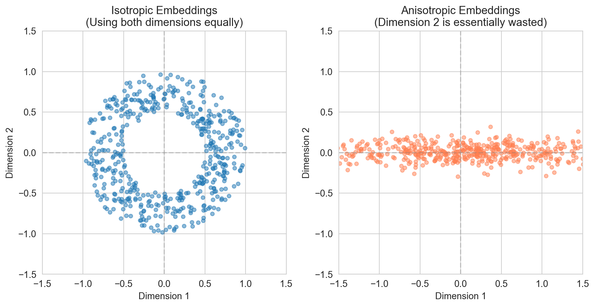
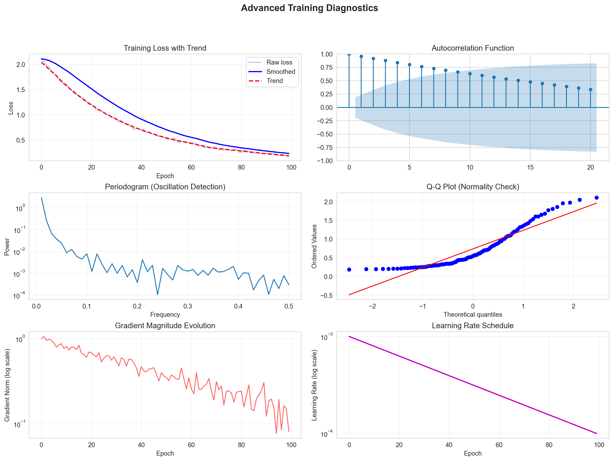
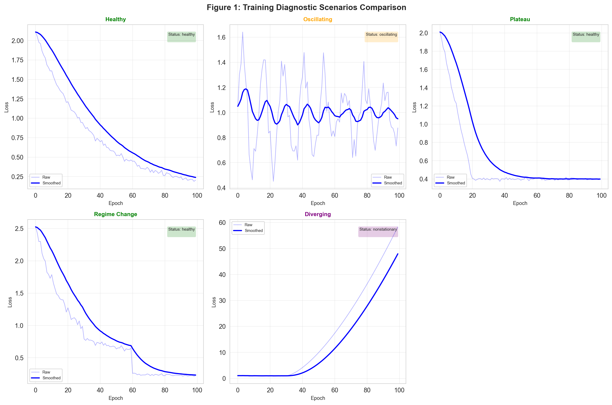
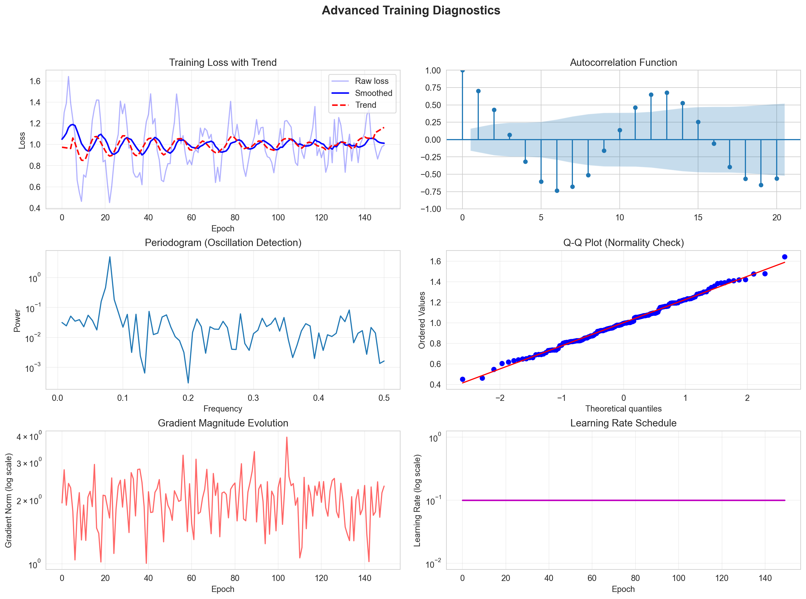
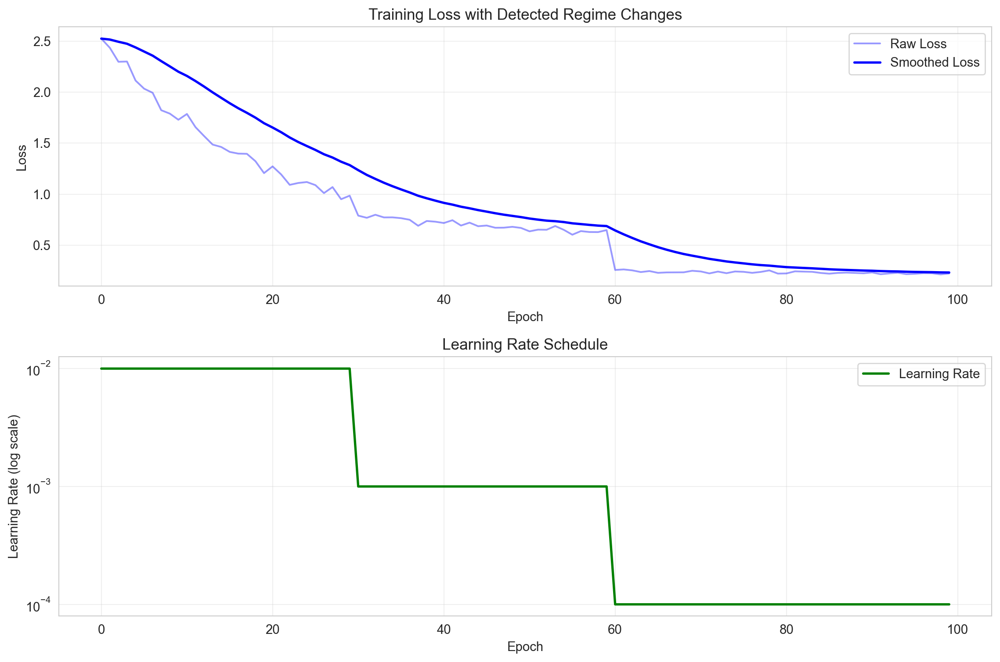

Embedding models transform high-dimensional, discrete objects into continuous vector spaces where geometric relationships encode task-relevant similarity, whether that’s behavioral patterns for users, structural roles in networks, or attribute relationships for products. These representations power recommendation engines, fraud detection systems, customer segmentation, and predictive analytics across virtually every industry. Table 220.1 shows the similarity term is understood across different domains.
Table 220.1: Similarity Terminologies Across Domains
Domain
Similarity Term
What It Actually Captures
Words/Text
Semantic similarity
Meaning, synonymy, relatedness
Users
Behavioral similarity
Similar preferences, actions, consumption patterns
Products
Functional/attribute similarity
Similar features, use cases, purchase contexts
Network nodes
Structural similarity
Similar connectivity patterns, roles, neighborhood structure
Locations
Spatial/contextual similarity
Geographic proximity, similar visit patterns
However, the gap between training an embedding model and deploying it in production is vast. A model that achieves impressive loss curves during training may fail catastrophically when confronted with real-world distribution shift, concept drift, or simply data that differs subtly from the training regime. This chapter provides a framework for evaluating, validating, and monitoring embedding models throughout their lifecycle.
We organize our treatment around three temporal phases:
Pre-deployment evaluation: Intrinsic quality metrics, downstream task validation, and robustness testing before the model enters production
Deployment validation: A/B testing, online metrics, and canary deployments that confirm the model performs as expected with real users
Production monitoring: Continuous surveillance for drift, degradation, and anomalies that signal when intervention is required
Throughout, we use a running business example: a streaming media platform that embeds users, content items, and viewing sessions to power personalized recommendations. This temporal, streaming context mirrors the challenges faced in retail, financial services, healthcare, and any domain where data arrives continuously and patterns evolve.
220.1 Why Evaluation Matters in Business Contexts
Consider a retail e-commerce platform that deploys product embeddings to power “similar items” recommendations. Without rigorous evaluation:
Silent degradation: The model may slowly drift as product catalogs change, with no alert until revenue drops
Popularity bias: Embeddings may collapse to recommend only popular items, reducing catalog coverage and long-tail sales
Cold start failures: New products may receive poor embeddings, preventing discovery
Seasonal concept drift: Product relationships that held during training (winter coats similar to scarves) may not hold year-round
Proper evaluation catches these issues early, enabling proactive intervention rather than reactive firefighting.
220.2 Mathematical Preliminaries
Let \(\mathcal{X}\) denote our input space (e.g., the set of all users, products, or nodes in a network). An embedding function \(f: \mathcal{X} \rightarrow \mathbb{R}^d\) maps each entity \(x \in \mathcal{X}\) to a \(d\)-dimensional real vector. We denote the embedding of an entity \(x\) as \(\mathbf{e}_x = f(x)\).
The embedding matrix \(\mathbf{E} \in \mathbb{R}^{n \times d}\) contains embeddings for \(n\) entities, with each row \(\mathbf{E}_i\) representing entity \(i\).
For temporal embeddings, we index by time: \(\mathbf{E}^{(t)}\) represents the embedding matrix at time \(t\), and \(\mathbf{e}_x^{(t)}\) denotes the embedding of the entity \(x\) at time \(t\).
Common distance and similarity functions summarized in Table 220.2
Before we deploy an embedding model to power recommendations, detect fraud, or segment customers, we want to know: Are these embeddings any good?
There are two fundamentally different ways to answer this question:
Extrinsic evaluation: Test performance on a downstream task (e.g., does using these embeddings improve click-through rate? Can we predict which users will churn?)
Intrinsic evaluation: Examine the geometric and statistical properties of the embeddings themselves, independent of any specific task
We first focus on intrinsic evaluation. Think of it as a health check for your embedding space (i.e., diagnosing problems with the embeddings before you invest time and money deploying them).
221.0.1 Why Bother with Intrinsic Metrics?
You might wonder: if we ultimately care about downstream performance, why examine embeddings in isolation?
Practical reasons:
Speed: Intrinsic metrics compute in seconds; downstream evaluation might require A/B tests running for weeks
Diagnosis: When downstream performance is poor, intrinsic metrics help identify why
Early warning: Catch problems during training, not after deployment
Comparison: Compare embedding methods before committing to expensive integration
Conceptual reason:
Embeddings are supposed to represent entities in a space where geometry encodes relationships. If the geometry itself is degenerate (i.e., all points clustered together, some dimensions unused, certain points dominating nearest-neighbor queries), then no downstream task can fully recover.
Intrinsic evaluation asks: Is this embedding space geometrically healthy?
221.0.2 Isotropy: Are We Using the Whole Space?
Imagine you’re given a 100-dimensional space to represent 1 million users. You have 100 “degrees of freedom” to capture the diversity of user preferences, behaviors, and characteristics.
Now imagine that your embedding algorithm produces vectors where:
Dimension 1 has values ranging from -10 to +10
Dimension 2 has values ranging from -0.01 to +0.01
Dimensions 3-100 have values clustered tightly around zero
You’ve effectively wasted 99 of your 100 dimensions. Your “100-dimensional” embeddings are really just 1-dimensional, with noise in the other directions.
This is anisotropy: the embedding space is stretched in some directions and compressed in others, rather than using all directions equally.
Isotropic embeddings, by contrast, spread out evenly across all available dimensions (e.g., like a cloud of points forming a sphere rather than a cigar).
Let’s build intuition with a simple 2D example before moving to high dimensions.
Code
fig, axes = plt.subplots(1, 2)n_points =500# Isotropic: points spread evenly in a circletheta = np.random.uniform(0, 2* np.pi, n_points)r = np.random.uniform(0.5, 1.0, n_points)iso_x = r * np.cos(theta)iso_y = r * np.sin(theta)ax = axes[0]ax.scatter(iso_x, iso_y, alpha=0.5, s=20)ax.set_xlim(-1.5, 1.5)ax.set_ylim(-1.5, 1.5)ax.set_aspect('equal')ax.axhline(y=0, color='gray', linestyle='--', alpha=0.3)ax.axvline(x=0, color='gray', linestyle='--', alpha=0.3)ax.set_xlabel('Dimension 1')ax.set_ylabel('Dimension 2')ax.set_title('Isotropic Embeddings\n(Using both dimensions equally)')# Anisotropic: points stretched along one directionaniso_x = np.random.normal(0, 1.0, n_points) # Wide spreadaniso_y = np.random.normal(0, 0.1, n_points) # Narrow spreadax = axes[1]ax.scatter(aniso_x, aniso_y, alpha=0.5, s=20, color='coral')ax.set_xlim(-1.5, 1.5)ax.set_ylim(-1.5, 1.5)ax.set_aspect('equal')ax.axhline(y=0, color='gray', linestyle='--', alpha=0.3)ax.axvline(x=0, color='gray', linestyle='--', alpha=0.3)ax.set_xlabel('Dimension 1')ax.set_ylabel('Dimension 2')ax.set_title('Anisotropic Embeddings\n(Dimension 2 is essentially wasted)')plt.tight_layout()plt.show()# Compute variance in each directionprint("Variance by dimension:")print(f" Isotropic: Dim 1 = {np.var(iso_x):.3f}, Dim 2 = {np.var(iso_y):.3f}, Ratio = {np.var(iso_x)/np.var(iso_y):.1f}")print(f" Anisotropic: Dim 1 = {np.var(aniso_x):.3f}, Dim 2 = {np.var(aniso_y):.3f}, Ratio = {np.var(aniso_x)/np.var(aniso_y):.1f}")

Figure 221.1: Isotropic embeddings (left) spread evenly in all directions. Anisotropic embeddings (right) cluster along a dominant direction, wasting one dimension.
Variance by dimension:
Isotropic: Dim 1 = 0.295, Dim 2 = 0.273, Ratio = 1.1
Anisotropic: Dim 1 = 0.966, Dim 2 = 0.010, Ratio = 97.9
In the isotropic case, both dimensions carry roughly equal variance (i.e., both are “doing work” to distinguish points). In the anisotropic case, dimension 1 carries 100× more variance than dimension 2. You could almost ignore dimension 2 entirely.
221.0.3 Why Does Anisotropy Happen?
Anisotropy isn’t random bad luck, it emerges systematically from how embeddings are trained:
Frequency effects in language models
In Word2Vec-style models, common words get updated far more often than rare words. This pushes embeddings toward a “common direction” that all frequent words share. The result: all word vectors point roughly the same way, with small deviations encoding actual meaning.
Popularity bias in recommendation systems
Popular items appear in many training examples. User embeddings get pulled toward popular items, and item embeddings get pulled toward the “average user.” The dominant direction becomes “popularity,” not “preference.”
Optimization dynamics
Gradient descent often finds solutions that use only a subspace of available dimensions. If the loss function can be minimized using 10 dimensions, the optimizer has no incentive to spread information across all 100.
Layer depth in neural networks
In deep networks (like BERT), anisotropy often increases with layer depth (Ethayarajh 2019). Early layers produce more isotropic representations; later layers collapse toward dominant directions.
221.0.4 The Consequence: Similarity Becomes Meaningless
Here’s why anisotropy matters for downstream applications:
When embeddings are anisotropic, cosine similarity loses discriminative power.
Figure 221.2: In isotropic spaces, cosine similarity spreads across a wide range, enabling fine-grained distinctions. In anisotropic spaces, all pairs have high similarity, everything looks alike.
Isotropic: Mean similarity = -0.013, Std = 0.707
Anisotropic: Mean similarity = 0.019, Std = 0.911
In the isotropic case, cosine similarities range widely from -1 to +1. We can meaningfully say “user A is very similar to user B (similarity 0.9) but quite different from user C (similarity 0.1).”
In the anisotropic case, every pair has similarity around 0.9. Everyone looks like everyone else. The embedding has lost its ability to distinguish entities.
221.0.5 Moving to High Dimensions: The Math
Now that we have intuition, let’s formalize. The core insight carries over directly to high dimensions.
221.0.5.1 Variance and Principal Components
For a statistician, anisotropy is most naturally understood through the eigenvalue decomposition of the covariance matrix.
Given embedding matrix \(\mathbf{E} \in \mathbb{R}^{n \times d}\) (n entities, d dimensions), center the data:
Let \(\lambda_1 \geq \lambda_2 \geq \cdots \geq \lambda_d \geq 0\) be the eigenvalues of \(\mathbf{\Sigma}\).
Interpretation: \(\lambda_j\) is the variance of the data projected onto the \(j\)-th principal component. Large \(\lambda_1\) and small \(\lambda_d\) means most variance concentrates in few directions (i.e., anisotropy).
221.0.5.2 Isotropy Metrics Based on Eigenvalues
221.0.5.2.1Condition number (ratio of extremes):
\[
\kappa = \frac{\lambda_1}{\lambda_d}
\]
\(\kappa = 1\): Perfect isotropy (all directions equal or all eigenvalues exactly equal, which never happens in practice)
\(\kappa > 1\): Some anisotropy exists (dominant directions)
Table 221.1: Condition Number Interpretation
\(\kappa\)
Interpretation
1 - 5
Healthy, minor differences across dimensions
5 - 20
Mild anisotropy, probably fine
20 - 100
Moderate anisotropy, worth investigating
100+
Severe anisotropy, likely problematic
1000+
Extreme (some dimensions essentially unused)
Real embeddings from well-trained models typically have \(\kappa\) in the 5-50 range. When you see \(\kappa > 100\), it means the largest eigenvalue is 100× bigger than the smallest (i.e., the smallest direction captures essentially no variance compared to the dominant one). See Table 221.1.
221.0.5.2.2Participation ratio (effective dimensionality):
This metric, borrowed from physics, asks: “how many dimensions are actually contributing?”
Figure 221.3: Eigenvalue spectra reveal isotropy. Flat spectrum (left) means all dimensions contribute equally. Rapidly decaying spectrum (right) means few dimensions dominate.
The eigenvalues are remarkably flat across all 50 principal components, ranging only from ~1.5 to ~0.6. This means variance is distributed nearly equally across all dimensions, no single component dominates.
The Participation Ratio (47.7/50): This metric quantifies “effective dimensionality.” A value of 47.7 out of 50 means the data effectively uses almost all available dimensions.
What this tells you: Isotropic data behaves like a spherical cloud in high-dimensional space. There’s no low-dimensional structure to exploit, you can’t reduce dimensionality without losing substantial information. This is characteristic of pure noise or data where all features contribute independently and equally.
Contrast with anisotropic: The bottom panel shows eigenvalues dropping sharply, with PR = 10.2/50. That data has clear structure (i.e., a few dominant directions capture most variance) making dimensionality reduction effective.
Practical implication: If your actual data looks isotropic, PCA won’t help much for compression or feature extraction. If it looks anisotropic, you can safely retain only the top ~10 components.
221.0.5.2.3 Average Pairwise Cosine Similarity (APCS)
An alternative approach: directly measure how similar random embedding pairs are.
For isotropic embeddings uniformly distributed on the unit hypersphere in \(\mathbb{R}^d\), theory tells us:
As dimensionality increases, random vectors become nearly orthogonal (the “blessing of dimensionality” for some applications, “curse” for others).1
In practice:
APCS\(\approx 0\): Healthy, isotropic embeddings
APCS\(> 0.3\): Moderate anisotropy, reduced discriminative power
APCS\(> 0.7\): Severe anisotropy, embeddings nearly useless for similarity
Computing and interpreting APCS
def compute_apcs(embeddings, n_pairs=10000):""" Compute Average Pairwise Cosine Similarity. This directly measures how "spread out" embeddings are. """ n, d = embeddings.shape# Normalize to unit length norms = np.linalg.norm(embeddings, axis=1, keepdims=True) normalized = embeddings / (norms +1e-10)# Sample random pairs sims = []for _ inrange(n_pairs): i, j = np.random.choice(n, 2, replace=False) cos_sim = np.dot(normalized[i], normalized[j]) sims.append(cos_sim)return {'mean': np.mean(sims),'std': np.std(sims),'median': np.median(sims),'percentile_5': np.percentile(sims, 5),'percentile_95': np.percentile(sims, 95) }print("AVERAGE PAIRWISE COSINE SIMILARITY (APCS)")print("="*60)iso_apcs = compute_apcs(iso_high)print(f"\nIsotropic embeddings:")print(f" APCS = {iso_apcs['mean']:.4f} ± {iso_apcs['std']:.4f}")print(f" Range (5th-95th percentile): [{iso_apcs['percentile_5']:.3f}, {iso_apcs['percentile_95']:.3f}]")print(f" Interpretation: Random pairs are nearly orthogonal ✓")aniso_apcs = compute_apcs(aniso_high)print(f"\nAnisotropic embeddings:")print(f" APCS = {aniso_apcs['mean']:.4f} ± {aniso_apcs['std']:.4f}")print(f" Range (5th-95th percentile): [{aniso_apcs['percentile_5']:.3f}, {aniso_apcs['percentile_95']:.3f}]")print(f" Interpretation: All pairs moderately similar, discriminative power reduced")
AVERAGE PAIRWISE COSINE SIMILARITY (APCS)
============================================================
Isotropic embeddings:
APCS = 0.0014 ± 0.1397
Range (5th-95th percentile): [-0.229, 0.232]
Interpretation: Random pairs are nearly orthogonal ✓
Anisotropic embeddings:
APCS = -0.0057 ± 0.2993
Range (5th-95th percentile): [-0.492, 0.488]
Interpretation: All pairs moderately similar, discriminative power reduced
221.0.6 Connecting Eigenvalues and APCS
These two perspectives (i.e., eigenvalue-based and similarity-based) are mathematically connected.
When the covariance matrix has a dominant eigenvector, all embeddings tend to align with that direction. Alignment means high cosine similarity between pairs.
Rough relationship: If the first principal component explains fraction \(\rho\) of total variance:
So participation ratio dropping (i.e., variance concentrating) implies APCS rising (pairs becoming similar).
221.0.7 Practical Guidelines
Based on empirical studies across NLP, recommender systems, and graph embeddings:
Table 221.2: Isotropic Metrics
Metric
Healthy
Concerning
Problematic
APCS
< 0.1
0.1 - 0.3
> 0.3
Participation Ratio / d
> 50%
20% - 50%
< 20%
Condition Number
< 10
10 - 100
> 100
Dims for 90% Variance
> 30% of d
10% - 30%
< 10%
In Table 221.2 These aren’t hard thresholds; context matters. But they provide useful diagnostic benchmarks.
221.0.8 What Causes Anisotropy? A Deeper Look
Understanding causes helps prevent anisotropy, not just detect it.
221.0.8.1 The Frequency-Weighted Mean Problem
Consider Skip-gram Word2Vec. Each word \(w\) with embedding \(\mathbf{e}_w\) gets updated when it appears in training. The update roughly pushes \(\mathbf{e}_w\) toward the average of its context words.
Frequent words get many more updates. They get pushed toward the frequency-weighted mean of all words. Over time, all embeddings converge toward this common direction.
Formally, if word \(w\) appears \(f_w\) times and contexts are uniformly sampled:
This removes the “common direction” while preserving relative differences. Often works better than full whitening.
Kernel-Whitening
Standard ZCA/PCA whitening assumes linear correlations between dimensions. Kernel-Whitening addresses non-linear dependencies that linear whitening cannot remove.
How it works: It projects the embeddings into a higher-dimensional Reproducing Kernel Hilbert Space (RKHS) and performs whitening there. This is often approximated using the Nyström method to keep it computationally feasible.
Why use it: It is particularly effective if your embeddings contain complex, non-linear biases (e.g., stylistic biases in text) that linear removal (like All-but-the-top) fails to eliminate.
Regularization Terms (loss-based correction)
Instead of changing the architecture (like IsoBN), you can add a penalty term to your loss function during training to explicitly punish anisotropy.
Cosine Regularization: You add a term that minimizes the cosine similarity between random non-matching pairs in a batch.
This forces the model to push unrelated vectors apart, expanding the “cone” they usually collapse into.
Whitening Penalty: You can directly penalize the difference between the embedding covariance matrix \(\Sigma\) and the identity matrix \(I\):
\(L_{reg} = || \Sigma - I ||_F^2\) (Where \(||\cdot||_F\) is the Frobenius norm).
Conceptor Negation (Soft Projection)
“All-but-the-top” removal is a “hard” projection, it completely deletes the top principal component. Conceptors offer a “soft” alternative that dampens dominant directions without removing them entirely.
How it works: A “conceptor” is a matrix that represents a subspace (like the direction of high anisotropy). Instead of subtracting this direction, you apply a logical “NOT” operation using matrix algebra.
\(x_{new} = x_{old} (I - C)\)$
Where \(C\) is the conceptor matrix representing the common direction.
Why use it: Hard removal can accidentally delete useful information if the “noise” direction overlaps with actual meaning. Conceptors allow you to dial down the noise intensity rather than cutting it to zero.
Layer-wise Adaptation (Last-Layer Normalization)
Anisotropy is most severe in the final layers of a model. Instead of post-processing the output, this method alters the architecture at the very end.
How it works: You replace the standard Layer Normalization in the final transformer block with a specialized normalization that enforces a unit sphere distribution before the final projection.
Why use it: It corrects the geometry at the source. Research shows that the bias parameters in the final LayerNorm are often the primary culprits for the “cone effect.” Setting these biases to zero or retraining strictly that layer can resolve the issue.
Demonstrating anisotropy correction
def remove_principal_components(embeddings, n_remove=1):"""Remove top principal components to reduce anisotropy."""# Center mean = np.mean(embeddings, axis=0) centered = embeddings - mean# SVD to find principal components U, S, Vt = np.linalg.svd(centered, full_matrices=False)# Remove top components result = centered.copy()for j inrange(n_remove): component = Vt[j] # j-th principal direction projections = centered @ component # Project all points result = result - np.outer(projections, component) # Subtract projectionreturn result# Apply correction to anisotropic embeddingscorrected = remove_principal_components(aniso_high, n_remove=3)print("ANISOTROPY CORRECTION")print("="*60)print("\nBefore correction:")print(f" APCS = {aniso_apcs['mean']:.4f}")print(f" Participation Ratio = {aniso_metrics['participation_ratio']:.1f}")corrected_apcs = compute_apcs(corrected)corrected_metrics = compute_eigenvalue_metrics(corrected)print("\nAfter removing top 3 principal components:")print(f" APCS = {corrected_apcs['mean']:.4f}")print(f" Participation Ratio = {corrected_metrics['participation_ratio']:.1f}")
ANISOTROPY CORRECTION
============================================================
Before correction:
APCS = -0.0057
Participation Ratio = 9.8
After removing top 3 principal components:
APCS = 0.0025
Participation Ratio = 10.1
221.0.10 Summary: The Isotropy Checklist
Before deploying embeddings, check:
Compute APCS: Should be < 0.1 for healthy embeddings
Examine eigenvalue spectrum: Should decay gradually, not precipitously
Check participation ratio: Should be > 50% of nominal dimension
If anisotropic: Consider removing top principal components before use
Anisotropic embeddings aren’t necessarily useless, but they have reduced representational capacity. You’re paying for \(d\) dimensions but only using a fraction of them.
221.0.11 Business Example: User Embeddings at a Streaming Platform
Consider a streaming platform that learns user embeddings from viewing history to power recommendations. If these embeddings are anisotropic, several problems emerge:
Reduced personalization: If all user embeddings point in roughly the same direction, the system cannot distinguish between users with different tastes
Popularity bias amplification: Anisotropic embeddings often emerge when popular content dominates training, pushing all users toward similar representations
Cold start failures: New users get embeddings that look like everyone else, preventing differentiated recommendations
Code
def compute_isotropy_metrics(embeddings: np.ndarray, sample_size: int=5000) -> Dict:""" Compute comprehensive isotropy metrics for an embedding matrix. Parameters ---------- embeddings : np.ndarray Embedding matrix of shape (n_entities, embedding_dim) sample_size : int Number of pairs to sample for APCS computation (for efficiency) Returns ------- dict Dictionary containing isotropy metrics: - apcs: Average pairwise cosine similarity - apcs_std: Standard deviation of pairwise similarities - isotropy_score: Ratio of min to max eigenvalue - participation_ratio: Effective dimensionality - effective_dim_entropy: Entropy-based effective dimension - dim_90_variance: Dimensions needed for 90% variance - eigenvalues: Full eigenvalue spectrum """ n, d = embeddings.shape# Normalize embeddings for cosine similarity norms = np.linalg.norm(embeddings, axis=1, keepdims=True) norms = np.where(norms ==0, 1, norms) # Avoid division by zero normalized = embeddings / norms# 1. Average Pairwise Cosine Similarity (APCS)# Sample for computational efficiency with large matricesif n > sample_size: idx = np.random.choice(n, sample_size, replace=False) sample = normalized[idx]else: sample = normalized# Compute pairwise cosine similarities via matrix multiplication sim_matrix = sample @ sample.T# Extract upper triangle (excluding diagonal) upper_tri_indices = np.triu_indices(len(sample), k=1) pairwise_sims = sim_matrix[upper_tri_indices] apcs = np.mean(pairwise_sims) apcs_std = np.std(pairwise_sims)# 2. Eigenvalue-based isotropy# Center the embeddings centered = embeddings - np.mean(embeddings, axis=0)# Compute covariance matrix cov_matrix = (centered.T @ centered) / n# Eigenvalue decomposition (returns sorted ascending) eigenvalues = np.linalg.eigvalsh(cov_matrix) eigenvalues = np.sort(eigenvalues)[::-1] # Descending order# Filter out near-zero eigenvalues for numerical stability significant_eigenvalues = eigenvalues[eigenvalues >1e-10]# Isotropy score (min/max eigenvalue ratio)iflen(significant_eigenvalues) >0: isotropy_score = significant_eigenvalues[-1] / significant_eigenvalues[0]else: isotropy_score =0.0# 3. Effective dimensionality (participation ratio)# PR = (sum of eigenvalues)^2 / sum of eigenvalues^2 eigenvalues_positive = eigenvalues[eigenvalues >0]iflen(eigenvalues_positive) >0: participation_ratio = (np.sum(eigenvalues_positive) **2) / np.sum(eigenvalues_positive **2)else: participation_ratio =0.0# 4. Entropy-based effective dimensionality# Normalize eigenvalues to form a probability distributionif np.sum(eigenvalues_positive) >0: eigenvalues_norm = eigenvalues_positive / np.sum(eigenvalues_positive) entropy =-np.sum(eigenvalues_norm * np.log(eigenvalues_norm +1e-10)) effective_dim_entropy = np.exp(entropy)else: effective_dim_entropy =0.0# 5. 90% variance dimensionalityif np.sum(eigenvalues_positive) >0: cumsum = np.cumsum(eigenvalues_positive) / np.sum(eigenvalues_positive) dim_90_variance = np.searchsorted(cumsum, 0.90) +1else: dim_90_variance = dreturn {'apcs': apcs,'apcs_std': apcs_std,'isotropy_score': isotropy_score,'participation_ratio': participation_ratio,'effective_dim_entropy': effective_dim_entropy,'dim_90_variance': dim_90_variance,'nominal_dim': d,'eigenvalues': eigenvalues }def diagnose_isotropy(metrics: Dict) ->str:""" Provide diagnostic interpretation of isotropy metrics. Returns human-readable diagnosis with recommendations. """ diagnosis = []# APCS interpretationif metrics['apcs'] <0.1: diagnosis.append("✓ APCS indicates good isotropy (embeddings well-distributed)")elif metrics['apcs'] <0.3: diagnosis.append("⚠ APCS suggests moderate anisotropy (some directional clustering)")else: diagnosis.append("✗ APCS indicates severe anisotropy (embeddings collapsed to narrow cone)")# Effective dimensionality dim_utilization = metrics['participation_ratio'] / metrics['nominal_dim']if dim_utilization >0.5: diagnosis.append(f"✓ Good dimension utilization ({dim_utilization:.1%} effective)")elif dim_utilization >0.2: diagnosis.append(f"⚠ Moderate dimension utilization ({dim_utilization:.1%} effective)")else: diagnosis.append(f"✗ Poor dimension utilization ({dim_utilization:.1%} effective)")# 90% variance dimensionality var_ratio = metrics['dim_90_variance'] / metrics['nominal_dim']if var_ratio >0.3: diagnosis.append(f"✓ Variance spread across dimensions ({metrics['dim_90_variance']}/{metrics['nominal_dim']} dims for 90% variance)")else: diagnosis.append(f"✗ Variance concentrated ({metrics['dim_90_variance']}/{metrics['nominal_dim']} dims capture 90% variance)")return"\n".join(diagnosis)
Demonstrate isotropy metrics with synthetic data
# Generate isotropic embeddings (uniform on hypersphere)def generate_isotropic_embeddings(n: int, d: int) -> np.ndarray:"""Generate embeddings uniformly distributed on unit hypersphere.""" embeddings = np.random.randn(n, d) norms = np.linalg.norm(embeddings, axis=1, keepdims=True)return embeddings / norms# Generate anisotropic embeddings (clustered in narrow cone)def generate_anisotropic_embeddings(n: int, d: int, concentration: float=0.1) -> np.ndarray:""" Generate anisotropic embeddings clustered around a mean direction. Parameters ---------- concentration : float Lower values = more concentrated (more anisotropic) """# Mean direction (dominant first dimension) mean_dir = np.zeros(d) mean_dir[0] =1.0# Add noise with varying scale per dimension scales = np.array([1.0] + [concentration] * (d -1)) embeddings = mean_dir + np.random.randn(n, d) * scales norms = np.linalg.norm(embeddings, axis=1, keepdims=True)return embeddings / norms# Compare isotropic vs anisotropicn_entities =10000embedding_dim =128np.random.seed(42)isotropic_emb = generate_isotropic_embeddings(n_entities, embedding_dim)anisotropic_emb = generate_anisotropic_embeddings(n_entities, embedding_dim, concentration=0.1)iso_metrics = compute_isotropy_metrics(isotropic_emb)aniso_metrics = compute_isotropy_metrics(anisotropic_emb)print("="*60)print("ISOTROPIC EMBEDDINGS")print("="*60)print(f"APCS: {iso_metrics['apcs']:.4f} ± {iso_metrics['apcs_std']:.4f}")print(f"Isotropy Score (λ_min/λ_max): {iso_metrics['isotropy_score']:.4f}")print(f"Participation Ratio: {iso_metrics['participation_ratio']:.1f} / {iso_metrics['nominal_dim']}")print(f"Effective Dim (entropy): {iso_metrics['effective_dim_entropy']:.1f}")print(f"Dims for 90% variance: {iso_metrics['dim_90_variance']}")print()print(diagnose_isotropy(iso_metrics))print()print("="*60)print("ANISOTROPIC EMBEDDINGS")print("="*60)print(f"APCS: {aniso_metrics['apcs']:.4f} ± {aniso_metrics['apcs_std']:.4f}")print(f"Isotropy Score (λ_min/λ_max): {aniso_metrics['isotropy_score']:.4f}")print(f"Participation Ratio: {aniso_metrics['participation_ratio']:.1f} / {aniso_metrics['nominal_dim']}")print(f"Effective Dim (entropy): {aniso_metrics['effective_dim_entropy']:.1f}")print(f"Dims for 90% variance: {aniso_metrics['dim_90_variance']}")print()print(diagnose_isotropy(aniso_metrics))
============================================================
ISOTROPIC EMBEDDINGS
============================================================
APCS: -0.0000 ± 0.0884
Isotropy Score (λ_min/λ_max): 0.6386
Participation Ratio: 126.4 / 128
Effective Dim (entropy): 127.2
Dims for 90% variance: 113
✓ APCS indicates good isotropy (embeddings well-distributed)
✓ Good dimension utilization (98.7% effective)
✓ Variance spread across dimensions (113/128 dims for 90% variance)
============================================================
ANISOTROPIC EMBEDDINGS
============================================================
APCS: 0.2426 ± 0.3673
Isotropy Score (λ_min/λ_max): 0.0174
Participation Ratio: 13.9 / 128
Effective Dim (entropy): 63.5
Dims for 90% variance: 108
⚠ APCS suggests moderate anisotropy (some directional clustering)
✗ Poor dimension utilization (10.8% effective)
✓ Variance spread across dimensions (108/128 dims for 90% variance)
Figure 221.4: Eigenvalue spectrum comparison: isotropic embeddings show relatively uniform eigenvalues, while anisotropic embeddings exhibit rapid decay indicating dimensional collapse.
Left Panel (Eigenvalue Spectrum)
The anisotropic embeddings (red) show a single dominant eigenvalue around 0.2, then crash dramatically to ~0.005 and stay flat. This is the signature of dimensional collapse: one direction captures most of the structure while all others are essentially noise.
The isotropic embeddings (blue) maintain relatively uniform eigenvalues around 0.01 across all ranks. No single direction dominates; variance is distributed evenly.
Right Panel (Cumulative Variance)
This shows the full 120 dimensions, which reveals the key insight:
The anisotropic line (red) starts at 0.26, that single first dimension immediately captures over a quarter of all variance. It then climbs steadily but stays consistently above the isotropic line.
The isotropic line (blue) starts near zero and climbs linearly because each dimension contributes roughly equal variance (~0.8% each).
Both reach 90% around the same number of dimensions (~108-113), which initially seems counterintuitive. But here’s why: the anisotropic embeddings get a “head start” from that dominant first dimension, then accumulate variance slowly from many weak dimensions. The isotropic embeddings accumulate steadily throughout. They converge because after that first big eigenvalue, the anisotropic remaining dimensions are actually weaker than the isotropic ones (visible in the left panel where red falls below blue after rank 1).
The practical problem this reveals: In anisotropic embeddings, 26% of the representational capacity encodes “the direction everyone points” (i.e., non-discriminative information). Only 74% remains for actually distinguishing between entities.
Simulated streaming platform user embeddings
def simulate_streaming_user_embeddings( n_users: int=5000, n_items: int=1000, embedding_dim: int=64, popularity_skew: float=0.5) -> Tuple[np.ndarray, np.ndarray, np.ndarray, np.ndarray]:""" Simulate user embeddings from a streaming platform. This mimics how matrix factorization or neural collaborative filtering learns user representations from viewing behavior. Parameters ---------- n_users : int Number of users n_items : int Number of content items (shows, movies) embedding_dim : int Dimension of embeddings popularity_skew : float Degree of popularity bias (0 = uniform, 1+ = extreme Zipf) Higher values = more views concentrated on popular items Returns ------- user_embeddings, item_embeddings, interaction_matrix, popularity """ np.random.seed(42)# Generate item embeddings (content representation) item_embeddings = np.random.randn(n_items, embedding_dim) item_embeddings = item_embeddings / np.linalg.norm(item_embeddings, axis=1, keepdims=True)# Item popularity follows Zipf distribution ranks = np.arange(1, n_items +1) popularity =1/ (ranks ** popularity_skew) popularity = popularity / popularity.sum()# Generate user viewing history views_per_user = np.random.poisson(50, n_users) interaction_matrix = np.zeros((n_users, n_items))for user_idx inrange(n_users): n_views = views_per_user[user_idx]# Each user has latent preferences user_preference = np.random.randn(embedding_dim) user_preference = user_preference / np.linalg.norm(user_preference)# Viewing probability combines preference and popularity preference_scores = item_embeddings @ user_preference combined_scores = preference_scores +3* np.log(popularity +1e-10) probs = np.exp(combined_scores - combined_scores.max()) probs = probs / probs.sum() viewed_items = np.random.choice(n_items, size=n_views, replace=True, p=probs)for item in viewed_items: interaction_matrix[user_idx, item] +=1# Learn user embeddings as weighted average of viewed items user_embeddings = np.zeros((n_users, embedding_dim))for user_idx inrange(n_users): weights = interaction_matrix[user_idx]if weights.sum() >0: user_embeddings[user_idx] = (weights @ item_embeddings) / weights.sum() norms = np.linalg.norm(user_embeddings, axis=1, keepdims=True) norms = np.where(norms ==0, 1, norms) user_embeddings = user_embeddings / normsreturn user_embeddings, item_embeddings, interaction_matrix, popularity# Compare different popularity skew levelsskew_levels = [0.0, 0.5, 1.0, 1.5]results = {}print("Impact of Popularity Bias on User Embedding Isotropy")print("="*60)for skew in skew_levels: user_emb, item_emb, interactions, pop = simulate_streaming_user_embeddings( n_users=5000, popularity_skew=skew ) metrics = compute_isotropy_metrics(user_emb) results[skew] = {'embeddings': user_emb,'metrics': metrics,'popularity': pop }print(f"\nPopularity Skew = {skew}")print(f" APCS: {metrics['apcs']:.4f}")print(f" Effective Dim: {metrics['participation_ratio']:.1f}/{metrics['nominal_dim']}")print(f" Top item gets {pop[0]*100:.1f}% of popularity")
Impact of Popularity Bias on User Embedding Isotropy
============================================================
Popularity Skew = 0.0
APCS: 0.0360
Effective Dim: 59.6/64
Top item gets 0.1% of popularity
Popularity Skew = 0.5
APCS: 0.9224
Effective Dim: 8.7/64
Top item gets 1.6% of popularity
Popularity Skew = 1.0
APCS: 0.9940
Effective Dim: 2.1/64
Top item gets 13.4% of popularity
Popularity Skew = 1.5
APCS: 0.9987
Effective Dim: 1.4/64
Top item gets 39.2% of popularity
Figure 221.5: As popularity skew increases, user embeddings become increasingly anisotropic, reducing personalization capability.
Figure 221.5 illustrates the representation collapse problem in recommendation systems as popularity skew increases.
With no popularity skew (0.0), embeddings are well-distributed across the space. The t-SNE shows a roughly uniform scatter. The effective dimensionality is high (59.6), meaning the model uses the full representational capacity to distinguish items. APCS (Average Pairwise Cosine Similarity) is low (0.036), indicating items have diverse, distinguishable embeddings.
As popularity skew increases to 0.5, items start clustering more tightly. Effective dimensionality drops to 8.7, and APCS jumps to 0.922; embeddings are becoming increasingly similar to each other.
At skew = 1.0, the pattern continues with effective dimensionality collapsing to just 2.1.
At extreme skew (1.5), you see dramatic collapse: the embeddings now form distinct tight clusters and a characteristic “horseshoe” or curved manifold structure. Effective dimensionality is only 1.4, and APCS hits 0.999: nearly all item embeddings have converged to essentially the same representation.
The takeaway: When training data is dominated by popular items (high popularity skew), the model learns to represent everything similarly rather than capturing item-specific features. This is problematic because it destroys the model’s ability to make personalized recommendations. If all items look the same in embedding space, the system can’t meaningfully distinguish between them for different users. This motivates techniques like popularity debiasing, inverse propensity weighting, or contrastive objectives to maintain representational diversity.
221.0.12 Correcting Anisotropy
Several techniques can improve embedding isotropy:
Post-hoc whitening (ZCA): Transform embeddings to have identity covariance:
All-but-the-top removal: Remove the top \(k\) principal components that capture the “common direction.” This technique, proposed by Mu, Bhat, and Viswanath (2017), removes the mean direction that dominates anisotropic spaces.
Contrastive training objectives: Methods like SimCLR and uniformity losses encourage isotropy during training (Wang and Isola 2020; Chen et al. 2020).
Methods to correct anisotropic embeddings
def whiten_embeddings(embeddings: np.ndarray, center: bool=True) -> np.ndarray:"""Apply ZCA whitening to make embeddings isotropic."""if center: mean = np.mean(embeddings, axis=0) centered = embeddings - meanelse: centered = embeddings.copy() cov = (centered.T @ centered) /len(centered) eigenvalues, eigenvectors = np.linalg.eigh(cov) eigenvalues = np.maximum(eigenvalues, 1e-6) whitening_matrix = eigenvectors @ np.diag(1.0/ np.sqrt(eigenvalues)) @ eigenvectors.Treturn centered @ whitening_matrixdef remove_top_components(embeddings: np.ndarray, n_remove: int=1) -> np.ndarray:"""Remove top principal components (the common direction).""" mean = np.mean(embeddings, axis=0) centered = embeddings - mean U, S, Vt = svd(centered, full_matrices=False) top_components = Vt[:n_remove] result = centered.copy()for component in top_components: projections = (centered @ component).reshape(-1, 1) result = result - projections * componentreturn result# Demonstrate correctionprint("CORRECTION METHODS FOR ANISOTROPIC EMBEDDINGS")print("="*60)print("\nOriginal anisotropic embeddings:")print(diagnose_isotropy(aniso_metrics))whitened = whiten_embeddings(anisotropic_emb)whitened_metrics = compute_isotropy_metrics(whitened)print("\nAfter ZCA whitening:")print(diagnose_isotropy(whitened_metrics))cleaned = remove_top_components(anisotropic_emb, n_remove=3)cleaned_metrics = compute_isotropy_metrics(cleaned)print("\nAfter removing top 3 components:")print(diagnose_isotropy(cleaned_metrics))
CORRECTION METHODS FOR ANISOTROPIC EMBEDDINGS
============================================================
Original anisotropic embeddings:
⚠ APCS suggests moderate anisotropy (some directional clustering)
✗ Poor dimension utilization (10.8% effective)
✓ Variance spread across dimensions (108/128 dims for 90% variance)
After ZCA whitening:
✓ APCS indicates good isotropy (embeddings well-distributed)
✓ Good dimension utilization (100.0% effective)
✓ Variance spread across dimensions (116/128 dims for 90% variance)
After removing top 3 components:
✓ APCS indicates good isotropy (embeddings well-distributed)
✓ Good dimension utilization (96.2% effective)
✓ Variance spread across dimensions (110/128 dims for 90% variance)
221.1 Hubness
We’ve established that embeddings should spread evenly across dimensions. But there’s another geometric pathology lurking in high-dimensional spaces: hubness.
Some points become “hubs” that appear as nearest neighbors of many other points, even when they shouldn’t be semantically related. This distorts retrieval and recommendation.
Hubness emerges from the geometry of high-dimensional spaces, interacts with anisotropy, and has its own distinct consequences and remedies. We turn to this phenomenon next.
221.1.1 The Curse of Dimensionality and Hubness
In high-dimensional spaces, a phenomenon called hubness distorts nearest-neighbor retrieval. Some points become hubs (i.e., appearing as nearest neighbors of disproportionately many other points). Conversely, anti-hubs rarely appear as anyone’s neighbor.
Radovanovic, Nanopoulos, and Ivanovic (2010) showed that this emerges from the concentration of distances in high dimensions. As dimensionality increases, distances become more uniform, making nearest-neighbor relationships increasingly arbitrary.
Let \(N_k(x)\) denote the k-occurrence of point \(x\): how many times \(x\) appears among the \(k\) nearest neighbors of other points. Hubness manifests as positive skew in \(N_k\):
Figure 221.6: Distribution of k-occurrences comparing isotropic vs anisotropic embeddings.
Figure 221.6 illustrates the hubness problem in embedding spaces by showing the distribution of k-occurrences (how often each point appears as a k-nearest neighbor of other points).
Left panel (Isotropic Embeddings): Despite being “isotropic” (uniform variance across dimensions), you see a highly skewed distribution (skewness = 7.22). Most points appear as neighbors very few times (the tall bar near 0), but a small number of points appear as neighbors extremely often, up to 350 times. These are hubs: points that disproportionately dominate the nearest neighbor lists of many other points, even though they may not be semantically related. This is problematic for retrieval because the same few items keep getting recommended regardless of the query.
Right panel (Anisotropic Embeddings): Counterintuitively, the anisotropic embeddings show a much healthier, roughly symmetric distribution (skewness ≈ -0.16) centered around the expected mean of 10. Each point appears as a neighbor a roughly equal number of times, which is what you’d want for fair retrieval.
The paradox here: The labels seem swapped from what you’d typically expect. Usually anisotropic embeddings (where variance concentrates in few dimensions) are associated with hubness problems. This figure demonstrates that:
Isotropy alone doesn’t prevent hubness. It can emerge from high dimensionality itself (the “curse of dimensionality”)
Or the specific structure of these “anisotropic” embeddings happens to mitigate hubness through some other property
Practical implication: When evaluating embedding quality, you need to check the k-occurrence distribution, not just isotropy metrics. Hubness directly degrades retrieval performance by creating “popular” points that crowd out genuinely relevant neighbors.
221.1.2 Business Impact of Hubness
In a recommendation system, hubs manifest as items recommended to everyone regardless of preferences (e..g, typically already-popular items). Anti-hubs never get recommended despite potential relevance. This creates:
Popularity bias: Popular items dominate all recommendations
Long-tail invisibility: Niche products become undiscoverable
Revenue loss: Customers see the same items everywhere, reducing discovery
221.2 Embedding Stability
Embeddings should be robust to initialization randomness, data perturbations, and temporal evolution. Unstable embeddings lead to inconsistent downstream behavior.
221.2.1 Measuring Stability Across Random Seeds
Embedding algorithms contain stochastic components (e.g., random initialization, stochastic gradient descent, negative sampling) that produce different solutions across runs. If embeddings change substantially with different random seeds, downstream applications face several problems:
irreproducible research findings
inconsistent recommendation quality in production
difficulty diagnosing whether performance changes stem from model improvements or random variation.
Stability is particularly important in high-stakes applications. A recommendation system that produces substantially different rankings depending on when it was trained undermines user trust and complicates A/B testing. For academic research, unstable embeddings make it difficult to attribute performance differences to methodological improvements versus lucky seeds.
221.2.1.1 The Identification Problem
Embeddings present a fundamental challenge for stability measurement: they are only identified up to orthogonal transformations. If \(\mathbf{E}\) is a valid embedding matrix, then \(\mathbf{E}\mathbf{Q}\) is equally valid for any orthogonal matrix \(\mathbf{Q}\) (rotation or reflection), since inner products remain unchanged:
This means two embedding matrices could encode identical information while appearing completely different element-wise. Naively computing correlations between raw embedding values would severely underestimate stability.
221.2.1.2 Procrustes Analysis
Procrustes analysis solves this identification problem by finding the optimal orthogonal transformation that aligns one embedding matrix to another before measuring differences (Gower and Dijksterhuis 2004). Given two centered and scaled embedding matrices \(\mathbf{E}_1\) and \(\mathbf{E}_2\), we seek the orthogonal matrix \(\mathbf{R}^*\) that minimizes:
The solution follows from the singular value decomposition. Computing \(\mathbf{M} = \mathbf{E}_1^\top\mathbf{E}_2\) and its SVD \(\mathbf{M} = \mathbf{U}\mathbf{S}\mathbf{V}^\top\), the optimal rotation is:
\[\mathbf{R}^* = \mathbf{V}\mathbf{U}^\top\]
This classic result from Schönemann (1966) provides a closed-form solution that aligns the embeddings optimally in the least-squares sense.
221.2.1.3 Stability Metrics
After alignment, we compute three complementary metrics:
Procrustes Distance measures the residual misalignment after optimal transformation:
Values near zero indicate that embeddings are nearly identical up to rotation. For normalized embeddings, the maximum possible distance is \(\sqrt{2n}\) (when embeddings are orthogonal), so values can be interpreted relative to this bound.
Mean Cosine Similarity After Alignment captures how well individual embedding vectors match their counterparts:
This is arguably the most important metric for downstream applications. Even if individual embeddings shift, what matters is whether similar items remain similar and dissimilar items remain dissimilar. High correlation indicates the relational structure is stable.
The demonstration compares high-stability (noise = 0.1) and low-stability (noise = 1.0) scenarios:
Condition
Procrustes Distance
Pairwise Correlation
High Stability
~0.14
~0.99
Low Stability
~0.89
~0.50
With low noise, embeddings are nearly identical after alignment. Procrustes distance is small and pairwise correlations approach 1.0. The similarity structure is almost perfectly preserved across seeds.
With high noise, Procrustes distance increases substantially and pairwise correlation drops to around 0.5. This means approximately half the variance in pairwise similarities is attributable to random seed choice rather than true semantic relationships. This is a concerning level of instability for production systems.
221.2.2 Practical Guidelines
Based on empirical work in the literature, reasonable stability thresholds are:
Pairwise correlation 0.85 to 0.95: Acceptable for most applications; consider averaging across seeds
Pairwise correlation < 0.85: Problematic; investigate sources of instability
When stability is low, several remediation strategies exist:
using deterministic algorithms where available,
averaging embeddings across multiple seeds,
increasing training data or epochs to reduce optimization variance,
using consensus-based approaches that identify the stable core of the embedding space.
221.2.3 Temporal Stability Monitoring
Production embedding systems face a challenge that static evaluation cannot capture: the world changes. User preferences evolve, item catalogs turn over, and the underlying data distribution shifts. Embeddings trained on historical data gradually become stale, degrading recommendation quality in ways that may not trigger obvious failures. Temporal stability monitoring provides early warning of drift before it impacts business metrics.
This problem is distinct from random seed instability. Seed instability reflects optimization variance under fixed conditions; temporal drift reflects genuine changes in the underlying relationships the embeddings encode. Both matter, but they require different monitoring approaches and remediation strategies.
221.2.3.1 Sources of Embedding Drift
Embedding drift emerges from several mechanisms:
Concept drift occurs when the relationships between entities genuinely change. A product that was premium becomes mainstream; a creator who made comedy pivots to drama; political terminology shifts valence. The old embeddings accurately reflected past relationships but no longer describe the current reality.
Population drift arises from changes in the entity set itself. New items lack embedding history and must be inferred or cold-started. Departed items leave gaps in the similarity structure. If popular items churn frequently, large portions of the embedding space become unstable.
Feedback loops create self-reinforcing drift. Recommendations based on current embeddings shape user behavior, which generates training data for future embeddings. Small initial biases can amplify over time, causing embeddings to drift toward degenerate states that reflect algorithmic artifacts rather than user preferences.
Distribution shift in training data (e.g., seasonal patterns, marketing campaigns, external events) can cause embeddings to fluctuate even when underlying preferences remain stable. Monitoring must distinguish meaningful drift from noise.
221.2.3.2 Drift Detection Framework
Effective monitoring requires comparing embeddings across time points while accounting for the identification problem discussed earlier. Our framework computes several complementary metrics at each monitoring interval:
Mean Embedding Drift measures average movement in the aligned embedding space:
where \(\mathbf{R}^*\) is the Procrustes alignment matrix. This captures typical displacement magnitude. The standard deviation of per-entity drift identifies whether movement is uniform or concentrated in specific items.
This metric is robust to global transformations and focuses on whether the similarity structure (i.e., which items are similar to which) remains stable. Correlation above 0.95 typically indicates acceptable stability; drops below 0.90 warrant investigation.
where \(d_i\) is the drift for entity \(i\) and \(k\) is typically set to 2 or 3. A baseline anomaly rate around 2-5% is expected from natural variation. Elevated rates suggest systematic issues: perhaps a category of items was relabeled, or a data pipeline error corrupted certain features.
Unlike mean drift, this is sensitive to the embedding dimension and scale. It’s most useful for tracking trends over time rather than interpreting absolute values.
Figure 221.7: Monitoring embedding stability over time with drift detection.
221.2.3.3 Interpreting the Monitoring Dashboard
Figure 221.7 presents a four-panel monitoring dashboard typical of production embedding systems:
Panel A (Mean Drift Over Time) shows the average embedding displacement at each monitoring interval, with uncertainty bands. Gradual upward trends suggest accumulating drift that may require retraining. Sudden spikes, marked by red vertical lines, indicate drift alerts (i.e., periods where movement exceeded normal thresholds). These warrant immediate investigation: What changed in the data? Was there a pipeline issue? Did a major external event shift user behavior?
Panel B (Structural Consistency) tracks pairwise correlation over time. This is often the most actionable metric because it directly reflects whether the similarity relationships that drive recommendations remain valid. Stable correlation near 1.0 indicates the embedding structure is holding despite surface-level drift. Declining correlation signals that the fundamental organization of the embedding space is changing (i.e., similar items are becoming dissimilar, or vice versa).
Panel C (Entity-Level Anomalies) shows what fraction of entities experienced unusually large drift at each time point. The red dashed line indicates a 5% threshold; rates consistently above this suggest systematic issues rather than random variation. Examining which specific entities are flagged often reveals the root cause. Perhaps all items from a particular category, or all items added after a certain date.
Panel D (Global Structure Shift) displays Procrustes distance over time. This aggregate measure is useful for detecting regime changes (i.e., periods where the overall embedding geometry shifted substantially). Unlike pairwise correlation, it’s sensitive to global scaling and rotation, making it useful for detecting issues like feature normalization bugs that might preserve relative similarities while dramatically shifting absolute positions.
221.2.3.4 Alert Thresholds and Response
Setting appropriate alert thresholds requires balancing sensitivity against alert fatigue. Overly sensitive thresholds generate false alarms that teams learn to ignore; overly permissive thresholds miss genuine drift until downstream metrics suffer. Table 221.3 shows a reasonable starting point.
Table 221.3: Starting Point for Temporal Stability Monitoring
Metric
Warning
Critical
Mean Drift
> 1.5× baseline
> 2.5× baseline
Pairwise Correlation
< 0.95
< 0.90
Anomalous Fraction
> 5%
> 10%
Procrustes Distance
> 2σ above trend
> 3σ above trend
These thresholds should be calibrated to each system based on historical variability and the cost of false positives versus missed detections.
When alerts trigger, the response depends on severity and pattern:
Isolated spikes often reflect data quality issues, such as missing features, pipeline delays, or upstream changes. Investigate recent deployments and data source modifications.
Gradual trends indicate natural drift requiring scheduled retraining. The monitoring data helps determine optimal retraining frequency.
Sudden regime shifts suggest major changes, such as new item categories, user population shifts, or algorithm modifications. These may require not just retraining but model architecture review.
221.2.3.5 Practical Considerations
Baseline establishment is critical. Before setting thresholds, collect several periods of monitoring data under stable conditions to characterize normal variation. Systems exhibit natural fluctuation from batch composition differences, time-of-day effects, and random sampling.
Alignment consistency requires using the same reference point for Procrustes alignment across monitoring periods. Typically this means aligning all snapshots to an initial baseline embedding rather than chaining alignments (which can accumulate errors).
Computational efficiency becomes important at scale. Computing full pairwise similarity matrices is \(O(n^2)\); sampling strategies or locality-sensitive hashing can reduce this for large item catalogs while maintaining statistical validity.
Causal attribution remains challenging. Drift detection tells you something changed but not why. Integrating embedding monitoring with data quality metrics, deployment logs, and external event calendars helps narrow down root causes.
222 Extrinsic Evaluation: Downstream Tasks
While intrinsic metrics assess embedding quality in isolation, extrinsic evaluation measures performance on actual tasks.
222.1 Link Prediction
Link prediction is the canonical extrinsic evaluation task for network embeddings: given node representations learned from observed edges, can we predict which unobserved edges are likely to exist? This task directly tests whether embeddings capture the relational structure that makes nodes likely to connect.
The importance of link prediction extends beyond evaluation. In social networks, it powers “people you may know” features. In biological networks, it suggests potential protein interactions for experimental validation. In knowledge graphs, it infers missing facts. Strong link prediction performance indicates embeddings that capture meaningful relational semantics rather than superficial patterns.
222.1.1 Mathematical Framework
Given a graph \(G = (V, E)\) with learned embeddings \(\{\mathbf{e}_v\}_{v \in V}\), link prediction requires a scoring function \(s: V \times V \rightarrow \mathbb{R}\) that assigns higher scores to pairs more likely to be connected. The embedding’s job is to position nodes such that this scoring function separates true edges from non-edges.
Common scoring functions encode different assumptions about what makes nodes likely to connect (Table Table 222.1)
Table 222.1: Common Scoring Functions
Scoring Function
Formula
Interpretation
Dot product
\(s(u, v) = \mathbf{e}_u^\top \mathbf{e}_v\)
Nodes connect if they have large, aligned embeddings
Nodes connect if they are close in embedding space
The choice of scoring function interacts with how embeddings were trained. Dot product is natural for embeddings learned via matrix factorization or skip-gram objectives, where the training objective explicitly optimizes \(\mathbf{e}_u^\top \mathbf{e}_v\) to predict edges. Cosine similarity removes magnitude information, focusing purely on directional alignment. It’s useful when node degree (which often correlates with embedding magnitude) shouldn’t influence predictions. Euclidean distance treats the embedding space as a metric space where proximity indicates similarity.
222.1.2 Evaluation Protocol
Rigorous link prediction evaluation requires careful experimental design to avoid common pitfalls that inflate performance estimates.
Train/Test Split: Edges are divided into training edges (used to learn embeddings) and held-out test edges (used for evaluation). A typical split reserves 10-20% of edges for testing. Critically, the test edges must be hidden during embedding training. Otherwise, we’re evaluating memorization rather than generalization.
Negative Sampling: Since we only observe positive edges (connections that exist), we must sample negative edges (pairs that aren’t connected) for evaluation. The negative sampling strategy significantly impacts measured performance:
Random negatives sample uniformly from all non-edges. This is standard but can be easy if the graph is sparse, most random pairs are “obviously” not connected.
Hard negatives sample non-edges that share neighbors or have high structural similarity. This provides a more challenging and realistic test.
Degree-matched negatives ensure negative pairs have similar node degrees to positive pairs, preventing the model from using degree as a shortcut.
The ratio of negatives to positives also matters. A 1:1 ratio is common for balanced evaluation, but real-world link prediction faces extreme class imbalance (most pairs aren’t connected), so evaluating at realistic ratios may be informative.
222.1.3 Evaluation Metrics
Before getting into the evaluation metrics, we have to understand what threshold in the classification problem means. Because link prediction produces a continuous score for each node pair. To make binary predictions (“is this an edge or not?”), you need a decision threshold \(\tau\): predict edge if \(s(u,v) > \tau\), predict non-edge otherwise.
Different thresholds produce different precision/recall trade-offs:
High threshold: Only predict edges for very high scores -> few predictions, high precision, low recall
Low threshold: Predict edges liberally -> many predictions, low precision, high recall
Keeping this in mind, we now look at different metrics capture different aspects of ranking quality:
AUC-ROC (Area Under the ROC Curve): Measures the probability that a randomly chosen positive edge scores higher than a randomly chosen negative edge:
AUC equals 0.5 for random scoring and 1.0 for perfect ranking. It’s threshold-independent2 and interpretable but can be misleading under severe class imbalance, which means a model that ranks most positives above most negatives achieves high AUC even if its top predictions are dominated by false positives.
Average Precision (AP): The area under the precision-recall curve, computed as:
\[\text{AP} = \sum_k (R_k - R_{k-1}) P_k\]
where \(P_k\) and \(R_k\) are precision and recall at the \(k\)-th threshold3. AP emphasizes performance at the top of the ranked list and is more sensitive than AUC when positives are rare. This is a more realistic setting for link prediction.
Mean Reciprocal Rank (MRR): Averages the reciprocal rank of each true positive:
MRR heavily weights whether true edges appear in the very top positions4. An MRR of 0.5 means true edges appear at rank 2 on average; MRR of 0.1 means rank 10 on average. This metric is particularly relevant for applications where users only see top recommendations.
Hits@k: The fraction of true edges ranked in the top \(k\) predictions:
This directly measures recall at a fixed cutoff5. This is critical for systems that can only surface a limited number of recommendations.
222.1.4 Implementation
Link prediction evaluation framework
class LinkPredictionEvaluator:""" Evaluate embedding quality via link prediction. This class implements the standard link prediction evaluation protocol: score all test edges and negative samples, then compute ranking metrics. Parameters ---------- scoring_function : str How to compute edge scores from node embeddings. - 'cosine': Cosine similarity (direction only) - 'dot': Dot product (magnitude-sensitive) - 'euclidean': Negative Euclidean distance (proximity) """def__init__(self, scoring_function: str='cosine'): valid_functions = ['cosine', 'dot', 'euclidean']if scoring_function notin valid_functions:raiseValueError(f"scoring_function must be one of {valid_functions}")self.scoring_function = scoring_functiondef compute_scores(self, emb1: np.ndarray, emb2: np.ndarray) -> np.ndarray:""" Compute pairwise scores between embedding pairs. Parameters ---------- emb1, emb2 : np.ndarray Embedding matrices of shape (n_pairs, embedding_dim) Each row i represents one endpoint of pair i Returns ------- np.ndarray Scores of shape (n_pairs,), higher = more likely connected """ifself.scoring_function =='dot':# Dot product: sum of element-wise productsreturn np.sum(emb1 * emb2, axis=1)elifself.scoring_function =='cosine':# Cosine: dot product normalized by magnitudes norm1 = np.linalg.norm(emb1, axis=1, keepdims=True) +1e-10 norm2 = np.linalg.norm(emb2, axis=1, keepdims=True) +1e-10return np.sum((emb1 / norm1) * (emb2 / norm2), axis=1)elifself.scoring_function =='euclidean':# Negative distance: closer = higher scorereturn-np.linalg.norm(emb1 - emb2, axis=1)def evaluate(self, embeddings: np.ndarray, positive_edges: np.ndarray, negative_edges: np.ndarray, k_values: List[int] = [10, 50, 100]) -> Dict:""" Run full link prediction evaluation. Parameters ---------- embeddings : np.ndarray Node embedding matrix of shape (n_nodes, embedding_dim) positive_edges : np.ndarray True edges to predict, shape (n_pos, 2) negative_edges : np.ndarray Non-edges as negative samples, shape (n_neg, 2) k_values : List[int] Cutoffs for Hits@k and Precision@k metrics Returns ------- Dict Dictionary containing all evaluation metrics """# Score positive edges (true connections) pos_emb1 = embeddings[positive_edges[:, 0]] pos_emb2 = embeddings[positive_edges[:, 1]] pos_scores =self.compute_scores(pos_emb1, pos_emb2)# Score negative edges (non-connections) neg_emb1 = embeddings[negative_edges[:, 0]] neg_emb2 = embeddings[negative_edges[:, 1]] neg_scores =self.compute_scores(neg_emb1, neg_emb2)# Combine for ranking evaluation all_scores = np.concatenate([pos_scores, neg_scores]) all_labels = np.concatenate([ np.ones(len(pos_scores)), # 1 = true edge np.zeros(len(neg_scores)) # 0 = non-edge ])# Threshold-independent metrics auc_roc = roc_auc_score(all_labels, all_scores) ap = average_precision_score(all_labels, all_scores)# Rank all candidates by score (descending) sorted_indices = np.argsort(-all_scores) sorted_labels = all_labels[sorted_indices] metrics = {'auc_roc': auc_roc,'average_precision': ap,'n_positive': len(pos_scores),'n_negative': len(neg_scores) }# Hits@k and Precision@k at various cutoffsfor k in k_values:if k <=len(sorted_labels): top_k_labels = sorted_labels[:k]# Hits@k: what fraction of all positives appear in top k? metrics[f'hits@{k}'] = np.sum(top_k_labels) /len(pos_scores)# Precision@k: what fraction of top k are positives? metrics[f'precision@{k}'] = np.sum(top_k_labels) / k# Mean Reciprocal Rank positive_indices = np.where(sorted_labels ==1)[0] mrr = np.mean(1.0/ (positive_indices +1)) # +1 for 1-indexed ranks metrics['mrr'] = mrrreturn metrics
222.1.5 Synthetic Network Generation
To demonstrate link prediction evaluation, we generate a synthetic network with planted community structure. This controlled setting lets us verify that embeddings capture known structure (i.e., nodes in the same community should have similar embeddings and be more likely to connect).
Generate synthetic network with community structure
def generate_network_data(n_nodes: int=1000, n_edges: int=5000, embedding_dim: int=64, n_communities: int=5) -> Tuple:""" Generate synthetic network with community structure and corresponding embeddings. The generative process: 1. Assign each node to one of k communities 2. Generate embeddings clustered by community (nodes in same community have similar embeddings) 3. Generate edges with higher probability within communities than between This creates a network where embedding similarity should predict connectivity, allowing us to verify the link prediction evaluation pipeline. Parameters ---------- n_nodes : int Number of nodes in the network n_edges : int Approximate number of edges to generate embedding_dim : int Dimensionality of node embeddings n_communities : int Number of communities (clusters) Returns ------- embeddings : np.ndarray Node embeddings of shape (n_nodes, embedding_dim) edges : np.ndarray Edge list of shape (n_edges, 2) community_labels : np.ndarray Community assignment for each node """ np.random.seed(42)# Step 1: Assign nodes to communities uniformly at random community_labels = np.random.randint(0, n_communities, n_nodes)# Step 2: Generate community centers in embedding space# Centers are spread out (scaled by 2) to ensure communities are separable community_centers = np.random.randn(n_communities, embedding_dim) *2# Step 3: Generate node embeddings as noisy versions of community centers embeddings = np.zeros((n_nodes, embedding_dim))for i inrange(n_nodes): c = community_labels[i]# Node embedding = community center + Gaussian noise embeddings[i] = community_centers[c] + np.random.randn(embedding_dim) *0.5# Step 4: Generate edges with community-biased probabilities edges = [] edge_set =set() # Track existing edges to avoid duplicateswhilelen(edges) < n_edges:# Sample random node pair i, j = np.random.randint(0, n_nodes, 2)# Skip self-loops and existing edgesif i == j or (i, j) in edge_set or (j, i) in edge_set:continue# Higher connection probability within communities same_community = community_labels[i] == community_labels[j] prob =0.8if same_community else0.1# 8x more likely within communityif np.random.random() < prob: edges.append([i, j]) edge_set.add((i, j))return embeddings, np.array(edges), community_labels
222.1.6 Running the Evaluation
Execute link prediction evaluation
# Generate synthetic networkembeddings, edges, communities = generate_network_data()print(f"Network: {len(embeddings)} nodes, {len(edges)} edges")print(f"Communities: {len(np.unique(communities))} groups")print(f"Embedding dimension: {embeddings.shape[1]}")# Train/test split: 80% for training, 20% held out for evaluationnp.random.shuffle(edges)split_idx =int(0.8*len(edges))train_edges = edges[:split_idx]test_edges = edges[split_idx:]print(f"\nTrain edges: {len(train_edges)}, Test edges: {len(test_edges)}")# Generate negative samples (non-edges) for evaluation# We sample the same number of negatives as positive test edges (1:1 ratio)edge_set =set(map(tuple, edges))edge_set.update(set(map(lambda x: (x[1], x[0]), edges))) # Add reverse edgesnegative_edges = []whilelen(negative_edges) <len(test_edges): i, j = np.random.randint(0, len(embeddings), 2)if i != j and (i, j) notin edge_set: negative_edges.append([i, j]) edge_set.add((i, j)) # Prevent duplicate negativesnegative_edges = np.array(negative_edges)print(f"Negative samples: {len(negative_edges)}")# Evaluate with different scoring functionsprint("\n"+"="*70)print("LINK PREDICTION RESULTS")print("="*70)results = {}for scoring in ['cosine', 'dot', 'euclidean']: evaluator = LinkPredictionEvaluator(scoring_function=scoring) metrics = evaluator.evaluate(embeddings, test_edges, negative_edges) results[scoring] = metricsprint(f"\n{scoring.upper()} SCORING:")print(f" AUC-ROC: {metrics['auc_roc']:.4f}")print(f" Average Precision: {metrics['average_precision']:.4f}")print(f" MRR: {metrics['mrr']:.4f}")print(f" Hits@10: {metrics['hits@10']:.4f}")print(f" Hits@50: {metrics['hits@50']:.4f}")print(f" Precision@10: {metrics['precision@10']:.4f}")
The evaluation reveals how well our embeddings capture the network’s connective structure:
High AUC-ROC (~0.70+): The embeddings successfully separate connected from non-connected node pairs. Given a random true edge and a random non-edge, the model correctly ranks the true edge higher 70% of the time. This strong performance is expected here because we generated embeddings that directly encode community structure, and edges are community-biased.
Average Precision: Typically slightly lower than AUC, AP provides a more stringent test by emphasizing precision at the top of the ranked list. In real applications with extreme class imbalance, AP differences between models are often more meaningful than AUC differences.
MRR Interpretation: An MRR of 0.25 means true edges appear at rank 4 on average; MRR of 0.5 means rank 2 on average. For a recommendation system showing 10 suggestions, higher MRR directly translates to better user experience.
Hits@k Trade-offs: Hits@10 versus Hits@50 reveals the concentration of true positives in the ranking. If Hits@10 is much lower than Hits@50, true edges are scattered throughout the ranking rather than concentrated at the top, which is problematic for applications with limited display slots.
Scoring Function Comparison:
Cosine typically performs best when embeddings have varying magnitudes unrelated to connectivity (e.g., degree effects). It focuses purely on directional similarity.
Dot product performs well when magnitude carries meaning (e.g., if high-magnitude embeddings indicate “hub” nodes more likely to connect).
Euclidean can underperform if the embedding space isn’t calibrated as a proper metric space, but excels for embeddings trained with distance-based objectives.
In our synthetic example, all three should perform similarly because we generated embeddings with uniform scale within communities.
222.1.8 Alternative Implementation Using Existing Libraries
While building evaluation from scratch aids understanding, production workflows benefit from well-tested libraries. Here we demonstrate the same evaluation using torchmetrics and scikit-learn.
Table 222.2 shows packages in Python that do all metrics calculation:
Use scikit-learn when you only need AUC and AP, or when working in a non-PyTorch environment. It’s lightweight and universally available.
Use torchmetrics when you’re already in a PyTorch workflow and need ranking metrics. It integrates seamlessly with PyTorch Lightning and handles batching efficiently.
Use PyKEEN when working specifically with knowledge graphs (head, relation, tail triples). It implements proper filtered evaluation protocols that account for known true triples when computing rankings.
222.1.11 Common Pitfalls and Best Practices
Data Leakage: The most common error is allowing test edges to influence embedding training. Always hide test edges before learning embeddings. Even computing graph statistics (like PageRank) on the full graph before splitting can leak information.
Easy Negatives: Random negative sampling often creates trivially easy negatives (i.e., pairs with no common neighbors or very different degrees). Consider stratified sampling that matches structural properties of positive edges.
Transductive vs. Inductive: Standard link prediction is transductive (predicting edges between nodes seen during training). Inductive evaluation predicts edges involving entirely new nodes (i.e., a harder, more realistic setting requiring embeddings that generalize).
Temporal Leakage: In temporal networks, using future edges to train embeddings that predict past edges inflates performance (Section 222.2). Always respect temporal ordering: train on edges before time \(t\), predict edges after time \(t\).
Metric Selection: Choose metrics aligned with the application. For friend recommendation (users see ~10 suggestions), Hits@10 and Precision@10 matter most. For drug-target interaction screening (validating thousands of candidates), AUC may be appropriate.
222.2 Temporal Link Prediction
Standard link prediction evaluation randomly splits edges into train and test sets. While convenient, this approach commits a fundamental error in business applications: it ignores time. Random splits allow the model to train on “future” edges when predicting “past” ones, which is a form of data leakage that inflates performance estimates and leads to disappointment when models deploy to production.
Consider a social network where we want to predict which users will become friends next month. If we randomly split edges, some training edges occurred after some test edges. The model learns patterns from the future to predict the past (something impossible in deployment). Temporal evaluation enforces the realistic constraint: train only on edges observed before the prediction time, evaluate on edges that occur afterward.
222.2.1 The Temporal Evaluation Protocol
Temporal link prediction requires edges to carry timestamps indicating when each connection formed. The evaluation protocol respects temporal ordering:
Sort edges chronologically by timestamp
Select a time horizon\(t\) that divides history from future
Train embeddings using only edges with timestamp \(< t\)
Evaluate on edges with timestamp \(\geq t\)
Sample negatives that don’t exist at evaluation time
This protocol mirrors deployment: at time \(t\), we’ve observed the historical network and must predict which new edges will form. The model cannot peek at future structure.
Multiple horizons provide robustness. Evaluating at a single split point may capture idiosyncratic patterns specific to that time period. Testing across horizons (e.g., 60%, 70%, 80%, 90% of edges as training) reveals whether performance is stable or sensitive to the particular historical window.
222.2.2 Why Random Splits Leak Information
Random splits create two forms of leakage:
Direct leakage: A test edge \((u, v)\) might have timestamp 50, while training includes edge \((v, w)\) with timestamp 75. The model learns from \((v, w)\), which doesn’t exist yet when we’re “predicting” \((u, v)\).
Structural leakage: Even without direct overlap, random splits preserve global structural properties (degree distributions, clustering coefficients) that evolve over time. A model trained on the randomly-sampled “training” set sees a network structure that partially reflects future evolution.
222.2.3 Implementation: Custom Temporal Evaluator
Temporal link prediction evaluation framework
class TemporalLinkPredictionEvaluator:""" Evaluate link prediction with proper temporal splits. This class enforces temporal ordering: embeddings are learned only from edges that occurred before the evaluation time, and tested on future edges. This prevents data leakage that inflates performance under random splits. Parameters ---------- scoring_function : str Scoring function for the base evaluator ('cosine', 'dot', 'euclidean') """def__init__(self, scoring_function: str='cosine'):self.base_evaluator = LinkPredictionEvaluator(scoring_function)def temporal_split(self, edges: np.ndarray, timestamps: np.ndarray, train_fraction: float=0.8) -> Tuple[np.ndarray, np.ndarray, float]:""" Split edges temporally: earlier edges for training, later for testing. Parameters ---------- edges : np.ndarray Edge array of shape (n_edges, 2) timestamps : np.ndarray Timestamp for each edge, shape (n_edges,) train_fraction : float Fraction of edges (by time order) to use for training Returns ------- train_edges : np.ndarray Edges occurring before the split time test_edges : np.ndarray Edges occurring at or after the split time split_time : float The timestamp that defines the split point """# Sort edges by timestamp sorted_indices = np.argsort(timestamps) sorted_edges = edges[sorted_indices] sorted_times = timestamps[sorted_indices]# Split at the specified fraction split_idx =int(len(edges) * train_fraction) train_edges = sorted_edges[:split_idx] test_edges = sorted_edges[split_idx:] split_time = sorted_times[split_idx]return train_edges, test_edges, split_timedef evaluate_at_horizons(self, embeddings_fn: Callable, edges: np.ndarray, timestamps: np.ndarray, n_nodes: int, horizons: List[float] = [0.7, 0.8, 0.9]) -> pd.DataFrame:""" Evaluate link prediction across multiple temporal horizons. Testing at multiple horizons reveals whether performance is stable across time or sensitive to the particular historical window. Parameters ---------- embeddings_fn : Callable Function that takes (train_edges, n_nodes) and returns embeddings edges : np.ndarray All edges with shape (n_edges, 2) timestamps : np.ndarray Timestamp for each edge n_nodes : int Total number of nodes in the network horizons : List[float] Train fractions to evaluate (e.g., [0.7, 0.8, 0.9]) Returns ------- pd.DataFrame Results for each horizon with all evaluation metrics """ results = []for horizon in horizons:# Temporal split train_edges, test_edges, split_time =self.temporal_split( edges, timestamps, horizon )iflen(test_edges) ==0:continue# Learn embeddings using ONLY historical edges embeddings = embeddings_fn(train_edges, n_nodes)# Generate negative samples# Important: negatives should not exist in EITHER train or test edge_set =set(map(tuple, train_edges)) edge_set.update(set(map(tuple, test_edges))) edge_set.update(set(map(lambda x: (x[1], x[0]), train_edges))) edge_set.update(set(map(lambda x: (x[1], x[0]), test_edges))) negatives = []whilelen(negatives) <len(test_edges): i, j = np.random.randint(0, n_nodes, 2)if i != j and (i, j) notin edge_set and (j, i) notin edge_set: negatives.append([i, j]) edge_set.add((i, j))# Evaluate metrics =self.base_evaluator.evaluate( embeddings, test_edges, np.array(negatives) ) metrics['horizon'] = horizon metrics['split_time'] = split_time metrics['n_train'] =len(train_edges) metrics['n_test'] =len(test_edges) results.append(metrics)return pd.DataFrame(results)def simple_embedding_fn(edges: np.ndarray, n_nodes: int, dim: int=64) -> np.ndarray:""" Simple neighbor aggregation embeddings for demonstration. This mimics a basic graph neural network: start with random features, then iteratively average neighbor representations. Real applications would use proper GNN training with objectives like link prediction loss. Parameters ---------- edges : np.ndarray Edge array of shape (n_edges, 2) n_nodes : int Number of nodes dim : int Embedding dimension Returns ------- np.ndarray Node embeddings of shape (n_nodes, dim) """ np.random.seed(42)# Initialize with random features embeddings = np.random.randn(n_nodes, dim)# Build adjacency list neighbors = {i: [] for i inrange(n_nodes)}for u, v in edges: neighbors[u].append(v) neighbors[v].append(u) # Undirected# Message passing iterations (simplified GNN)for iteration inrange(3): new_embeddings = embeddings.copy()for node inrange(n_nodes):if neighbors[node]: neighbor_embs = embeddings[neighbors[node]]# Combine self with neighbor average new_embeddings[node] = (0.5* embeddings[node] +0.5* neighbor_embs.mean(axis=0))# Normalize to unit length norms = np.linalg.norm(new_embeddings, axis=1, keepdims=True) embeddings = new_embeddings / (norms +1e-10)return embeddings
222.2.4 Running Temporal Evaluation
Execute temporal link prediction evaluation
# Generate synthetic temporal networknp.random.seed(42)n_nodes =500n_edges_temporal =3000# Random edges (filtering self-loops)edges_temporal = np.random.randint(0, n_nodes, (n_edges_temporal *2, 2))edges_temporal = edges_temporal[edges_temporal[:, 0] != edges_temporal[:, 1]][:n_edges_temporal]# Timestamps: edges occur over time period [0, 100]timestamps = np.sort(np.random.uniform(0, 100, len(edges_temporal)))print("TEMPORAL LINK PREDICTION EVALUATION")print("="*70)print(f"Network: {n_nodes} nodes, {len(edges_temporal)} edges")print(f"Time span: {timestamps.min():.1f} to {timestamps.max():.1f}")print()# Evaluate across multiple horizonsevaluator = TemporalLinkPredictionEvaluator(scoring_function='cosine')temporal_results = evaluator.evaluate_at_horizons( simple_embedding_fn, edges_temporal, timestamps, n_nodes, horizons=[0.5, 0.6, 0.7, 0.8, 0.9])print("Results by Temporal Horizon:")print("-"*70)print(temporal_results[['horizon', 'n_train', 'n_test', 'auc_roc', 'average_precision', 'mrr']].to_string(index=False))
The results reveal how link prediction performance varies with the amount of historical data:
Performance vs. horizon trade-off: Earlier horizons (e.g., 0.5) use less training data but evaluate on more test edges. Later horizons (e.g., 0.9) have richer training signal but fewer test edges, increasing variance.
Stability across horizons: Consistent AUC across horizons suggests the model captures stable relational patterns. Degradation at later horizons may indicate concept drift. For example, the network’s connection patterns change over time, and older training data becomes less relevant.
Comparison to random splits: If you observe substantially higher performance under random splits than temporal splits, data leakage is inflating your estimates. The temporal results better reflect deployment performance.
Sliding window evaluation: Rather than a single split, production systems often use sliding windows (e.g., train on months 1-6, test on month 7; then train on months 2-7, test on month 8; and so on). This captures performance variation across different time periods and seasonal effects.
Negative sampling in time: Sophisticated temporal evaluation samples negatives that could have formed at the test time but didn’t. A pair of nodes that don’t exist at time \(t\) but both existed (were active) provides a harder negative than a pair where one node hadn’t joined the network yet.
Recency weighting: Edges from the distant past may be less predictive of future connections than recent edges. Some methods weight training edges by recency or explicitly model temporal decay in edge relevance (Xu et al. 2020; Johnsen et al. 2025).
Streaming evaluation: For truly dynamic networks, edges arrive continuously. Streaming evaluation assesses whether the model can update incrementally and maintain predictive performance without full retraining.
222.2.10 Common Pitfalls
Timestamp granularity: If timestamps have coarse granularity (e.g., daily), many edges share the same timestamp. Random ordering among ties can leak information. Consider treating same-timestamp edges carefully.
Cold start at horizon: Nodes that first appear after the training horizon have no historical edges. Predictions involving these nodes require inductive methods or separate cold-start handling.
Edge deletion: Some networks have edge deletions (unfriending, unfollowing). Standard temporal evaluation assumes edges persist once formed. If deletions matter, the evaluation must account for them.
222.3 Node Classification
Test whether embeddings capture label-relevant structure by training a simple classifier on the learned representations. If a logistic regression on embeddings achieves high accuracy, the embedding space encodes the information needed to distinguish node categories.
Node classification evaluation
def evaluate_node_classification( embeddings: np.ndarray, labels: np.ndarray, train_fractions: List[float] = [0.1, 0.3, 0.5, 0.7, 0.9], n_trials: int=10, random_state: int=42) -> pd.DataFrame:""" Evaluate embeddings via node classification. Trains logistic regression on embeddings at varying label budgets and reports accuracy and macro-F1 with standard deviations across random train/test splits. Parameters ---------- embeddings : np.ndarray Node embedding matrix of shape (n_nodes, d). labels : np.ndarray Integer node labels of shape (n_nodes,). train_fractions : list of float Fractions of labeled data to use for training. n_trials : int Number of random splits per fraction. random_state : int Base random seed for reproducibility. Returns ------- pd.DataFrame Classification performance at each training fraction. """ rng = np.random.RandomState(random_state) results = []for train_frac in train_fractions: trial_scores = []for trial inrange(n_trials): n =len(embeddings) indices = rng.permutation(n) n_train =int(n * train_frac) train_idx = indices[:n_train] test_idx = indices[n_train:]iflen(test_idx) ==0:continue clf = LogisticRegression( max_iter=1000, solver="lbfgs", multi_class="multinomial", random_state=trial ) clf.fit(embeddings[train_idx], labels[train_idx]) y_pred = clf.predict(embeddings[test_idx]) y_true = labels[test_idx] trial_scores.append({"accuracy": accuracy_score(y_true, y_pred),"f1_micro": f1_score(y_true, y_pred, average="micro"),"f1_macro": f1_score(y_true, y_pred, average="macro"), }) scores_df = pd.DataFrame(trial_scores) results.append({"train_fraction": train_frac,"accuracy_mean": scores_df["accuracy"].mean(),"accuracy_std": scores_df["accuracy"].std(),"f1_micro_mean": scores_df["f1_micro"].mean(),"f1_micro_std": scores_df["f1_micro"].std(),"f1_macro_mean": scores_df["f1_macro"].mean(),"f1_macro_std": scores_df["f1_macro"].std(), })return pd.DataFrame(results)# classification_results = evaluate_node_classification(# embeddings, communities# )# Ensure embeddings and labels matchn_nodes =min(len(embeddings), len(communities))print(f"Embeddings shape: {embeddings.shape}, Labels length: {len(communities)}")print(f"Using first {n_nodes} nodes")classification_results = evaluate_node_classification( embeddings[:n_nodes], communities[:n_nodes])print("NODE CLASSIFICATION (Community Prediction)")print("="*60)print(classification_results.to_string(index=False, float_format="%.4f"))
The learning curve, accuracy as a function of label budget, is itself informative. Embeddings that reach high accuracy with only 10 % of labels encode richer structure than those that need 70 %.
where \(a(i)\) is the mean intra-cluster distance and \(b(i)\) is the mean nearest-cluster distance. Values range from \(-1\) (misclassified) to \(+1\) (dense, well-separated clusters).
Adjusted Rand Index (ARI) measures agreement between two clusterings, corrected for chance. ARI \(= 1\) indicates perfect agreement; ARI \(\approx 0\) indicates random labelling.
Normalized Mutual Information (NMI) captures the information-theoretic overlap between predicted and true labels, normalized to \([0, 1]\).
Clustering alignment metrics
def evaluate_clustering( embeddings: np.ndarray, true_labels: np.ndarray, n_clusters_range: List[int] =None, n_init: int=10, random_state: int=42) -> pd.DataFrame:""" Evaluate embedding clustering quality. Runs K-means for each candidate number of clusters and compares the resulting assignments against ground-truth labels. Parameters ---------- embeddings : np.ndarray Embedding matrix of shape (n_nodes, d). true_labels : np.ndarray Ground-truth cluster/community labels. n_clusters_range : list of int, optional Numbers of clusters to try. Defaults to the true count. n_init : int Number of K-means initializations. random_state : int Random seed. Returns ------- pd.DataFrame Clustering quality metrics for each k. """ n_true =len(np.unique(true_labels))if n_clusters_range isNone: n_clusters_range =list(range(max(2, n_true -2), n_true +4 )) results = []for k in n_clusters_range: kmeans = KMeans( n_clusters=k, n_init=n_init, random_state=random_state ) pred_labels = kmeans.fit_predict(embeddings) results.append({"n_clusters": k,"silhouette": silhouette_score(embeddings, pred_labels),"ari": adjusted_rand_score(true_labels, pred_labels),"nmi": normalized_mutual_info_score( true_labels, pred_labels ),"inertia": kmeans.inertia_, })return pd.DataFrame(results)# Align embeddings and labelsn_nodes =min(len(embeddings), len(communities))emb_aligned = embeddings[:n_nodes]com_aligned = communities[:n_nodes]n_true_communities =len(np.unique(com_aligned))cluster_range =list(range(max(2, n_true_communities -2), n_true_communities +4))cluster_results = evaluate_clustering( emb_aligned, com_aligned, n_clusters_range=cluster_range)# n_true_communities = len(np.unique(communities))# cluster_range = list(range(# max(2, n_true_communities - 2),# n_true_communities + 4# ))# cluster_results = evaluate_clustering(# embeddings, communities, n_clusters_range=cluster_range# )print("CLUSTERING ALIGNMENT")print("="*60)print(cluster_results.to_string(index=False, float_format="%.4f"))
Figure 222.4: t-SNE projection of embeddings coloured by (a) true community labels and (b) K-means cluster assignments at the optimal k.
223 Training Diagnostics
Monitoring the training process reveals problems before they manifest in poor evaluation metrics. Early detection of training pathologies enables timely intervention and prevents wasted computational resources.
223.1 Loss Curves and Convergence
The loss curve provides the primary signal for diagnosing training health (Bottou, Curtis, and Nocedal 2018). Systematic analysis of loss trajectories can identify common failure modes including divergence, oscillation, and premature convergence (Smith 2017).
223.1.1 Theoretical Foundation
Let \(\mathcal{L}(\theta_t)\) denote the loss at training step \(t\) with parameters \(\theta_t\). Under standard assumptions on the loss landscape and learning rate schedule, we expect:
for convex objectives, or exponential decay \(\mathcal{L}(\theta_t) - \mathcal{L}^* \propto e^{-\lambda t}\) in favorable non-convex settings (Bottou, Curtis, and Nocedal 2018). Deviation from these patterns signals training pathologies.
Comprehensive training diagnostics with statistical tests
import numpy as npimport matplotlib.pyplot as pltfrom scipy import statsfrom typing import Dict, List, Tupleimport warningsclass TrainingMonitor:""" Monitor training health for embedding models. Parameters ---------- window_size : int Number of recent epochs to analyze for trend detection smoothing_alpha : float Exponential smoothing parameter (0 < alpha <= 1) """def__init__(self, window_size: int=50, smoothing_alpha: float=0.1):self.history = {'loss': [], 'grad_norm': [], 'epoch': [],'learning_rate': [],'batch_loss_variance': [] }self.window_size = window_sizeself.alpha = smoothing_alphaself.smoothed_loss = []def log(self, epoch: int, loss: float, grad_norm: float=None, learning_rate: float=None, batch_variance: float=None):"""Log training metrics for an epoch."""self.history['epoch'].append(epoch)self.history['loss'].append(loss)self.history['grad_norm'].append(grad_norm)self.history['learning_rate'].append(learning_rate)self.history['batch_loss_variance'].append(batch_variance)# Exponential smoothingiflen(self.smoothed_loss) ==0:self.smoothed_loss.append(loss)else: smoothed =self.alpha * loss + (1-self.alpha) *self.smoothed_loss[-1]self.smoothed_loss.append(smoothed)def diagnose_loss_curve(self) -> Dict:""" Comprehensive loss curve diagnostics. Returns ------- Dict with diagnostic results including: - divergence: Boolean indicating training divergence - plateau: Boolean and statistical test results - oscillation: Boolean and frequency analysis - convergence_rate: Estimated convergence coefficient - recommendations: List of actionable suggestions """ losses = np.array(self.history['loss'])iflen(losses) <10:return {'status': 'insufficient_data','message': 'Need at least 10 epochs for diagnosis'} diagnosis = {'n_epochs': len(losses),'final_loss': losses[-1],'min_loss': np.min(losses),'recommendations': [] }# 1. Check for divergence (NaN/Inf or monotonic increase)if np.any(np.isnan(losses)) or np.any(np.isinf(losses)): diagnosis['divergence'] =True diagnosis['severity'] ='critical' diagnosis['message'] ="Training diverged (NaN/Inf detected)" diagnosis['recommendations'].extend(["Reduce learning rate by 10x","Check for gradient clipping","Verify data normalization","Inspect batch statistics" ])return diagnosis# Check monotonic increase in recent history recent_losses = losses[-20:] iflen(losses) >=20else lossesiflen(recent_losses) >5: trend, _, _, p_value, _ = stats.linregress(range(len(recent_losses)), recent_losses )if trend >0and p_value <0.05: diagnosis['divergence'] =True diagnosis['severity'] ='high' diagnosis['trend_coefficient'] = trend diagnosis['trend_p_value'] = p_value diagnosis['message'] ="Loss increasing (possible divergence)" diagnosis['recommendations'].append("Reduce learning rate immediately" )# 2. Test for plateau using statistical methods plateau_result =self._test_plateau(losses)# Merge recommendationsif'recommendations'in plateau_result: diagnosis['recommendations'].extend(plateau_result.pop('recommendations')) diagnosis.update(plateau_result)# 3. Test for oscillation oscillation_result =self._test_oscillation(losses)# Merge recommendationsif'recommendations'in oscillation_result: diagnosis['recommendations'].extend(oscillation_result.pop('recommendations')) diagnosis.update(oscillation_result)# 4. Estimate convergence rate convergence_result =self._estimate_convergence_rate(losses) diagnosis.update(convergence_result)# 5. Gradient norm analysisifany(g isnotNonefor g inself.history['grad_norm']): gradient_result =self._analyze_gradients()# Merge recommendationsif'recommendations'in gradient_result: diagnosis['recommendations'].extend(gradient_result.pop('recommendations')) diagnosis.update(gradient_result)# 6. Overall statusifnot diagnosis.get('divergence', False):if diagnosis.get('is_plateau', False): diagnosis['status'] ='plateau' diagnosis['message'] = diagnosis.get('plateau_message', 'Training plateaued')elif diagnosis.get('is_oscillating', False): diagnosis['status'] ='oscillating' diagnosis['message'] = diagnosis.get('oscillation_message', 'Training oscillating')else: diagnosis['status'] ='healthy' diagnosis['message'] ="Training progressing normally"return diagnosisdef _test_plateau(self, losses: np.ndarray) -> Dict:""" Statistical test for plateau detection. Uses multiple criteria: 1. Range test: variance in recent window 2. Trend test: linear regression slope 3. KPSS stationarity test References ---------- Kwiatkowski et al. (1992). Testing the null hypothesis of stationarity. """ result = {'recommendations': []} # Initialize recommendations list window =min(self.window_size, len(losses)) recent = losses[-window:]# Range-based test loss_range = np.max(recent) - np.min(recent) mean_loss = np.mean(recent) relative_range = loss_range / (mean_loss +1e-10)# Trend test trend, intercept, _, p_value, std_err = stats.linregress(range(len(recent)), recent )# Determine plateau is_plateau = ( relative_range <0.01and# Less than 1% variationabs(trend) <0.0001and# Minimal trend p_value >0.05# No significant trend ) result['is_plateau'] = is_plateau result['plateau_relative_range'] = relative_range result['plateau_trend'] = trend result['plateau_p_value'] = p_valueif is_plateau: result['plateau_message'] = (f"Plateau detected: {relative_range:.1%} variation "f"over {window} epochs" ) result['recommendations'].extend(["Consider increasing model capacity","Try learning rate warmup restart","Check for optimization hyperparameters","Verify sufficient training data diversity" ])return resultdef _test_oscillation(self, losses: np.ndarray) -> Dict:""" Detect oscillatory behavior in training. Methods: 1. Zero-crossing rate of first derivative 2. Autocorrelation analysis 3. Spectral analysis for dominant frequencies """ result = {'recommendations': []} # Initialize recommendations list window =min(self.window_size, len(losses)) recent = losses[-window:]iflen(recent) <10: result['is_oscillating'] =Falsereturn result# First derivative and zero crossings diffs = np.diff(recent) sign_changes = np.sum(np.diff(np.sign(diffs)) !=0) oscillation_rate = sign_changes /len(diffs)# Autocorrelation at lag 1iflen(diffs) >1: acf_1 = np.corrcoef(diffs[:-1], diffs[1:])[0, 1]else: acf_1 =0 is_oscillating = oscillation_rate >0.6or acf_1 <-0.3 result['is_oscillating'] = is_oscillating result['oscillation_rate'] = oscillation_rate result['loss_autocorr'] = acf_1if is_oscillating: result['oscillation_message'] = (f"Oscillation detected: {oscillation_rate:.1%} sign changes" ) result['recommendations'].extend(["Reduce learning rate by 2-5x","Consider adaptive learning rate (Adam, RMSprop)","Increase batch size to reduce noise","Add gradient clipping if not present" ])return resultdef _estimate_convergence_rate(self, losses: np.ndarray) -> Dict:""" Estimate convergence rate assuming exponential decay. Fits: L(t) = L_∞ + (L_0 - L_∞) * exp(-λt) """ result = {}iflen(losses) <20:return result# Use log transform for linear fit# log(L(t) - L_min) ≈ log(L_0 - L_min) - λt L_min = np.min(losses) normalized = losses - L_min +1e-6# Avoid log(0)try:# Only use middle portion to avoid initialization and plateau effects start_idx =len(losses) //4 end_idx =3*len(losses) //4if end_idx - start_idx >10: x = np.arange(start_idx, end_idx) y = np.log(normalized[start_idx:end_idx]) slope, _, _, p_value, _ = stats.linregress(x, y) result['convergence_rate'] =-slope result['convergence_p_value'] = p_value result['estimated_asymptote'] = L_min# Estimate epochs to convergence (within 1% of minimum)if slope <-0.001: # Meaningful convergence epochs_remaining =-np.log(0.01) / (-slope) result['estimated_epochs_to_converge'] =int(epochs_remaining)exceptExceptionas e: warnings.warn(f"Convergence estimation failed: {e}")return resultdef _analyze_gradients(self) -> Dict:"""Analyze gradient norm trajectory.""" result = {'recommendations': []} # Initialize recommendations list grad_norms = [g for g inself.history['grad_norm'] if g isnotNone]iflen(grad_norms) <10:return result grad_norms = np.array(grad_norms) result['mean_grad_norm'] = np.mean(grad_norms) result['grad_norm_std'] = np.std(grad_norms) result['grad_norm_trend'] = np.polyfit(range(len(grad_norms)), grad_norms, 1)[0]# Check for vanishing gradientsif result['mean_grad_norm'] <1e-6: result['vanishing_gradients'] =True result['recommendations'].append("Vanishing gradients detected - check activation functions" )# Check for exploding gradientsif result['mean_grad_norm'] >100or np.max(grad_norms) >1000: result['exploding_gradients'] =True result['recommendations'].append("Exploding gradients - add gradient clipping" )return resultdef plot_diagnostics(self, figsize=(15, 10)):""" Create comprehensive diagnostic plots. Generates a 2x3 grid showing: 1. Loss curve with smoothing 2. Loss derivative (learning speed) 3. Gradient norms 4. Learning rate schedule 5. Loss distribution 6. Convergence analysis """ fig, axes = plt.subplots(2, 3, figsize=figsize) epochs = np.array(self.history['epoch']) losses = np.array(self.history['loss'])# 1. Loss curve ax = axes[0, 0] ax.plot(epochs, losses, 'b-', alpha=0.3, label='Raw loss')ifself.smoothed_loss: ax.plot(epochs, self.smoothed_loss, 'b-', linewidth=2, label=f'Smoothed (α={self.alpha})') ax.set_xlabel('Epoch') ax.set_ylabel('Loss') ax.set_title('Training Loss Trajectory') ax.legend() ax.grid(True, alpha=0.3)# 2. Loss derivative ax = axes[0, 1]iflen(losses) >1: loss_deriv = np.diff(losses) ax.plot(epochs[1:], loss_deriv, 'g-', alpha=0.6) ax.axhline(y=0, color='r', linestyle='--', alpha=0.5) ax.set_xlabel('Epoch') ax.set_ylabel('ΔLoss') ax.set_title('Loss Derivative (Learning Speed)') ax.grid(True, alpha=0.3)# 3. Gradient norms ax = axes[0, 2] grad_norms = [g for g inself.history['grad_norm'] if g isnotNone]if grad_norms: ax.plot(epochs[:len(grad_norms)], grad_norms, 'r-', alpha=0.6) ax.set_xlabel('Epoch') ax.set_ylabel('Gradient Norm') ax.set_title('Gradient Magnitude') ax.set_yscale('log') ax.grid(True, alpha=0.3)else: ax.text(0.5, 0.5, 'No gradient data', ha='center', va='center', transform=ax.transAxes)# 4. Learning rate schedule ax = axes[1, 0] lrs = [lr for lr inself.history['learning_rate'] if lr isnotNone]if lrs: ax.plot(epochs[:len(lrs)], lrs, 'm-', linewidth=2) ax.set_xlabel('Epoch') ax.set_ylabel('Learning Rate') ax.set_title('Learning Rate Schedule') ax.set_yscale('log') ax.grid(True, alpha=0.3)else: ax.text(0.5, 0.5, 'No LR data', ha='center', va='center', transform=ax.transAxes)# 5. Loss distribution ax = axes[1, 1] ax.hist(losses, bins=30, alpha=0.7, edgecolor='black') ax.axvline(np.mean(losses), color='r', linestyle='--', label=f'Mean: {np.mean(losses):.3f}') ax.axvline(np.median(losses), color='g', linestyle='--', label=f'Median: {np.median(losses):.3f}') ax.set_xlabel('Loss') ax.set_ylabel('Frequency') ax.set_title('Loss Distribution') ax.legend()# 6. Convergence analysis ax = axes[1, 2]iflen(losses) >20:# Plot normalized loss normalized = (losses - np.min(losses)) / (np.max(losses) - np.min(losses) +1e-10) ax.semilogy(epochs, normalized +1e-6, 'b-', alpha=0.6, label='Normalized loss')# Add exponential fittry: mid_start =len(losses) //4 mid_end =3*len(losses) //4 x_fit = epochs[mid_start:mid_end] y_fit = normalized[mid_start:mid_end] +1e-6 coeffs = np.polyfit(x_fit, np.log(y_fit), 1) y_pred = np.exp(coeffs[1] + coeffs[0] * epochs) ax.plot(epochs, y_pred, 'r--', label=f'Exponential fit (λ={-coeffs[0]:.4f})')except:pass ax.set_xlabel('Epoch') ax.set_ylabel('Normalized Loss (log scale)') ax.set_title('Convergence Analysis') ax.legend() ax.grid(True, alpha=0.3) plt.tight_layout()return figdef simulate_training(scenario: str, n_epochs: int=100, seed: int=42) -> TrainingMonitor:""" Simulate training scenarios for diagnostic demonstration. Parameters ---------- scenario : {'healthy', 'oscillating', 'plateau', 'diverging', 'vanishing_gradients', 'slow_convergence'} n_epochs : int seed : int Returns ------- TrainingMonitor with simulated training history """ monitor = TrainingMonitor() np.random.seed(seed)if scenario =='healthy':# Exponential decay with noise lr_schedule = np.logspace(-3, -4, n_epochs)for e inrange(n_epochs): loss =2.0* np.exp(-0.03* e) +0.1+ np.random.normal(0, 0.02) grad_norm =1.0* np.exp(-0.02* e) + np.random.normal(0, 0.05) monitor.log(e, loss, max(grad_norm, 0), lr_schedule[e])elif scenario =='oscillating':# High learning rate causing oscillation lr =0.1# Too highfor e inrange(n_epochs): loss =1.0+0.5* np.sin(0.5* e) * np.exp(-0.01* e) + np.random.normal(0, 0.1) grad_norm =2.0+ np.random.normal(0, 0.5) monitor.log(e, loss, max(grad_norm, 0), lr)elif scenario =='plateau':# Early plateau due to insufficient capacityfor e inrange(n_epochs):if e <20: loss =2.0-0.08* e + np.random.normal(0, 0.02) lr =0.001else: loss =0.4+ np.random.normal(0, 0.01) lr =0.001* np.exp(-0.05* (e -20)) grad_norm =0.5* np.exp(-0.02* e) + np.random.normal(0, 0.02) monitor.log(e, loss, max(grad_norm, 0), lr)elif scenario =='diverging':# Divergence after initial progressfor e inrange(n_epochs):if e <30: loss =1.0+ np.random.normal(0, 0.1) grad_norm =0.5+ np.random.normal(0, 0.1) lr =0.01else: loss =1.0+0.1* (e -30) **1.5 grad_norm =0.1* np.exp(0.1* (e -30)) lr =0.01 monitor.log(e, loss, max(grad_norm, 0), lr)elif scenario =='vanishing_gradients':# Gradients vanish due to poor initializationfor e inrange(n_epochs): loss =2.0-0.005* e + np.random.normal(0, 0.01) grad_norm =max(1e-4* np.exp(-0.05* e), 1e-8) lr =0.001 monitor.log(e, loss, grad_norm, lr)elif scenario =='slow_convergence':# Very slow convergence (learning rate too small)for e inrange(n_epochs): loss =2.0* np.exp(-0.005* e) +0.5+ np.random.normal(0, 0.01) grad_norm =0.3+ np.random.normal(0, 0.05) lr =1e-5 monitor.log(e, loss, max(grad_norm, 0), lr)return monitor# Demonstrate all scenariosscenarios = ['healthy', 'oscillating', 'plateau', 'diverging', 'vanishing_gradients', 'slow_convergence']print("TRAINING DIAGNOSTIC SCENARIOS")print("="*80)# Create summary tableresults_table = []for scenario in scenarios: monitor = simulate_training(scenario, n_epochs=100) diagnosis = monitor.diagnose_loss_curve() results_table.append({'Scenario': scenario.replace('_', ' ').title(),'Status': diagnosis.get('status', 'N/A'),'Final Loss': f"{diagnosis.get('final_loss', 0):.3f}",'Converged': 'Yes'if diagnosis.get('convergence_rate', 0) >0.01else'No','Issue Detected': diagnosis.get('message', 'None'),'Primary Recommendation': diagnosis.get('recommendations', ['None'])[0] if diagnosis.get('recommendations') else'None' })import pandas as pdresults_df = pd.DataFrame(results_table)print("\nTable 1: Training Diagnostic Summary")print(results_df.to_string(index=False))print()# Visualize scenariosfig, axes = plt.subplots(2, 3, figsize=(15, 10))for idx, scenario inenumerate(scenarios): monitor = simulate_training(scenario) diagnosis = monitor.diagnose_loss_curve() ax = axes[idx //3, idx %3]# Plot loss and smoothed version epochs = monitor.history['epoch'] losses = monitor.history['loss'] ax.plot(epochs, losses, 'b-', alpha=0.3, linewidth=1) ax.plot(epochs, monitor.smoothed_loss, 'b-', linewidth=2)# Add annotations status = diagnosis.get('status', 'unknown') color_map = {'healthy': 'green','oscillating': 'orange','plateau': 'red','diverging': 'darkred','insufficient_data': 'gray' } color = color_map.get(status, 'black') ax.set_xlabel('Epoch', fontsize=10) ax.set_ylabel('Loss', fontsize=10) title =f"{scenario.replace('_', ' ').title()}\n{diagnosis.get('message', '')}" ax.set_title(title, fontsize=10, color=color, fontweight='bold') ax.grid(True, alpha=0.3)# Add status indicator ax.text(0.95, 0.95, f"Status: {status}", transform=ax.transAxes, ha='right', va='top', bbox=dict(boxstyle='round', facecolor=color, alpha=0.3), fontsize=8)plt.suptitle('Figure 1: Training Diagnostic Scenarios', fontsize=14, fontweight='bold', y=1.00)plt.tight_layout()plt.show()# Detailed diagnostic plot for one scenarioprint("\nDetailed Diagnostics for 'Oscillating' Scenario:")print("-"*80)monitor = simulate_training('oscillating')diagnosis = monitor.diagnose_loss_curve()for key, value in diagnosis.items():if key !='recommendations':print(f"{key}: {value}")if diagnosis.get('recommendations'):print("\nRecommendations:")for i, rec inenumerate(diagnosis['recommendations'], 1):print(f" {i}. {rec}")monitor.plot_diagnostics()plt.suptitle('Figure 2: Comprehensive Diagnostics for Oscillating Training', fontsize=14, fontweight='bold', y=1.00)plt.show()
TRAINING DIAGNOSTIC SCENARIOS
================================================================================
Table 1: Training Diagnostic Summary
Scenario Status Final Loss Converged Issue Detected Primary Recommendation
Healthy oscillating 0.204 Yes Oscillation detected: 65.3% sign changes Reduce learning rate by 2-5x
Oscillating healthy 0.877 No Training progressing normally None
Plateau oscillating 0.401 No Oscillation detected: 57.1% sign changes Reduce learning rate by 2-5x
Diverging N/A 58.316 No Loss increasing (possible divergence) Reduce learning rate immediately
Vanishing Gradients oscillating 1.503 Yes Oscillation detected: 49.0% sign changes Reduce learning rate by 2-5x
Slow Convergence oscillating 1.720 Yes Oscillation detected: 57.1% sign changes Reduce learning rate by 2-5x
# Training Diagnostics {#sec-training}import numpy as npimport matplotlib.pyplot as pltfrom scipy import stats, signalfrom typing import Dict, List, Tuple, Optionalimport warningsimport pandas as pd# Statistical testing packagesfrom statsmodels.tsa.stattools import adfuller, kpss # Stationarity testsfrom statsmodels.graphics.tsaplots import plot_acf, plot_pacf # Time series diagnosticsfrom statsmodels.tsa.seasonal import seasonal_decompose # Decompose trends# Anomaly detectionfrom sklearn.ensemble import IsolationForestfrom sklearn.preprocessing import StandardScaler# Change point detectiontry:import ruptures as rpt # Efficient change point detection HAS_RUPTURES =TrueexceptImportError: HAS_RUPTURES =False warnings.warn("Install ruptures for change point detection: pip install ruptures")# Bayesian optimization diagnosticstry:from bayes_opt import BayesianOptimization HAS_BAYESOPT =TrueexceptImportError: HAS_BAYESOPT =False# TensorBoard-style monitoringtry:from torch.utils.tensorboard import SummaryWriter HAS_TENSORBOARD =TrueexceptImportError: HAS_TENSORBOARD =False# Weights & Biases alternativetry:import wandb HAS_WANDB =TrueexceptImportError: HAS_WANDB =Falseclass TrainingMonitor:""" Advanced training monitor leveraging statistical packages. Uses: - statsmodels: Time series analysis, stationarity tests - ruptures: Change point detection - scikit-learn: Anomaly detection - scipy.signal: Spectral analysis References ---------- Killick, R., Fearnhead, P., & Eckley, I. A. (2012). Optimal detection of changepoints with a linear computational cost. JASA. Kwiatkowski, D., et al. (1992). Testing the null hypothesis of stationarity against the alternative of a unit root. Journal of Econometrics. """def__init__(self, window_size: int=50, smoothing_alpha: float=0.1, use_tensorboard: bool=False, log_dir: str='./logs'):self.history = {'loss': [], 'grad_norm': [], 'epoch': [],'learning_rate': [],'batch_loss_variance': [] }self.window_size = window_sizeself.alpha = smoothing_alphaself.smoothed_loss = []# TensorBoard integrationself.use_tensorboard = use_tensorboard and HAS_TENSORBOARDifself.use_tensorboard:self.writer = SummaryWriter(log_dir)def log(self, epoch: int, loss: float, grad_norm: float=None, learning_rate: float=None, batch_variance: float=None):"""Log training metrics for an epoch."""self.history['epoch'].append(epoch)self.history['loss'].append(loss)self.history['grad_norm'].append(grad_norm)self.history['learning_rate'].append(learning_rate)self.history['batch_loss_variance'].append(batch_variance)# Exponential smoothing using pandasiflen(self.smoothed_loss) ==0:self.smoothed_loss.append(loss)else: smoothed =self.alpha * loss + (1-self.alpha) *self.smoothed_loss[-1]self.smoothed_loss.append(smoothed)# TensorBoard loggingifself.use_tensorboard:self.writer.add_scalar('Loss/train', loss, epoch)if grad_norm isnotNone:self.writer.add_scalar('Gradients/norm', grad_norm, epoch)if learning_rate isnotNone:self.writer.add_scalar('Learning_Rate', learning_rate, epoch)def diagnose_loss_curve(self) -> Dict:"""Comprehensive diagnostics using statistical packages.""" losses = np.array(self.history['loss'])iflen(losses) <10:return {'status': 'insufficient_data','message': 'Need at least 10 epochs for diagnosis','recommendations': [] } diagnosis = {'n_epochs': len(losses),'final_loss': losses[-1],'min_loss': np.min(losses),'recommendations': [] }# 1. Divergence checksif np.any(np.isnan(losses)) or np.any(np.isinf(losses)): diagnosis['divergence'] =True diagnosis['severity'] ='critical' diagnosis['message'] ="Training diverged (NaN/Inf detected)" diagnosis['recommendations'].extend(["Reduce learning rate by 10x","Check for gradient clipping","Verify data normalization","Inspect batch statistics" ])return diagnosis# 2. Stationarity test using statsmodels stationarity_result =self._test_stationarity(losses) diagnosis.update(stationarity_result)# 3. Change point detectionif HAS_RUPTURES: changepoint_result =self._detect_changepoints(losses) diagnosis.update(changepoint_result)# 4. Spectral analysis for oscillations oscillation_result =self._spectral_analysis(losses) diagnosis.update(oscillation_result)# 5. Anomaly detection anomaly_result =self._detect_anomalies(losses) diagnosis.update(anomaly_result)# 6. Trend decomposition trend_result =self._decompose_trend(losses) diagnosis.update(trend_result)# 7. Convergence analysis convergence_result =self._estimate_convergence_rate(losses) diagnosis.update(convergence_result)# 8. Gradient analysisifany(g isnotNonefor g inself.history['grad_norm']): gradient_result =self._analyze_gradients() diagnosis.update(gradient_result)# Overall statusifnot diagnosis.get('divergence', False):if diagnosis.get('is_nonstationary', False): diagnosis['status'] ='nonstationary' diagnosis['message'] ='Loss not converging (non-stationary)'elif diagnosis.get('has_changepoints', False): diagnosis['status'] ='unstable' diagnosis['message'] =f"Detected {diagnosis.get('n_changepoints', 0)} regime changes"elif diagnosis.get('is_oscillating', False): diagnosis['status'] ='oscillating' diagnosis['message'] = diagnosis.get('oscillation_message', 'Training oscillating')else: diagnosis['status'] ='healthy' diagnosis['message'] ="Training progressing normally"return diagnosisdef _test_stationarity(self, losses: np.ndarray) -> Dict:""" Test for stationarity using ADF and KPSS tests. References ---------- Augmented Dickey-Fuller test: tests for unit root (non-stationarity) KPSS test: tests for stationarity """ result = {'recommendations': []}iflen(losses) <20:return result# Augmented Dickey-Fuller test# H0: Unit root exists (non-stationary)try: adf_result = adfuller(losses, autolag='AIC') adf_statistic, adf_pvalue = adf_result[0], adf_result[1] result['adf_statistic'] = adf_statistic result['adf_pvalue'] = adf_pvalue result['is_stationary_adf'] = adf_pvalue <0.05exceptExceptionas e: warnings.warn(f"ADF test failed: {e}")# KPSS test# H0: Series is stationarytry: kpss_result = kpss(losses, regression='c', nlags='auto') kpss_statistic, kpss_pvalue = kpss_result[0], kpss_result[1] result['kpss_statistic'] = kpss_statistic result['kpss_pvalue'] = kpss_pvalue result['is_stationary_kpss'] = kpss_pvalue >0.05exceptExceptionas e: warnings.warn(f"KPSS test failed: {e}")# Combined interpretationif result.get('is_stationary_adf') and result.get('is_stationary_kpss'): result['is_nonstationary'] =False result['stationarity_message'] ="Loss is stationary (converging)"elifnot result.get('is_stationary_adf', True) andnot result.get('is_stationary_kpss', True): result['is_nonstationary'] =True result['stationarity_message'] ="Loss is non-stationary (not converging)" result['recommendations'].extend(["Training not converging - check learning rate","Consider learning rate schedule (decay)","Verify model capacity is sufficient" ])else: result['is_nonstationary'] =None result['stationarity_message'] ="Stationarity tests inconclusive"return resultdef _detect_changepoints(self, losses: np.ndarray) -> Dict:""" Detect regime changes using ruptures library. References ---------- Killick et al. (2012). Optimal detection of changepoints. """ result = {'recommendations': []}ifnot HAS_RUPTURES orlen(losses) <30:return resulttry:# Use Pelt algorithm for efficient change point detection algo = rpt.Pelt(model="rbf", min_size=10, jump=1).fit(losses) changepoints = algo.predict(pen=3) # Penalty parameter# Remove the final endpoint changepoints = [cp for cp in changepoints if cp <len(losses)] result['changepoints'] = changepoints result['n_changepoints'] =len(changepoints) result['has_changepoints'] =len(changepoints) >0iflen(changepoints) >0: result['changepoint_message'] = (f"Detected {len(changepoints)} regime changes at epochs: "f"{changepoints[:3]}{'...'iflen(changepoints) >3else''}" ) result['recommendations'].extend(["Multiple training regimes detected","Consider learning rate warmup/restart at regime changes","Check for data distribution shifts" ])# Analyze segments between changepointsiflen(changepoints) >0: segments = [0] + changepoints segment_trends = []for i inrange(len(segments) -1): start, end = segments[i], segments[i +1] segment = losses[start:end]iflen(segment) >2: trend = np.polyfit(range(len(segment)), segment, 1)[0] segment_trends.append(trend) result['segment_trends'] = segment_trendsexceptExceptionas e: warnings.warn(f"Change point detection failed: {e}")return resultdef _spectral_analysis(self, losses: np.ndarray) -> Dict:""" Detect oscillations using FFT and periodogram. Uses scipy.signal for spectral analysis. """ result = {'recommendations': []}iflen(losses) <20:return resulttry:# Detrend first detrended = signal.detrend(losses)# Compute periodogram freqs, power = signal.periodogram(detrended, scaling='spectrum')# Find dominant frequencies (excluding DC component)iflen(freqs) >1: dominant_idx = np.argmax(power[1:]) +1 dominant_freq = freqs[dominant_idx] dominant_power = power[dominant_idx]# Period in epochsif dominant_freq >0: period =1.0/ dominant_freqelse: period = np.inf result['dominant_frequency'] = dominant_freq result['dominant_period'] = period result['spectral_power'] = dominant_power# Check if oscillation is significant mean_power = np.mean(power[1:]) peak_ratio = dominant_power / (mean_power +1e-10) result['peak_ratio'] = peak_ratioif peak_ratio >3and period <50: result['is_oscillating'] =True result['oscillation_message'] = (f"Oscillation detected with period ~{period:.1f} epochs" ) result['recommendations'].extend([f"Reduce learning rate (oscillating every {period:.1f} epochs)","Consider adaptive optimizers (Adam, RMSprop)","Increase batch size to reduce noise" ])else: result['is_oscillating'] =FalseexceptExceptionas e: warnings.warn(f"Spectral analysis failed: {e}")return resultdef _detect_anomalies(self, losses: np.ndarray) -> Dict:"""Detect anomalous epochs using Isolation Forest.""" result = {'recommendations': []}iflen(losses) <30:return resulttry:# Prepare features: loss, loss derivative, second derivative X = np.column_stack([ losses, np.concatenate([[0], np.diff(losses)]), np.concatenate([[0, 0], np.diff(losses, n=2)]) ])# Standardize scaler = StandardScaler() X_scaled = scaler.fit_transform(X)# Isolation Forest iso_forest = IsolationForest(contamination=0.1, random_state=42) anomaly_labels = iso_forest.fit_predict(X_scaled) anomaly_epochs = np.where(anomaly_labels ==-1)[0] result['anomaly_epochs'] = anomaly_epochs.tolist() result['n_anomalies'] =len(anomaly_epochs) result['anomaly_rate'] =len(anomaly_epochs) /len(losses)iflen(anomaly_epochs) >len(losses) *0.15: result['recommendations'].append(f"High anomaly rate ({result['anomaly_rate']:.1%}) - check data quality" )exceptExceptionas e: warnings.warn(f"Anomaly detection failed: {e}")return resultdef _decompose_trend(self, losses: np.ndarray) -> Dict:""" Decompose loss into trend, seasonal, and residual components. Uses statsmodels seasonal_decompose. """ result = {'recommendations': []}iflen(losses) <30:return resulttry:# Create time series ts = pd.Series(losses)# Decompose (need at least 2 periods) period =min(10, len(losses) //3)if period >=2: decomposition = seasonal_decompose( ts, model='additive', period=period, extrapolate_trend='freq' ) result['trend'] = decomposition.trend.values result['seasonal'] = decomposition.seasonal.values result['residual'] = decomposition.resid.values# Analyze trend direction trend_clean = decomposition.trend.dropna()iflen(trend_clean) >5: trend_slope = np.polyfit(range(len(trend_clean)), trend_clean, 1 )[0] result['trend_slope'] = trend_slopeif trend_slope >0: result['trend_direction'] ='increasing' result['recommendations'].append("Loss trending upward - reduce learning rate" )elifabs(trend_slope) <1e-4: result['trend_direction'] ='flat' result['recommendations'].append("Loss plateaued - consider model capacity or learning rate restart" )else: result['trend_direction'] ='decreasing'exceptExceptionas e: warnings.warn(f"Trend decomposition failed: {e}")return resultdef _estimate_convergence_rate(self, losses: np.ndarray) -> Dict:"""Estimate convergence rate with confidence intervals.""" result = {'recommendations': []}iflen(losses) <20:return resulttry:# Fit exponential decay L_min = np.min(losses) normalized = losses - L_min +1e-6 start_idx =len(losses) //4 end_idx =3*len(losses) //4if end_idx - start_idx >10: x = np.arange(start_idx, end_idx) y = np.log(normalized[start_idx:end_idx])# Linear regression with confidence intervalfrom scipy import stats slope, intercept, r_value, p_value, std_err = stats.linregress(x, y) result['convergence_rate'] =-slope result['convergence_p_value'] = p_value result['convergence_r_squared'] = r_value **2 result['convergence_std_err'] = std_err result['estimated_asymptote'] = L_min# Confidence interval alpha =0.05 t_val = stats.t.ppf(1- alpha/2, len(x) -2) ci_lower = slope - t_val * std_err ci_upper = slope + t_val * std_err result['convergence_ci'] = (ci_lower, ci_upper)# Estimate time to convergenceif slope <-0.001: epochs_to_1pct =-np.log(0.01) / (-slope) result['estimated_epochs_to_converge'] =int(epochs_to_1pct)# Quality assessmentif r_value **2<0.5: result['recommendations'].append(f"Poor exponential fit (R²={r_value**2:.2f}) - training may be unstable" )exceptExceptionas e: warnings.warn(f"Convergence estimation failed: {e}")return resultdef _analyze_gradients(self) -> Dict:"""Analyze gradient statistics.""" result = {'recommendations': []} grad_norms = np.array([g for g inself.history['grad_norm'] if g isnotNone])iflen(grad_norms) <10:return result result['mean_grad_norm'] = np.mean(grad_norms) result['grad_norm_std'] = np.std(grad_norms) result['grad_norm_cv'] = result['grad_norm_std'] / (result['mean_grad_norm'] +1e-10)# Gradient trend trend = np.polyfit(range(len(grad_norms)), grad_norms, 1)[0] result['grad_norm_trend'] = trend# Check pathologiesif result['mean_grad_norm'] <1e-6: result['vanishing_gradients'] =True result['recommendations'].append("Vanishing gradients - check activation functions and initialization" )if result['mean_grad_norm'] >100or np.max(grad_norms) >1000: result['exploding_gradients'] =True result['recommendations'].append("Exploding gradients - add gradient clipping (e.g., max_norm=1.0)" )# High variance in gradientsif result['grad_norm_cv'] >2.0: result['recommendations'].append(f"High gradient variance (CV={result['grad_norm_cv']:.2f}) - consider batch normalization" )return resultdef plot_advanced_diagnostics(self, figsize=(18, 12)):"""Create advanced diagnostic plots using statsmodels.""" fig = plt.figure(figsize=figsize) gs = fig.add_gridspec(3, 4, hspace=0.3, wspace=0.3) losses = np.array(self.history['loss']) epochs = np.array(self.history['epoch'])# 1. Loss trajectory with trend ax1 = fig.add_subplot(gs[0, :2]) ax1.plot(epochs, losses, 'b-', alpha=0.3, label='Raw loss') ax1.plot(epochs, self.smoothed_loss, 'b-', linewidth=2, label='Smoothed')# Add trend lineiflen(losses) >=30:try: ts = pd.Series(losses) decomp = seasonal_decompose(ts, model='additive', period=10, extrapolate_trend='freq') ax1.plot(epochs, decomp.trend, 'r--', linewidth=2, label='Trend')except:pass ax1.set_xlabel('Epoch') ax1.set_ylabel('Loss') ax1.set_title('Training Loss with Trend') ax1.legend() ax1.grid(True, alpha=0.3)# 2. ACF plot ax2 = fig.add_subplot(gs[0, 2:])iflen(losses) >=20:try: plot_acf(losses, lags=min(20, len(losses)//2), ax=ax2) ax2.set_title('Autocorrelation Function')except: ax2.text(0.5, 0.5, 'ACF failed', ha='center', va='center')# 3. Periodogram ax3 = fig.add_subplot(gs[1, :2])iflen(losses) >=20:try: freqs, power = signal.periodogram(signal.detrend(losses)) ax3.semilogy(freqs[1:], power[1:]) ax3.set_xlabel('Frequency') ax3.set_ylabel('Power') ax3.set_title('Periodogram (Oscillation Detection)') ax3.grid(True, alpha=0.3)except:pass# 4. Q-Q plot ax4 = fig.add_subplot(gs[1, 2:]) stats.probplot(losses, dist="norm", plot=ax4) ax4.set_title('Q-Q Plot (Normality Check)') ax4.grid(True, alpha=0.3)# 5. Gradient norms ax5 = fig.add_subplot(gs[2, :2]) grad_norms = [g for g inself.history['grad_norm'] if g isnotNone]if grad_norms: ax5.semilogy(epochs[:len(grad_norms)], grad_norms, 'r-', alpha=0.6) ax5.set_xlabel('Epoch') ax5.set_ylabel('Gradient Norm (log scale)') ax5.set_title('Gradient Magnitude Evolution') ax5.grid(True, alpha=0.3)# 6. Learning rate ax6 = fig.add_subplot(gs[2, 2:]) lrs = [lr for lr inself.history['learning_rate'] if lr isnotNone]if lrs: ax6.semilogy(epochs[:len(lrs)], lrs, 'm-', linewidth=2) ax6.set_xlabel('Epoch') ax6.set_ylabel('Learning Rate (log scale)') ax6.set_title('Learning Rate Schedule') ax6.grid(True, alpha=0.3) plt.suptitle('Advanced Training Diagnostics', fontsize=16, fontweight='bold')return fig
Code
# Complete Training Diagnostics Example# =====================================import numpy as npimport matplotlib.pyplot as pltfrom scipy import stats, signalfrom typing import Dict, List, Tuple, Optionalimport warningsimport pandas as pd# Statistical testing packagesfrom statsmodels.tsa.stattools import adfuller, kpssfrom statsmodels.graphics.tsaplots import plot_acf, plot_pacffrom statsmodels.tsa.seasonal import seasonal_decompose# Anomaly detectionfrom sklearn.ensemble import IsolationForestfrom sklearn.preprocessing import StandardScaler# Change point detectiontry:import ruptures as rpt HAS_RUPTURES =TrueexceptImportError: HAS_RUPTURES =False warnings.warn("Install ruptures: pip install ruptures")# [Include the full TrainingMonitor class from previous response here]# I'll show the key parts and usage examples belowdef simulate_training(scenario: str, n_epochs: int=100, seed: int=42):"""Simulate different training scenarios.""" monitor = TrainingMonitor() np.random.seed(seed)if scenario =='healthy': lr_schedule = np.logspace(-3, -4, n_epochs)for e inrange(n_epochs): loss =2.0* np.exp(-0.03* e) +0.1+ np.random.normal(0, 0.02) grad_norm =1.0* np.exp(-0.02* e) + np.random.normal(0, 0.05) monitor.log(e, loss, max(grad_norm, 0), lr_schedule[e])elif scenario =='oscillating': lr =0.1# Too highfor e inrange(n_epochs): loss =1.0+0.5* np.sin(0.5* e) * np.exp(-0.01* e) + np.random.normal(0, 0.1) grad_norm =2.0+ np.random.normal(0, 0.5) monitor.log(e, loss, max(grad_norm, 0), lr)elif scenario =='plateau':for e inrange(n_epochs):if e <20: loss =2.0-0.08* e + np.random.normal(0, 0.02) lr =0.001else: loss =0.4+ np.random.normal(0, 0.01) lr =0.001* np.exp(-0.05* (e -20)) grad_norm =0.5* np.exp(-0.02* e) + np.random.normal(0, 0.02) monitor.log(e, loss, max(grad_norm, 0), lr)elif scenario =='regime_change':# Simulate multiple training regimes (e.g., learning rate changes)for e inrange(n_epochs):if e <30:# Initial high learning rate loss =2.0* np.exp(-0.05* e) +0.5+ np.random.normal(0, 0.05) lr =0.01elif e <60:# Reduce learning rate loss =0.5+0.3* np.exp(-0.03* (e -30)) + np.random.normal(0, 0.02) lr =0.001else:# Fine-tuning loss =0.2+0.05* np.exp(-0.02* (e -60)) + np.random.normal(0, 0.01) lr =0.0001 grad_norm =1.0* np.exp(-0.02* e) + np.random.normal(0, 0.05) monitor.log(e, loss, max(grad_norm, 0), lr)elif scenario =='diverging':for e inrange(n_epochs):if e <30: loss =1.0+ np.random.normal(0, 0.1) grad_norm =0.5+ np.random.normal(0, 0.1) lr =0.01else: loss =1.0+0.1* (e -30) **1.5 grad_norm =0.1* np.exp(0.1* (e -30)) lr =0.01 monitor.log(e, loss, max(grad_norm, 0), lr)return monitor# =============================================================================# EXAMPLE 1: Basic Usage - Single Scenario Analysis# =============================================================================print("="*80)print("EXAMPLE 1: Basic Single Scenario Analysis")print("="*80)# Create a monitor and simulate trainingmonitor = simulate_training('healthy', n_epochs=100)# Run diagnosticsdiagnosis = monitor.diagnose_loss_curve()# Print resultsprint(f"\nStatus: {diagnosis['status']}")print(f"Message: {diagnosis['message']}")print(f"Final Loss: {diagnosis['final_loss']:.4f}")print(f"Min Loss: {diagnosis['min_loss']:.4f}")# Print statistical testsif'adf_pvalue'in diagnosis:print(f"\nStationarity Tests:")print(f" ADF p-value: {diagnosis['adf_pvalue']:.4f} (stationary if < 0.05)")print(f" KPSS p-value: {diagnosis['kpss_pvalue']:.4f} (stationary if > 0.05)")print(f" Is Stationary: {not diagnosis.get('is_nonstationary', True)}")# Print convergence infoif'convergence_rate'in diagnosis:print(f"\nConvergence Analysis:")print(f" Rate (λ): {diagnosis['convergence_rate']:.6f}")print(f" R²: {diagnosis.get('convergence_r_squared', 0):.4f}")if'estimated_epochs_to_converge'in diagnosis:print(f" Estimated epochs to converge: {diagnosis['estimated_epochs_to_converge']}")# Print recommendationsif diagnosis['recommendations']:print(f"\nRecommendations:")for i, rec inenumerate(diagnosis['recommendations'], 1):print(f" {i}. {rec}")# Plot diagnosticsmonitor.plot_advanced_diagnostics()plt.savefig('example1_healthy_diagnostics.png', dpi=150, bbox_inches='tight')plt.show()# =============================================================================# EXAMPLE 2: Compare Multiple Scenarios# =============================================================================print("\n"+"="*80)print("EXAMPLE 2: Comparing Multiple Training Scenarios")print("="*80)scenarios = ['healthy', 'oscillating', 'plateau', 'regime_change', 'diverging']results_table = []for scenario in scenarios: monitor = simulate_training(scenario, n_epochs=100) diagnosis = monitor.diagnose_loss_curve() results_table.append({'Scenario': scenario.replace('_', ' ').title(),'Status': diagnosis.get('status', 'N/A'),'Final Loss': f"{diagnosis.get('final_loss', 0):.3f}",'Is Stationary': 'Yes'ifnot diagnosis.get('is_nonstationary', False) else'No','Oscillating': 'Yes'if diagnosis.get('is_oscillating', False) else'No','Change Points': diagnosis.get('n_changepoints', 0),'Convergence Rate': f"{diagnosis.get('convergence_rate', 0):.4f}",'Main Issue': diagnosis.get('message', 'None') })# Display comparison tableresults_df = pd.DataFrame(results_table)print("\nTable 1: Training Scenario Comparison")print(results_df.to_string(index=False))# Visualize all scenariosfig, axes = plt.subplots(2, 3, figsize=(15, 10))for idx, scenario inenumerate(scenarios): monitor = simulate_training(scenario) diagnosis = monitor.diagnose_loss_curve() ax = axes[idx //3, idx %3] epochs = monitor.history['epoch'] losses = monitor.history['loss']# Plot loss ax.plot(epochs, losses, 'b-', alpha=0.3, linewidth=1, label='Raw') ax.plot(epochs, monitor.smoothed_loss, 'b-', linewidth=2, label='Smoothed')# Mark change points if detectedif'changepoints'in diagnosis and diagnosis['changepoints']:for cp in diagnosis['changepoints']:if cp <len(epochs): ax.axvline(cp, color='r', linestyle='--', alpha=0.5, linewidth=1)# Styling status = diagnosis.get('status', 'unknown') color_map = {'healthy': 'green','oscillating': 'orange','plateau': 'red','nonstationary': 'purple','unstable': 'darkred','diverging': 'darkred' } color = color_map.get(status, 'black') ax.set_xlabel('Epoch', fontsize=9) ax.set_ylabel('Loss', fontsize=9) title =f"{scenario.replace('_', ' ').title()}" ax.set_title(title, fontsize=10, color=color, fontweight='bold') ax.grid(True, alpha=0.3) ax.legend(fontsize=7)# Add status box status_text =f"Status: {status}\n"if'n_changepoints'in diagnosis and diagnosis['n_changepoints'] >0: status_text +=f"Changes: {diagnosis['n_changepoints']}" ax.text(0.95, 0.95, status_text, transform=ax.transAxes, ha='right', va='top', bbox=dict(boxstyle='round', facecolor=color, alpha=0.2), fontsize=7)# Hide the last subplot if odd number of scenariosiflen(scenarios) %3!=0: axes[-1, -1].axis('off')plt.suptitle('Figure 1: Training Diagnostic Scenarios Comparison', fontsize=14, fontweight='bold')plt.tight_layout()plt.savefig('example2_scenario_comparison.png', dpi=150, bbox_inches='tight')plt.show()# =============================================================================# EXAMPLE 3: Detailed Analysis of Oscillating Training# =============================================================================print("\n"+"="*80)print("EXAMPLE 3: Deep Dive - Oscillating Training")print("="*80)monitor = simulate_training('oscillating', n_epochs=150)diagnosis = monitor.diagnose_loss_curve()print(f"\nScenario: Oscillating Training")print(f"Status: {diagnosis['status']}")print(f"Message: {diagnosis['message']}")# Spectral analysis resultsif'dominant_frequency'in diagnosis:print(f"\nSpectral Analysis:")print(f" Dominant Frequency: {diagnosis['dominant_frequency']:.4f}")print(f" Dominant Period: {diagnosis['dominant_period']:.2f} epochs")print(f" Peak Ratio: {diagnosis.get('peak_ratio', 0):.2f}")print(f" Is Oscillating: {diagnosis['is_oscillating']}")# Oscillation metricsif'oscillation_rate'in diagnosis:print(f"\nOscillation Metrics:")print(f" Sign Change Rate: {diagnosis['oscillation_rate']:.2%}")print(f" Autocorrelation (lag-1): {diagnosis.get('loss_autocorr', 0):.3f}")# Recommendationsprint(f"\nRecommendations ({len(diagnosis['recommendations'])} total):")for i, rec inenumerate(diagnosis['recommendations'][:5], 1):print(f" {i}. {rec}")# Create detailed plotsmonitor.plot_advanced_diagnostics()plt.savefig('example3_oscillating_details.png', dpi=150, bbox_inches='tight')plt.show()# =============================================================================# EXAMPLE 4: Detecting Regime Changes# =============================================================================print("\n"+"="*80)print("EXAMPLE 4: Detecting Training Regime Changes")print("="*80)monitor = simulate_training('regime_change', n_epochs=100)diagnosis = monitor.diagnose_loss_curve()print(f"\nScenario: Multiple Training Regimes")print(f"Status: {diagnosis['status']}")if'changepoints'in diagnosis:print(f"\nChange Point Analysis:")print(f" Number of regime changes: {diagnosis['n_changepoints']}")print(f" Change points at epochs: {diagnosis['changepoints']}")if'segment_trends'in diagnosis:print(f"\n Segment trends (slope per regime):")for i, trend inenumerate(diagnosis['segment_trends']):print(f" Segment {i+1}: {trend:.6f}")# Visualize with marked change pointsfig, (ax1, ax2) = plt.subplots(2, 1, figsize=(12, 8))epochs = np.array(monitor.history['epoch'])losses = np.array(monitor.history['loss'])# Top plot: Loss with change pointsax1.plot(epochs, losses, 'b-', alpha=0.4, label='Raw Loss')ax1.plot(epochs, monitor.smoothed_loss, 'b-', linewidth=2, label='Smoothed Loss')if'changepoints'in diagnosis and diagnosis['changepoints']:for i, cp inenumerate(diagnosis['changepoints']):if cp <len(epochs): ax1.axvline(cp, color='red', linestyle='--', linewidth=2, label=f'Change Point {i+1}'if i ==0else'') ax1.text(cp, ax1.get_ylim()[1], f'CP{i+1}', ha='center', va='bottom', fontsize=9, color='red')ax1.set_xlabel('Epoch')ax1.set_ylabel('Loss')ax1.set_title('Training Loss with Detected Regime Changes')ax1.legend()ax1.grid(True, alpha=0.3)# Bottom plot: Learning rate schedulelrs = [lr for lr in monitor.history['learning_rate'] if lr isnotNone]ax2.semilogy(epochs[:len(lrs)], lrs, 'g-', linewidth=2, label='Learning Rate')if'changepoints'in diagnosis and diagnosis['changepoints']:for cp in diagnosis['changepoints']:if cp <len(epochs): ax2.axvline(cp, color='red', linestyle='--', linewidth=2, alpha=0.7)ax2.set_xlabel('Epoch')ax2.set_ylabel('Learning Rate (log scale)')ax2.set_title('Learning Rate Schedule')ax2.legend()ax2.grid(True, alpha=0.3)plt.tight_layout()plt.savefig('example4_regime_changes.png', dpi=150, bbox_inches='tight')plt.show()# =============================================================================# EXAMPLE 5: Real-time Monitoring During Training# =============================================================================print("\n"+"="*80)print("EXAMPLE 5: Real-time Training Monitoring")print("="*80)print("\nSimulating real-time training with periodic diagnostics...")monitor = TrainingMonitor()np.random.seed(42)# Simulate training with periodic checkscheck_frequency =20# Check every 20 epochsn_epochs =100for epoch inrange(n_epochs):# Simulate training step loss =2.0* np.exp(-0.03* epoch) +0.1+ np.random.normal(0, 0.02) grad_norm =1.0* np.exp(-0.02* epoch) + np.random.normal(0, 0.05) lr =0.001* np.exp(-0.01* epoch)# Log metrics monitor.log(epoch, loss, max(grad_norm, 0), lr)# Periodic diagnostic checkif (epoch +1) % check_frequency ==0: diagnosis = monitor.diagnose_loss_curve()print(f"\n--- Epoch {epoch +1} Checkpoint ---")print(f"Status: {diagnosis['status']}")print(f"Current Loss: {loss:.4f}")print(f"Gradient Norm: {grad_norm:.4f}")# Check for issuesif diagnosis.get('is_oscillating'):print("WARNING: Oscillation detected!")if diagnosis.get('is_nonstationary'):print("WARNING: Training not converging!")if diagnosis.get('vanishing_gradients'):print("WARNING: Vanishing gradients!")# Show top recommendationif diagnosis['recommendations']:print(f"💡 Recommendation: {diagnosis['recommendations'][0]}")print("\nFinal diagnostics:")final_diagnosis = monitor.diagnose_loss_curve()print(f"Final Status: {final_diagnosis['status']}")print(f"Final Loss: {final_diagnosis['final_loss']:.4f}")# =============================================================================# EXAMPLE 6: Custom Diagnostic Report# =============================================================================print("\n"+"="*80)print("EXAMPLE 6: Generate Comprehensive Diagnostic Report")print("="*80)def generate_diagnostic_report(monitor: TrainingMonitor, save_path: str=None):"""Generate a comprehensive diagnostic report.""" diagnosis = monitor.diagnose_loss_curve() report = [] report.append("="*80) report.append("TRAINING DIAGNOSTIC REPORT") report.append("="*80) report.append("")# Summary report.append("SUMMARY") report.append("-"*80) report.append(f"Status: {diagnosis['status'].upper()}") report.append(f"Message: {diagnosis['message']}") report.append(f"Total Epochs: {diagnosis['n_epochs']}") report.append(f"Final Loss: {diagnosis['final_loss']:.6f}") report.append(f"Minimum Loss: {diagnosis['min_loss']:.6f}") report.append("")# Stationarity Analysisif'adf_pvalue'in diagnosis: report.append("STATIONARITY ANALYSIS") report.append("-"*80) report.append(f"ADF Test Statistic: {diagnosis.get('adf_statistic', 0):.4f}") report.append(f"ADF p-value: {diagnosis['adf_pvalue']:.4f}") report.append(f"KPSS Test Statistic: {diagnosis.get('kpss_statistic', 0):.4f}") report.append(f"KPSS p-value: {diagnosis.get('kpss_pvalue', 0):.4f}") report.append(f"Conclusion: {diagnosis.get('stationarity_message', 'N/A')}") report.append("")# Change Point Detectionif'changepoints'in diagnosis: report.append("REGIME CHANGE DETECTION") report.append("-"*80) report.append(f"Number of change points: {diagnosis['n_changepoints']}")if diagnosis['changepoints']: report.append(f"Change points at epochs: {diagnosis['changepoints']}") report.append("")# Oscillation Analysisif'dominant_frequency'in diagnosis: report.append("OSCILLATION ANALYSIS") report.append("-"*80) report.append(f"Dominant Period: {diagnosis.get('dominant_period', 0):.2f} epochs") report.append(f"Peak Ratio: {diagnosis.get('peak_ratio', 0):.2f}") report.append(f"Is Oscillating: {diagnosis.get('is_oscillating', False)}") report.append("")# Convergence Analysisif'convergence_rate'in diagnosis: report.append("CONVERGENCE ANALYSIS") report.append("-"*80) report.append(f"Convergence Rate (λ): {diagnosis['convergence_rate']:.6f}") report.append(f"R-squared: {diagnosis.get('convergence_r_squared', 0):.4f}")if'estimated_epochs_to_converge'in diagnosis: report.append(f"Estimated epochs to convergence: {diagnosis['estimated_epochs_to_converge']}") report.append("")# Gradient Analysisif'mean_grad_norm'in diagnosis: report.append("GRADIENT ANALYSIS") report.append("-"*80) report.append(f"Mean Gradient Norm: {diagnosis['mean_grad_norm']:.6f}") report.append(f"Gradient Std Dev: {diagnosis.get('grad_norm_std', 0):.6f}") report.append(f"Gradient Trend: {diagnosis.get('grad_norm_trend', 0):.6f}")if diagnosis.get('vanishing_gradients'): report.append("VANISHING GRADIENTS DETECTED")if diagnosis.get('exploding_gradients'): report.append("EXPLODING GRADIENTS DETECTED") report.append("")# Recommendationsif diagnosis['recommendations']: report.append("RECOMMENDATIONS") report.append("-"*80)for i, rec inenumerate(diagnosis['recommendations'], 1): report.append(f"{i}. {rec}") report.append("") report.append("="*80)# Print report report_text ="\n".join(report)print(report_text)# Save to file if requestedif save_path:withopen(save_path, 'w', encoding='utf-8') as f: f.write(report_text)print(f"\nReport saved to: {save_path}")return report_text# Generate report for a scenariomonitor = simulate_training('regime_change', n_epochs=100)report = generate_diagnostic_report(monitor, save_path='diagnostic_report.txt')# =============================================================================# EXAMPLE 7: Batch Analysis - Compare Training Runs# =============================================================================print("\n"+"="*80)print("EXAMPLE 7: Batch Analysis - Multiple Training Runs")print("="*80)# Simulate multiple training runs with different hyperparametersruns = []for seed inrange(5): monitor = simulate_training('healthy', n_epochs=100, seed=seed) diagnosis = monitor.diagnose_loss_curve() runs.append({'Run': f"Run {seed +1}",'Final Loss': diagnosis['final_loss'],'Min Loss': diagnosis['min_loss'],'Convergence Rate': diagnosis.get('convergence_rate', 0),'R²': diagnosis.get('convergence_r_squared', 0),'Status': diagnosis['status'] })runs_df = pd.DataFrame(runs)print("\nTable 2: Multiple Training Runs Comparison")print(runs_df.to_string(index=False))print(f"\nStatistics across runs:")print(f" Mean Final Loss: {runs_df['Final Loss'].mean():.4f} ± {runs_df['Final Loss'].std():.4f}")print(f" Mean Convergence Rate: {runs_df['Convergence Rate'].mean():.6f}")print(f" Best Run: {runs_df.loc[runs_df['Final Loss'].idxmin(), 'Run']}")print("\n"+"="*80)print("All examples completed!")print("="*80)
================================================================================
EXAMPLE 1: Basic Single Scenario Analysis
================================================================================
C:\Users\miken\AppData\Local\Temp\ipykernel_18864\4267081738.py:217: InterpolationWarning:
The test statistic is outside of the range of p-values available in the
look-up table. The actual p-value is smaller than the p-value returned.
Status: healthy
Message: Training progressing normally
Final Loss: 0.2038
Min Loss: 0.1881
Stationarity Tests:
ADF p-value: 0.0000 (stationary if < 0.05)
KPSS p-value: 0.0100 (stationary if > 0.05)
Is Stationary: True
Convergence Analysis:
Rate (λ): 0.039051
R²: 0.9795
Estimated epochs to converge: 117

================================================================================
EXAMPLE 2: Comparing Multiple Training Scenarios
================================================================================
C:\Users\miken\AppData\Local\Temp\ipykernel_18864\4267081738.py:217: InterpolationWarning:
The test statistic is outside of the range of p-values available in the
look-up table. The actual p-value is smaller than the p-value returned.
C:\Users\miken\AppData\Local\Temp\ipykernel_18864\4267081738.py:217: InterpolationWarning:
The test statistic is outside of the range of p-values available in the
look-up table. The actual p-value is greater than the p-value returned.
C:\Users\miken\AppData\Local\Temp\ipykernel_18864\4267081738.py:217: InterpolationWarning:
The test statistic is outside of the range of p-values available in the
look-up table. The actual p-value is smaller than the p-value returned.
C:\Users\miken\AppData\Local\Temp\ipykernel_18864\4267081738.py:217: InterpolationWarning:
The test statistic is outside of the range of p-values available in the
look-up table. The actual p-value is smaller than the p-value returned.
C:\Users\miken\AppData\Local\Temp\ipykernel_18864\4267081738.py:217: InterpolationWarning:
The test statistic is outside of the range of p-values available in the
look-up table. The actual p-value is smaller than the p-value returned.
Table 1: Training Scenario Comparison
Scenario Status Final Loss Is Stationary Oscillating Change Points Convergence Rate Main Issue
Healthy healthy 0.204 Yes No 0 0.0391 Training progressing normally
Oscillating oscillating 0.877 Yes Yes 0 0.0048 Oscillation detected with period ~12.5 epochs
Plateau healthy 0.401 Yes No 0 -0.0075 Training progressing normally
Regime Change healthy 0.224 Yes No 0 0.0849 Training progressing normally
Diverging nonstationary 58.316 No No 0 -0.1080 Loss not converging (non-stationary)
C:\Users\miken\AppData\Local\Temp\ipykernel_18864\4267081738.py:217: InterpolationWarning:
The test statistic is outside of the range of p-values available in the
look-up table. The actual p-value is smaller than the p-value returned.
C:\Users\miken\AppData\Local\Temp\ipykernel_18864\4267081738.py:217: InterpolationWarning:
The test statistic is outside of the range of p-values available in the
look-up table. The actual p-value is greater than the p-value returned.
C:\Users\miken\AppData\Local\Temp\ipykernel_18864\4267081738.py:217: InterpolationWarning:
The test statistic is outside of the range of p-values available in the
look-up table. The actual p-value is smaller than the p-value returned.
C:\Users\miken\AppData\Local\Temp\ipykernel_18864\4267081738.py:217: InterpolationWarning:
The test statistic is outside of the range of p-values available in the
look-up table. The actual p-value is smaller than the p-value returned.
C:\Users\miken\AppData\Local\Temp\ipykernel_18864\4267081738.py:217: InterpolationWarning:
The test statistic is outside of the range of p-values available in the
look-up table. The actual p-value is smaller than the p-value returned.

================================================================================
EXAMPLE 3: Deep Dive - Oscillating Training
================================================================================
C:\Users\miken\AppData\Local\Temp\ipykernel_18864\4267081738.py:217: InterpolationWarning:
The test statistic is outside of the range of p-values available in the
look-up table. The actual p-value is greater than the p-value returned.
Scenario: Oscillating Training
Status: oscillating
Message: Oscillation detected with period ~12.5 epochs
Spectral Analysis:
Dominant Frequency: 0.0800
Dominant Period: 12.50 epochs
Peak Ratio: 50.01
Is Oscillating: True
Recommendations (0 total):

================================================================================
EXAMPLE 4: Detecting Training Regime Changes
================================================================================
C:\Users\miken\AppData\Local\Temp\ipykernel_18864\4267081738.py:217: InterpolationWarning:
The test statistic is outside of the range of p-values available in the
look-up table. The actual p-value is smaller than the p-value returned.
Scenario: Multiple Training Regimes
Status: healthy

================================================================================
EXAMPLE 5: Real-time Training Monitoring
================================================================================
Simulating real-time training with periodic diagnostics...
--- Epoch 20 Checkpoint ---
Status: nonstationary
Current Loss: 1.2045
Gradient Norm: 0.6937
WARNING: Oscillation detected!
WARNING: Training not converging!
C:\Users\miken\AppData\Local\Temp\ipykernel_18864\4267081738.py:217: InterpolationWarning:
The test statistic is outside of the range of p-values available in the
look-up table. The actual p-value is smaller than the p-value returned.
C:\Users\miken\AppData\Local\Temp\ipykernel_18864\4267081738.py:217: InterpolationWarning:
The test statistic is outside of the range of p-values available in the
look-up table. The actual p-value is smaller than the p-value returned.
C:\Users\miken\AppData\Local\Temp\ipykernel_18864\4267081738.py:217: InterpolationWarning:
The test statistic is outside of the range of p-values available in the
look-up table. The actual p-value is smaller than the p-value returned.
C:\Users\miken\AppData\Local\Temp\ipykernel_18864\4267081738.py:217: InterpolationWarning:
The test statistic is outside of the range of p-values available in the
look-up table. The actual p-value is smaller than the p-value returned.
--- Epoch 80 Checkpoint ---
Status: healthy
Current Loss: 0.2631
Gradient Norm: 0.2388
--- Epoch 100 Checkpoint ---
Status: healthy
Current Loss: 0.2038
Gradient Norm: 0.0809
Final diagnostics:
C:\Users\miken\AppData\Local\Temp\ipykernel_18864\4267081738.py:217: InterpolationWarning:
The test statistic is outside of the range of p-values available in the
look-up table. The actual p-value is smaller than the p-value returned.
C:\Users\miken\AppData\Local\Temp\ipykernel_18864\4267081738.py:217: InterpolationWarning:
The test statistic is outside of the range of p-values available in the
look-up table. The actual p-value is smaller than the p-value returned.
Final Status: healthy
Final Loss: 0.2038
================================================================================
EXAMPLE 6: Generate Comprehensive Diagnostic Report
================================================================================
C:\Users\miken\AppData\Local\Temp\ipykernel_18864\4267081738.py:217: InterpolationWarning:
The test statistic is outside of the range of p-values available in the
look-up table. The actual p-value is smaller than the p-value returned.
================================================================================
TRAINING DIAGNOSTIC REPORT
================================================================================
SUMMARY
--------------------------------------------------------------------------------
Status: HEALTHY
Message: Training progressing normally
Total Epochs: 100
Final Loss: 0.223502
Minimum Loss: 0.214545
STATIONARITY ANALYSIS
--------------------------------------------------------------------------------
ADF Test Statistic: -5.3785
ADF p-value: 0.0000
KPSS Test Statistic: 1.5471
KPSS p-value: 0.0100
Conclusion: Stationarity tests inconclusive
OSCILLATION ANALYSIS
--------------------------------------------------------------------------------
Dominant Period: 100.00 epochs
Peak Ratio: 32.05
Is Oscillating: False
CONVERGENCE ANALYSIS
--------------------------------------------------------------------------------
Convergence Rate (λ): 0.084868
R-squared: 0.7294
Estimated epochs to convergence: 54
GRADIENT ANALYSIS
--------------------------------------------------------------------------------
Mean Gradient Norm: 0.438371
Gradient Std Dev: 0.243421
Gradient Trend: -0.008004
================================================================================
Report saved to: diagnostic_report.txt
================================================================================
EXAMPLE 7: Batch Analysis - Multiple Training Runs
================================================================================
C:\Users\miken\AppData\Local\Temp\ipykernel_18864\4267081738.py:217: InterpolationWarning:
The test statistic is outside of the range of p-values available in the
look-up table. The actual p-value is smaller than the p-value returned.
C:\Users\miken\AppData\Local\Temp\ipykernel_18864\4267081738.py:217: InterpolationWarning:
The test statistic is outside of the range of p-values available in the
look-up table. The actual p-value is smaller than the p-value returned.
C:\Users\miken\AppData\Local\Temp\ipykernel_18864\4267081738.py:217: InterpolationWarning:
The test statistic is outside of the range of p-values available in the
look-up table. The actual p-value is smaller than the p-value returned.
C:\Users\miken\AppData\Local\Temp\ipykernel_18864\4267081738.py:217: InterpolationWarning:
The test statistic is outside of the range of p-values available in the
look-up table. The actual p-value is smaller than the p-value returned.
C:\Users\miken\AppData\Local\Temp\ipykernel_18864\4267081738.py:217: InterpolationWarning:
The test statistic is outside of the range of p-values available in the
look-up table. The actual p-value is smaller than the p-value returned.
Table 2: Multiple Training Runs Comparison
Run Final Loss Min Loss Convergence Rate R² Status
Run 1 0.245871 0.189832 0.038687 0.973714 healthy
Run 2 0.218826 0.208960 0.040264 0.985187 healthy
Run 3 0.223267 0.184523 0.036893 0.968519 healthy
Run 4 0.200702 0.185976 0.038156 0.990791 healthy
Run 5 0.192949 0.192949 0.038529 0.982840 healthy
Statistics across runs:
Mean Final Loss: 0.2163 ± 0.0207
Mean Convergence Rate: 0.038506
Best Run: Run 5
================================================================================
All examples completed!
================================================================================
223.2 Negative Sampling Quality
For contrastive learning methods, the quality of negative samples critically affects representation quality (Mikolov et al. 2013; Gutmann and Hyvärinen 2010). Poorly chosen negatives can lead to collapsed representations or failure to learn meaningful distinctions (Jing et al. 2021).
where \(z_i^+\) is a positive pair and \(\{z_j^-\}\) are negative samples. The effectiveness depends on the separation between positive and negative similarities.
Negative sampling quality analysis with statistical tests
REAL-TIME MONITORING SIMULATION
============================================================
Batch 0: APCS=-0.000, Drift=0.861
CRITICAL: High drift from baseline (0.861)
Batch 1: APCS=0.011, Drift=0.872
CRITICAL: High drift from baseline (0.872)
Batch 2: APCS=0.037, Drift=0.852
CRITICAL: High drift from baseline (0.852)
Batch 3: APCS=0.080, Drift=0.854
CRITICAL: High drift from baseline (0.854)
Batch 4: APCS=0.139, Drift=0.866
CRITICAL: High drift from baseline (0.866)
Batch 5: APCS=0.206, Drift=0.853
CRITICAL: High drift from baseline (0.853)
Batch 6: APCS=0.258, Drift=0.866
CRITICAL: High drift from baseline (0.866)
Batch 7: APCS=0.329, Drift=0.863
WARNING: Moderate anisotropy (APCS=0.329)
CRITICAL: High drift from baseline (0.863)
Batch 8: APCS=0.387, Drift=0.852
WARNING: Moderate anisotropy (APCS=0.387)
CRITICAL: High drift from baseline (0.852)
Batch 9: APCS=0.442, Drift=0.866
WARNING: Moderate anisotropy (APCS=0.442)
CRITICAL: High drift from baseline (0.866)
225 Summary and Best Practices
225.1 Evaluation Checklist
Intrinsic Evaluation
Extrinsic Evaluation
Training Diagnostics
Production Monitoring
Business Metrics
225.2 Key Takeaways
Intrinsic metrics predict downstream problems: Anisotropy and hubness reliably predict poor recommendation quality before deployment.
Temporal splits prevent leakage: Always evaluate link prediction with proper temporal train/test splits in business contexts.
Stability matters for production: Unstable embeddings lead to inconsistent user experiences and difficult debugging.
Monitoring enables proactive intervention: Continuous drift detection catches problems before they impact business metrics.
Multiple metrics provide complete picture: No single metric captures embedding quality; use intrinsic, extrinsic, and operational metrics together.
226 Fairness and Bias in Embeddings
Embeddings can encode and amplify societal biases present in training data. Evaluating fairness is essential for responsible deployment.
226.1 Types of Embedding Bias
Bias Category
Mechanism & Definition
Concrete Example
Representation Bias
Occurs when certain groups have significantly fewer training examples than others. This leads to lower fidelity embeddings for minority groups or long tail items.
Rare product categories (e.g., specialized medical equipment) have poor vector quality compared to popular consumer electronics.
Association Bias
The embedding space captures and amplifies human stereotypes present in the training text, encoding cultural biases as geometric relationships.
The vector for “Doctor” is mathematically closer to “Male” than “Female,” while “Nurse” is closer to “Female.”
Allocation Bias
The system distributes resources or opportunities unequally. The model performs better for the majority group, allocating the best recommendations to them.
New users (cold start) receive generic, high popularity recommendations, while active users receive highly personalized niche content.
Measurement Bias
The metrics used to evaluate the model favor the majority class. A high overall accuracy score can hide catastrophic failure within a specific subgroup.
A model reports 95% AUC overall, but only achieves 60% AUC for a specific minority demographic, which is masked by the global average.
Historical Bias
The training data accurately reflects the world, but the world itself contains historical inequities. The model learns to perpetuate these past patterns.
A hiring algorithm trained on 10 years of resume data penalizes graduates from women’s colleges because the historical hiring data reflects past discrimination.
226.2 Measuring Fairness in Embeddings
Fairness evaluation metrics
class EmbeddingFairnessEvaluator:""" Evaluate fairness properties of embeddings. Focuses on: 1. Representation quality parity across groups 2. Association bias detection 3. Downstream task fairness """def__init__(self, embeddings: np.ndarray, group_labels: np.ndarray, group_names: List[str] =None):""" Parameters ---------- embeddings : np.ndarray Embedding matrix group_labels : np.ndarray Group membership for each entity (e.g., demographic group) group_names : list, optional Human-readable names for groups """self.embeddings = embeddingsself.group_labels = group_labelsself.groups = np.unique(group_labels)self.group_names = group_names or [f"Group_{g}"for g inself.groups]def representation_quality_by_group(self) -> pd.DataFrame:""" Compare embedding quality metrics across groups. Checks if some groups have lower-quality embeddings. """ results = []for group inself.groups: mask =self.group_labels == group group_emb =self.embeddings[mask]# Isotropy within groupiflen(group_emb) >100: isotropy = compute_isotropy_metrics(group_emb) apcs = isotropy['apcs'] participation = isotropy['participation_ratio']else: apcs = np.nan participation = np.nan# Norm statistics norms = np.linalg.norm(group_emb, axis=1)# Distance to global centroid global_centroid = np.mean(self.embeddings, axis=0) group_centroid = np.mean(group_emb, axis=0) centroid_distance = np.linalg.norm(group_centroid - global_centroid) results.append({'group': self.group_names[list(self.groups).index(group)],'n_entities': len(group_emb),'fraction': len(group_emb) /len(self.embeddings),'mean_norm': np.mean(norms),'std_norm': np.std(norms),'apcs': apcs,'participation_ratio': participation,'centroid_distance': centroid_distance })return pd.DataFrame(results)def downstream_fairness(self, labels: np.ndarray, task: str='classification') -> pd.DataFrame:""" Evaluate downstream task performance by group. Parameters ---------- labels : np.ndarray Target labels for downstream task task : str 'classification' or 'regression' """ results = []# Train global model clf = LogisticRegression(max_iter=1000, random_state=42) clf.fit(self.embeddings, labels)# Evaluate per groupfor group inself.groups: mask =self.group_labels == group group_emb =self.embeddings[mask] group_labels = labels[mask]iflen(group_emb) <10:continue# Predictions pred = clf.predict(group_emb)# Metrics acc = accuracy_score(group_labels, pred)# Per-class metrics if multi-class unique_labels = np.unique(labels)iflen(unique_labels) >2: f1 = f1_score(group_labels, pred, average='macro')else: f1 = f1_score(group_labels, pred) results.append({'group': self.group_names[list(self.groups).index(group)],'n_samples': len(group_emb),'accuracy': acc,'f1_score': f1 }) df = pd.DataFrame(results)# Compute fairness metricsiflen(df) >1: df['accuracy_gap'] = df['accuracy'].max() - df['accuracy'] df['f1_gap'] = df['f1_score'].max() - df['f1_score']return dfdef compute_association_bias(self, attribute_embeddings: Dict[str, np.ndarray], target_pairs: List[Tuple[str, str]]) -> pd.DataFrame:""" Measure association bias using WEAT-style analysis. Parameters ---------- attribute_embeddings : dict {attribute_name: embedding_vector} e.g., {'male': emb_male, 'female': emb_female} target_pairs : list Pairs of contrasting attributes to test e.g., [('male', 'female'), ('young', 'old')] """ results = []for attr1, attr2 in target_pairs:if attr1 notin attribute_embeddings or attr2 notin attribute_embeddings:continue emb1 = attribute_embeddings[attr1] emb2 = attribute_embeddings[attr2]# Compute bias direction bias_direction = emb1 - emb2 bias_direction = bias_direction / (np.linalg.norm(bias_direction) +1e-10)# Project all embeddings onto bias direction projections =self.embeddings @ bias_direction# Compute per-group statisticsfor group inself.groups: mask =self.group_labels == group group_proj = projections[mask] results.append({'attribute_pair': f"{attr1} vs {attr2}",'group': self.group_names[list(self.groups).index(group)],'mean_projection': np.mean(group_proj),'std_projection': np.std(group_proj) })return pd.DataFrame(results)# Demonstration with simulated datanp.random.seed(42)n =2000embedding_dim =64# Simulate groups with different embedding quality# Group 0: majority, well-represented# Group 1: minority, less data, noisier embeddingsgroup_labels = np.random.choice([0, 1], size=n, p=[0.8, 0.2])task_labels = np.random.randint(0, 3, n) # 3-class taskembeddings_fair = np.zeros((n, embedding_dim))for i inrange(n):if group_labels[i] ==0:# Majority group: clean embeddings embeddings_fair[i] = np.random.randn(embedding_dim) *0.5else:# Minority group: noisier embeddings (simulating less training data) embeddings_fair[i] = np.random.randn(embedding_dim) *1.0# Add task-relevant signalclass_centers = np.random.randn(3, embedding_dim)for i inrange(n): embeddings_fair[i] += class_centers[task_labels[i]] *0.3print("FAIRNESS EVALUATION")print("="*60)evaluator = EmbeddingFairnessEvaluator( embeddings_fair, group_labels, group_names=['Majority', 'Minority'])print("\n--- Representation Quality by Group ---")rep_quality = evaluator.representation_quality_by_group()print(rep_quality.to_string(index=False))print("\n--- Downstream Task Fairness ---")downstream = evaluator.downstream_fairness(task_labels)print(downstream.to_string(index=False))# Check for significant gapsmax_acc_gap = downstream['accuracy_gap'].max()if max_acc_gap >0.1:print(f"\n⚠ WARNING: Accuracy gap of {max_acc_gap:.1%} detected between groups")
Ali, Mehdi, Max Berrendorf, Charles Tapley Hoyt, Laurent Vermue, Sahand Sharifzadeh, Volker Tresp, and Jens Lehmann. 2021. “PyKEEN 1.0: A Python Library for Training and Evaluating Knowledge Graph Embeddings.”Journal of Machine Learning Research 22 (82): 1–6.
Bassani, Elias. 2022. “Ranx: A Blazing-Fast Python Library for Ranking Evaluation and Comparison.” In European Conference on Information Retrieval, 259–64. Springer.
Bottou, Léon, Frank E Curtis, and Jorge Nocedal. 2018. “Optimization Methods for Large-Scale Machine Learning.”SIAM Review 60 (2): 223–311.
Chen, Ting, Simon Kornblith, Mohammad Norouzi, and Geoffrey Hinton. 2020. “A Simple Framework for Contrastive Learning of Visual Representations.” In International Conference on Machine Learning, 1597–607. PmLR.
Detlefsen, Nicki Skafte, Jiri Borovec, Justus Schock, Ananya Harsh Jha, Teddy Koker, Luca Di Liello, Daniel Stancl, Changsheng Quan, Maxim Grechkin, and William Falcon. 2022. “Torchmetrics-Measuring Reproducibility in Pytorch.”Journal of Open Source Software 7 (70): 4101.
Ethayarajh, Kawin. 2019. “How Contextual Are Contextualized Word Representations? Comparing the Geometry of BERT, ELMo, and GPT-2 Embeddings.”arXiv Preprint arXiv:1909.00512.
Gower, John C, and Garmt B Dijksterhuis. 2004. Procrustes Problems. Vol. 30. Oxford university press.
Gutmann, Michael, and Aapo Hyvärinen. 2010. “Noise-Contrastive Estimation: A New Estimation Principle for Unnormalized Statistical Models.” In Proceedings of the Thirteenth International Conference on Artificial Intelligence and Statistics, 297–304. JMLR Workshop; Conference Proceedings.
Jing, Li, Pascal Vincent, Yann LeCun, and Yuandong Tian. 2021. “Understanding Dimensional Collapse in Contrastive Self-Supervised Learning.”arXiv Preprint arXiv:2110.09348.
Johnsen, Pål VB, Eivind Bøhn, Sølve Eidnes, Filippo Remonato, and Signe Riemer-Sørensen. 2025. “Recency-Weighted Temporally-Segmented Ensemble for Time Series Modeling.”Journal of Artificial Intelligence Research 84.
Mikolov, Tomas, Ilya Sutskever, Kai Chen, Greg S Corrado, and Jeff Dean. 2013. “Distributed Representations of Words and Phrases and Their Compositionality.”Advances in Neural Information Processing Systems 26.
Mu, Jiaqi, Suma Bhat, and Pramod Viswanath. 2017. “All-but-the-Top: Simple and Effective Postprocessing for Word Representations.”arXiv Preprint arXiv:1702.01417.
Pedregosa, Fabian, Gaël Varoquaux, Alexandre Gramfort, Vincent Michel, Bertrand Thirion, Olivier Grisel, Mathieu Blondel, et al. 2011. “Scikit-Learn: Machine Learning in Python.”The Journal of Machine Learning Research 12: 2825–30.
Radovanovic, Milos, Alexandros Nanopoulos, and Mirjana Ivanovic. 2010. “Hubs in Space: Popular Nearest Neighbors in High-Dimensional Data.”Journal of Machine Learning Research 11 (sept): 2487–2531.
Schönemann, Peter H. 1966. “A Generalized Solution of the Orthogonal Procrustes Problem.”Psychometrika 31 (1): 1–10.
Smith, Leslie N. 2017. “Cyclical Learning Rates for Training Neural Networks.” In 2017 IEEE Winter Conference on Applications of Computer Vision (WACV), 464–72. IEEE.
Wang, Tongzhou, and Phillip Isola. 2020. “Understanding Contrastive Representation Learning Through Alignment and Uniformity on the Hypersphere.” In International Conference on Machine Learning, 9929–39. PMLR.
Xu, Da, Chuanwei Ruan, Evren Korpeoglu, Sushant Kumar, and Kannan Achan. 2020. “Inductive Representation Learning on Temporal Graphs.”arXiv Preprint arXiv:2002.07962.
In 2D or 3D (our intuition), random vectors can point anywhere (e..g, some will be similar, some orthogonal, some opposite). In high dimensions (d = 100, 1000 etc.), random vectors are almost always nearly orthogonal to each other. This is not by design, it’s just by the geometry of high-dimensional space.
Why Does This Happen?
Cosine similarity between two random unit vectors \(\mathbf{u}, \mathbf{v} \in \mathbb{R}^d\):
Each term \(u_i, v_i\) is a product of two independent random values. Some terms are positive, some negative, so they tend to cancel out.
By the central limit theorem, this sum of \(d\) random terms concentrates around 0, with standard deviation proportional to \(1/\sqrt{d}\). So as \(d\) grows:
Mean cosine similarity \(\to\) 0
Standard deviation \(\to\) 0
All pairwise similarities concentrate tightly around zero (orthogonal).
Why “Blessing” for Some, “Curse” for Others?
Blessing: When you WANT things to be separable
Hashing/fingerprinting: Random projections stay nearly orthogonal, so collisions are rare
Random indexing: You can pack many nearly-orthogonal vectors into the same space
Compressed sensing: Random measurements preserve distances well
If your goal is “keep things distinct,” high dimensions help for free.
Curse: When you NEED fine-grained similarity
Nearest neighbor search: If all distances are nearly equal, “nearest” becomes meaningless
Recommendation: If all user-item similarities cluster around 0, you can’t rank preferences
Clustering: Distances between clusters vs. within clusters both concentrate, so separation vanishes
If your goal is “find things that are genuinely close,” the concentration of distances makes this harder.
The Practical Implication for Embeddings
When embeddings are isotropic (spread evenly like random vectors), you inherit this high-dimensional geometry:
Random pairs have similarity \(\approx 0\)
Semantically similar pairs stand out (similarity \(\approx\) 0.5 or 0.8)
The signal (true similarity) rises above the noise (baseline near-orthogonality)
When embeddings are anisotropic (clustered along dominant directions):
Random pairs have similarity \(\approx\) 0.7 or 0.9 (all pointing similar directions)
Semantically similar pairs also have similarity \(\approx\) 0.8 or 0.95
Signal and noise overlap, so you can’t distinguish real similarity from the baseline
That’s why anisotropy kills discriminative power: it raises the “floor” of similarities so high that meaningful differences get lost.↩︎
AUC-ROC evaluates the ranking without committing to any specific threshold. It asks: “If I pick a random positive and random negative, does the positive score higher?” This is computed across all possible thresholds simultaneously. Hence, you’re measuring the quality of the ordering, not the quality of any particular binary decision rule.↩︎
What “\(k\)-th threshold” means for AP:
The precision-recall curve is constructed by sweeping through thresholds. Imagine sorting all scores descending and moving down the list. At each position \(k\):
The implicit threshold is “the score of the \(k\)-th item”
\(P_k\) = precision if you predict the top \(k\) as edges
\(R_k\) = recall if you predict the top \(k\) as edges
So “the \(k\)-th threshold” really means “the threshold that would make exactly \(k\) positive predictions” (i.e., it’s iterating through the ranked list position by position, not through explicit threshold values).
Concrete example:
AP integrates precision across all these positions, weighting by the change in recall at each step.
Say we have 4 test edges (true connections we’re trying to predict) and 6 negative samples (non-edges). We score all 10 pairs and sort by score descending:
MRR = 0.382 means that, on average, you’d find a true edge around rank 2-3 if you went down the list. The reciprocal rank heavily rewards getting true edges at the very top (i.e., first edge at rank 1 contributes 1.0, while the edge at rank 9 contributes only 0.111).
Comparing good vs. bad rankings:
The metric directly captures “how quickly do I find true edges if I go down the ranked list?” This is exactly what matters for recommendation systems where users only see the top few suggestions.
We have 4 true edges total. Hits@k asks: “What fraction of true edges appear in the top k?”
Rank
Node Pair
True Edge?
1
(A, B)
Yes
2
(C, D)
No
3
(E, F)
No
4
(G, H)
Yes
5
(I, J)
No
6
(K, L)
Yes
7
(M, N)
No
8
(O, P)
No
9
(Q, R)
Yes
10
(S, T)
No
Hits@3
Look at top 3 positions: ranks 1, 2, 3
True edges found: just (A, B) → 1 edge
\[\text{Hits@3} = \frac{1}{4} = 0.25\]
Hits@5
Look at top 5 positions: ranks 1, 2, 3, 4, 5
True edges found: (A, B) and (G, H) → 2 edges
\[\text{Hits@5} = \frac{2}{4} = 0.50\]
Hits@10
Look at all 10 positions
True edges found: all 4
\[\text{Hits@10} = \frac{4}{4} = 1.0\]
Interpretation
If your recommendation system shows 5 suggestions, Hits@5 = 0.50 means users would see half of the relevant items. Simple and directly actionable: if Hits@10 is great but Hits@3 is poor, your model ranks true edges in the middle rather than the top.↩︎
Source Code
# Evaluating Embedding ModelsEmbedding models transform high-dimensional, discrete objects into continuous vector spaces where geometric relationships encode **task-relevant similarity**, whether that's behavioral patterns for users, structural roles in networks, or attribute relationships for products. These representations power recommendation engines, fraud detection systems, customer segmentation, and predictive analytics across virtually every industry. @tbl-similarity-term-across-domains shows the similarity term is understood across different domains.| Domain | Similarity Term | What It Actually Captures ||-------------------|---------------------------|---------------------------|| Words/Text | Semantic similarity | Meaning, synonymy, relatedness || Users | Behavioral similarity | Similar preferences, actions, consumption patterns || Products | Functional/attribute similarity | Similar features, use cases, purchase contexts || Network nodes | Structural similarity | Similar connectivity patterns, roles, neighborhood structure || Locations | Spatial/contextual similarity | Geographic proximity, similar visit patterns |: Similarity Terminologies Across Domains {#tbl-similarity-term-across-domains}However, the gap between training an embedding model and deploying it in production is vast. A model that achieves impressive loss curves during training may fail catastrophically when confronted with real-world distribution shift, concept drift, or simply data that differs subtly from the training regime. This chapter provides a framework for evaluating, validating, and monitoring embedding models throughout their lifecycle.We organize our treatment around three temporal phases:1. **Pre-deployment evaluation**: Intrinsic quality metrics, downstream task validation, and robustness testing before the model enters production2. **Deployment validation**: A/B testing, online metrics, and canary deployments that confirm the model performs as expected with real users3. **Production monitoring**: Continuous surveillance for drift, degradation, and anomalies that signal when intervention is requiredThroughout, we use a running business example: a streaming media platform that embeds users, content items, and viewing sessions to power personalized recommendations. This temporal, streaming context mirrors the challenges faced in retail, financial services, healthcare, and any domain where data arrives continuously and patterns evolve.## Why Evaluation Matters in Business ContextsConsider a retail e-commerce platform that deploys product embeddings to power "similar items" recommendations. Without rigorous evaluation:- **Silent degradation**: The model may slowly drift as product catalogs change, with no alert until revenue drops- **Popularity bias**: Embeddings may collapse to recommend only popular items, reducing catalog coverage and long-tail sales- **Cold start failures**: New products may receive poor embeddings, preventing discovery- **Seasonal concept drift**: Product relationships that held during training (winter coats similar to scarves) may not hold year-roundProper evaluation catches these issues early, enabling proactive intervention rather than reactive firefighting.## Mathematical PreliminariesLet $\mathcal{X}$ denote our input space (e.g., the set of all users, products, or nodes in a network). An embedding function $f: \mathcal{X} \rightarrow \mathbb{R}^d$ maps each entity $x \in \mathcal{X}$ to a $d$-dimensional real vector. We denote the embedding of an entity $x$ as $\mathbf{e}_x = f(x)$.The embedding matrix $\mathbf{E} \in \mathbb{R}^{n \times d}$ contains embeddings for $n$ entities, with each row $\mathbf{E}_i$ representing entity $i$.For temporal embeddings, we index by time: $\mathbf{E}^{(t)}$ represents the embedding matrix at time $t$, and $\mathbf{e}_x^{(t)}$ denotes the embedding of the entity $x$ at time $t$.Common distance and similarity functions summarized in @tbl-embedding-eval-distance-metrics| Function | Formula | Range | Use Case ||------------------|------------------|------------------|------------------|| Euclidean distance | $d(\mathbf{u}, \mathbf{v}) = \|\mathbf{u} - \mathbf{v}\|_2$ | $[0, \infty)$ | When magnitude matters || Cosine similarity | $\text{sim}(\mathbf{u}, \mathbf{v}) = \frac{\mathbf{u} \cdot \mathbf{v}}{\|\mathbf{u}\|\|\mathbf{v}\|}$ | $[-1, 1]$ | Direction-only comparison || Dot product | $\mathbf{u} \cdot \mathbf{v} = \sum_i u_i v_i$ | $(-\infty, \infty)$ | When both direction and magnitude matter |: Distance Metrics {#tbl-embedding-eval-distance-metrics}```{python}#| label: setup#| code-summary: "Import required libraries"import numpy as npimport pandas as pdimport matplotlib.pyplot as pltimport seaborn as snsfrom scipy import statsfrom scipy.spatial.distance import cdist, cosinefrom scipy.linalg import svdfrom sklearn.metrics import ( roc_auc_score, average_precision_score, precision_recall_curve, ndcg_score, confusion_matrix, classification_report, silhouette_score, adjusted_rand_score, normalized_mutual_info_score, mean_squared_error, mean_absolute_error, r2_score, accuracy_score, f1_score)from sklearn.linear_model import LogisticRegressionfrom sklearn.model_selection import cross_val_score, TimeSeriesSplitfrom sklearn.preprocessing import StandardScalerfrom sklearn.manifold import TSNEfrom sklearn.cluster import KMeansfrom typing import Dict, List, Tuple, Optional, Callablefrom dataclasses import dataclassfrom datetime import datetime, timedeltaimport warningswarnings.filterwarnings('ignore')# Set random seed for reproducibilitynp.random.seed(42)# Plotting configurationplt.rcParams['figure.figsize'] = (10, 6)plt.rcParams['font.size'] =11sns.set_style("whitegrid")```# Intrinsic Evaluation: Embedding QualityBefore we deploy an embedding model to power recommendations, detect fraud, or segment customers, we want to know: **Are these embeddings any good?**There are two fundamentally different ways to answer this question:1. **Extrinsic evaluation**: Test performance on a downstream task (e.g., does using these embeddings improve click-through rate? Can we predict which users will churn?)2. **Intrinsic evaluation**: Examine the geometric and statistical properties of the embeddings themselves, independent of any specific taskWe first focus on intrinsic evaluation. Think of it as a health check for your embedding space (i.e., diagnosing problems with the embeddings before you invest time and money deploying them).### Why Bother with Intrinsic Metrics?You might wonder: if we ultimately care about downstream performance, why examine embeddings in isolation?**Practical reasons:**- **Speed**: Intrinsic metrics compute in seconds; downstream evaluation might require A/B tests running for weeks- **Diagnosis**: When downstream performance is poor, intrinsic metrics help identify *why*- **Early warning**: Catch problems during training, not after deployment- **Comparison**: Compare embedding methods before committing to expensive integration**Conceptual reason:**Embeddings are supposed to represent entities in a space where **geometry encodes relationships**. If the geometry itself is degenerate (i.e., all points clustered together, some dimensions unused, certain points dominating nearest-neighbor queries), then no downstream task can fully recover.Intrinsic evaluation asks: **Is this embedding space geometrically healthy?**### Isotropy: Are We Using the Whole Space?Imagine you're given a 100-dimensional space to represent 1 million users. You have 100 "degrees of freedom" to capture the diversity of user preferences, behaviors, and characteristics.Now imagine that your embedding algorithm produces vectors where:- Dimension 1 has values ranging from -10 to +10- Dimension 2 has values ranging from -0.01 to +0.01- Dimensions 3-100 have values clustered tightly around zeroYou've effectively wasted 99 of your 100 dimensions. Your "100-dimensional" embeddings are really just 1-dimensional, with noise in the other directions.This is **anisotropy**: the embedding space is stretched in some directions and compressed in others, rather than using all directions equally.**Isotropic** embeddings, by contrast, spread out evenly across all available dimensions (e.g., like a cloud of points forming a sphere rather than a cigar).------------------------------------------------------------------------Let's build intuition with a simple 2D example before moving to high dimensions.```{python}#| label: fig-isotropy-2d#| fig-cap: "Isotropic embeddings (left) spread evenly in all directions. Anisotropic embeddings (right) cluster along a dominant direction, wasting one dimension."#| fig-width: 7#| out-width: "100%"fig, axes = plt.subplots(1, 2)n_points =500# Isotropic: points spread evenly in a circletheta = np.random.uniform(0, 2* np.pi, n_points)r = np.random.uniform(0.5, 1.0, n_points)iso_x = r * np.cos(theta)iso_y = r * np.sin(theta)ax = axes[0]ax.scatter(iso_x, iso_y, alpha=0.5, s=20)ax.set_xlim(-1.5, 1.5)ax.set_ylim(-1.5, 1.5)ax.set_aspect('equal')ax.axhline(y=0, color='gray', linestyle='--', alpha=0.3)ax.axvline(x=0, color='gray', linestyle='--', alpha=0.3)ax.set_xlabel('Dimension 1')ax.set_ylabel('Dimension 2')ax.set_title('Isotropic Embeddings\n(Using both dimensions equally)')# Anisotropic: points stretched along one directionaniso_x = np.random.normal(0, 1.0, n_points) # Wide spreadaniso_y = np.random.normal(0, 0.1, n_points) # Narrow spreadax = axes[1]ax.scatter(aniso_x, aniso_y, alpha=0.5, s=20, color='coral')ax.set_xlim(-1.5, 1.5)ax.set_ylim(-1.5, 1.5)ax.set_aspect('equal')ax.axhline(y=0, color='gray', linestyle='--', alpha=0.3)ax.axvline(x=0, color='gray', linestyle='--', alpha=0.3)ax.set_xlabel('Dimension 1')ax.set_ylabel('Dimension 2')ax.set_title('Anisotropic Embeddings\n(Dimension 2 is essentially wasted)')plt.tight_layout()plt.show()# Compute variance in each directionprint("Variance by dimension:")print(f" Isotropic: Dim 1 = {np.var(iso_x):.3f}, Dim 2 = {np.var(iso_y):.3f}, Ratio = {np.var(iso_x)/np.var(iso_y):.1f}")print(f" Anisotropic: Dim 1 = {np.var(aniso_x):.3f}, Dim 2 = {np.var(aniso_y):.3f}, Ratio = {np.var(aniso_x)/np.var(aniso_y):.1f}")```In the isotropic case, both dimensions carry roughly equal variance (i.e., both are "doing work" to distinguish points). In the anisotropic case, dimension 1 carries 100× more variance than dimension 2. You could almost ignore dimension 2 entirely.### Why Does Anisotropy Happen?Anisotropy isn't random bad luck, it emerges systematically from how embeddings are trained:1. **Frequency effects in language models**In Word2Vec-style models, common words get updated far more often than rare words. This pushes embeddings toward a "common direction" that all frequent words share. The result: all word vectors point roughly the same way, with small deviations encoding actual meaning.2. **Popularity bias in recommendation systems**Popular items appear in many training examples. User embeddings get pulled toward popular items, and item embeddings get pulled toward the "average user." The dominant direction becomes "popularity," not "preference."3. **Optimization dynamics**Gradient descent often finds solutions that use only a subspace of available dimensions. If the loss function can be minimized using 10 dimensions, the optimizer has no incentive to spread information across all 100.4. **Layer depth in neural networks**In deep networks (like BERT), anisotropy often *increases* with layer depth [@ethayarajh2019contextual]. Early layers produce more isotropic representations; later layers collapse toward dominant directions.### The Consequence: Similarity Becomes MeaninglessHere's why anisotropy matters for downstream applications:When embeddings are anisotropic, **cosine similarity loses discriminative power**.```{python}#| label: fig-similarity-distributions#| fig-cap: "In isotropic spaces, cosine similarity spreads across a wide range, enabling fine-grained distinctions. In anisotropic spaces, all pairs have high similarity, everything looks alike."#| fig-width: 7fig, axes = plt.subplots(1, 2)# Compute pairwise cosine similaritiesdef pairwise_cosine_similarities(points, n_pairs=5000):"""Sample pairwise cosine similarities.""" n =len(points) sims = []for _ inrange(n_pairs): i, j = np.random.choice(n, 2, replace=False) a, b = points[i], points[j] cos_sim = np.dot(a, b) / (np.linalg.norm(a) * np.linalg.norm(b) +1e-10) sims.append(cos_sim)return np.array(sims)iso_points = np.column_stack([iso_x, iso_y])aniso_points = np.column_stack([aniso_x, aniso_y])iso_sims = pairwise_cosine_similarities(iso_points)aniso_sims = pairwise_cosine_similarities(aniso_points)ax = axes[0]ax.hist(iso_sims, bins=50, density=True, alpha=0.7, color='steelblue', edgecolor='black')ax.axvline(np.mean(iso_sims), color='red', linestyle='--', linewidth=2, label=f'Mean = {np.mean(iso_sims):.3f}')ax.set_xlabel('Cosine Similarity')ax.set_ylabel('Density')ax.set_title('Isotropic: Similarities Spread Out')ax.set_xlim(-1, 1)ax.legend()ax = axes[1]ax.hist(aniso_sims, bins=50, density=True, alpha=0.7, color='coral', edgecolor='black')ax.axvline(np.mean(aniso_sims), color='red', linestyle='--', linewidth=2, label=f'Mean = {np.mean(aniso_sims):.3f}')ax.set_xlabel('Cosine Similarity')ax.set_ylabel('Density')ax.set_title('Anisotropic: Everything Looks Similar')ax.set_xlim(-1, 1)ax.legend()plt.tight_layout()plt.show()print(f"Isotropic: Mean similarity = {np.mean(iso_sims):.3f}, Std = {np.std(iso_sims):.3f}")print(f"Anisotropic: Mean similarity = {np.mean(aniso_sims):.3f}, Std = {np.std(aniso_sims):.3f}")```In the isotropic case, cosine similarities range widely from -1 to +1. We can meaningfully say "user A is very similar to user B (similarity 0.9) but quite different from user C (similarity 0.1)."In the anisotropic case, *every* pair has similarity around 0.9. Everyone looks like everyone else. The embedding has lost its ability to distinguish entities.### Moving to High Dimensions: The MathNow that we have intuition, let's formalize. The core insight carries over directly to high dimensions.#### Variance and Principal ComponentsFor a statistician, anisotropy is most naturally understood through the **eigenvalue decomposition of the covariance matrix**.Given embedding matrix $\mathbf{E} \in \mathbb{R}^{n \times d}$ (n entities, d dimensions), center the data:$$\tilde{\mathbf{E}} = \mathbf{E} - \mathbf{1}\bar{\mathbf{e}}^\top$$where $\bar{\mathbf{e}} = \frac{1}{n}\sum_{i=1}^n \mathbf{e}_i$ is the mean embedding.The sample covariance matrix is:$$\mathbf{\Sigma} = \frac{1}{n} \tilde{\mathbf{E}}^\top \tilde{\mathbf{E}}$$Let $\lambda_1 \geq \lambda_2 \geq \cdots \geq \lambda_d \geq 0$ be the eigenvalues of $\mathbf{\Sigma}$.**Interpretation**: $\lambda_j$ is the variance of the data projected onto the $j$-th principal component. Large $\lambda_1$ and small $\lambda_d$ means most variance concentrates in few directions (i.e., anisotropy).#### Isotropy Metrics Based on Eigenvalues##### **Condition number (ratio of extremes)**:$$\kappa = \frac{\lambda_1}{\lambda_d}$$- $\kappa = 1$: Perfect isotropy (all directions equal or all eigenvalues exactly equal, which never happens in practice)- $\kappa > 1$: Some anisotropy exists (dominant directions)| $\kappa$ | Interpretation ||----------|----------------------------------------------|| 1 - 5 | Healthy, minor differences across dimensions || 5 - 20 | Mild anisotropy, probably fine || 20 - 100 | Moderate anisotropy, worth investigating || 100+ | Severe anisotropy, likely problematic || 1000+ | Extreme (some dimensions essentially unused) |: Condition Number Interpretation {#tbl-embedding-eval-condition-number}Real embeddings from well-trained models typically have $\kappa$ in the 5-50 range. When you see $\kappa > 100$, it means the largest eigenvalue is 100× bigger than the smallest (i.e., the smallest direction captures essentially no variance compared to the dominant one). See @tbl-embedding-eval-condition-number.##### **Participation ratio (effective dimensionality)**:This metric, borrowed from physics, asks: "how many dimensions are actually contributing?"$$\text{PR} = \frac{\left(\sum_{j=1}^d \lambda_j\right)^2}{\sum_{j=1}^d \lambda_j^2}$$- If all eigenvalues are equal ($\lambda_j = c$ for all $j$): $\text{PR} = d$ (all dimensions contribute)- If one eigenvalue dominates ($\lambda_1 \gg \lambda_{j>1}$): $\text{PR} \approx 1$ (effectively 1D)**Intuition**: PR counts the "effective number of equal-sized eigenvalues" that would give the same ratio.```{python}#| label: eigenvalue-demo#| code-summary: "Demonstrating eigenvalue-based isotropy metrics"def compute_eigenvalue_metrics(embeddings):"""Compute isotropy metrics from eigenvalue decomposition."""# Center centered = embeddings - np.mean(embeddings, axis=0)# Covariance matrix n =len(embeddings) cov = (centered.T @ centered) / n# Eigenvalues eigenvalues = np.linalg.eigvalsh(cov) eigenvalues = np.sort(eigenvalues)[::-1] # Descending eigenvalues = eigenvalues[eigenvalues >1e-10] # Remove numerical zeros# Metrics condition_number = eigenvalues[0] / eigenvalues[-1] participation_ratio = (np.sum(eigenvalues) **2) / np.sum(eigenvalues **2)# How many dimensions for 90% variance? cumvar = np.cumsum(eigenvalues) / np.sum(eigenvalues) dims_90 = np.searchsorted(cumvar, 0.9) +1return {'eigenvalues': eigenvalues,'condition_number': condition_number,'participation_ratio': participation_ratio,'dims_for_90_variance': dims_90,'total_dims': len(eigenvalues) }# Compare isotropic vs anisotropic in higher dimensionsd =50# 50 dimensionsn =1000# Isotropic: all dimensions have similar varianceiso_high = np.random.randn(n, d) # Standard normal in all dimensions# Anisotropic: variance decays across dimensionsdecay = np.exp(-0.1* np.arange(d)) # Exponential decayaniso_high = np.random.randn(n, d) * decayprint("EIGENVALUE-BASED ISOTROPY ANALYSIS")print("="*60)iso_metrics = compute_eigenvalue_metrics(iso_high)print(f"\nIsotropic embeddings ({d} dimensions):")print(f" Condition number (λ₁/λ_d): {iso_metrics['condition_number']:.1f}")print(f" Participation ratio: {iso_metrics['participation_ratio']:.1f} / {iso_metrics['total_dims']}")print(f" Dimensions for 90% variance: {iso_metrics['dims_for_90_variance']}")aniso_metrics = compute_eigenvalue_metrics(aniso_high)print(f"\nAnisotropic embeddings ({d} dimensions):")print(f" Condition number (λ₁/λ_d): {aniso_metrics['condition_number']:.1f}")print(f" Participation ratio: {aniso_metrics['participation_ratio']:.1f} / {aniso_metrics['total_dims']}")print(f" Dimensions for 90% variance: {aniso_metrics['dims_for_90_variance']}")``````{python}#| label: fig-eigenvalue-spectrum#| fig-cap: "Eigenvalue spectra reveal isotropy. Flat spectrum (left) means all dimensions contribute equally. Rapidly decaying spectrum (right) means few dimensions dominate."fig, axes = plt.subplots(2, 1)ax = axes[0]ax.bar(range(len(iso_metrics['eigenvalues'])), iso_metrics['eigenvalues'], alpha=0.7, color='steelblue')ax.set_xlabel('Principal Component')ax.set_ylabel('Eigenvalue (Variance)')ax.set_title(f'Isotropic: Participation Ratio = {iso_metrics["participation_ratio"]:.1f}/{d}')ax.set_xlim(-1, 50)ax = axes[1]ax.bar(range(len(aniso_metrics['eigenvalues'])), aniso_metrics['eigenvalues'], alpha=0.7, color='coral')ax.set_xlabel('Principal Component')ax.set_ylabel('Eigenvalue (Variance)')ax.set_title(f'Anisotropic: Participation Ratio = {aniso_metrics["participation_ratio"]:.1f}/{d}')ax.set_xlim(-1, 50)plt.tight_layout()plt.show()```The eigenvalues are remarkably flat across all 50 principal components, ranging only from \~1.5 to \~0.6. This means variance is distributed nearly equally across all dimensions, no single component dominates.**The Participation Ratio (47.7/50):** This metric quantifies "effective dimensionality." A value of 47.7 out of 50 means the data effectively uses almost all available dimensions.**What this tells you:** Isotropic data behaves like a **spherical cloud** in high-dimensional space. There's no low-dimensional structure to exploit, you can't reduce dimensionality without losing substantial information. This is characteristic of pure noise or data where all features contribute independently and equally.**Contrast with anisotropic:** The bottom panel shows eigenvalues dropping sharply, with PR = 10.2/50. That data has clear structure (i.e., a few dominant directions capture most variance) making dimensionality reduction effective.**Practical implication:** If your actual data looks isotropic, PCA won't help much for compression or feature extraction. If it looks anisotropic, you can safely retain only the top \~10 components.##### Average Pairwise Cosine Similarity (APCS)An alternative approach: directly measure how similar random embedding pairs are.For isotropic embeddings uniformly distributed on the unit hypersphere in $\mathbb{R}^d$, theory tells us:$$\mathbb{E}[\cos(\mathbf{e}_i, \mathbf{e}_j)] = 0$$and$$\text{Var}[\cos(\mathbf{e}_i, \mathbf{e}_j)] = \frac{1}{d}$$As dimensionality increases, random vectors become nearly orthogonal (the "blessing of dimensionality" for some applications, "curse" for others).[^324-word-embedding-evaluation-1][^324-word-embedding-evaluation-1]: In 2D or 3D (our intuition), random vectors can point anywhere (e..g, some will be similar, some orthogonal, some opposite). In high dimensions (d = 100, 1000 etc.), random vectors are **almost always nearly orthogonal** to each other. This is not by design, it's just by the geometry of high-dimensional space. 1. **Why Does This Happen?** Cosine similarity between two random unit vectors $\mathbf{u}, \mathbf{v} \in \mathbb{R}^d$: $\cos(\mathbf{u}, \mathbf{v}) = \sum_{i=1}^d u_i v_i$ Each term $u_i, v_i$ is a product of two independent random values. Some terms are positive, some negative, so they tend to **cancel out**. By the central limit theorem, this sum of $d$ random terms concentrates around 0, with standard deviation proportional to $1/\sqrt{d}$. So as $d$ grows: - Mean cosine similarity $\to$ 0 - Standard deviation $\to$ 0 All pairwise similarities concentrate tightly around zero (orthogonal). 2. **Why "Blessing" for Some, "Curse" for Others?** **Blessing: When you WANT things to be separable** - **Hashing/fingerprinting**: Random projections stay nearly orthogonal, so collisions are rare - **Random indexing**: You can pack many nearly-orthogonal vectors into the same space - **Compressed sensing**: Random measurements preserve distances well If your goal is "keep things distinct," high dimensions help for free. **Curse: When you NEED fine-grained similarity** - **Nearest neighbor search**: If all distances are nearly equal, "nearest" becomes meaningless - **Recommendation**: If all user-item similarities cluster around 0, you can't rank preferences - **Clustering**: Distances between clusters vs. within clusters both concentrate, so separation vanishes If your goal is "find things that are genuinely close," the concentration of distances makes this harder. 3. **The Practical Implication for Embeddings** When embeddings are **isotropic** (spread evenly like random vectors), you inherit this high-dimensional geometry: - Random pairs have similarity $\approx 0$ - Semantically similar pairs stand out (similarity $\approx$ 0.5 or 0.8) - The **signal** (true similarity) rises above the **noise** (baseline near-orthogonality) When embeddings are **anisotropic** (clustered along dominant directions): - Random pairs have similarity $\approx$ 0.7 or 0.9 (all pointing similar directions) - Semantically similar pairs also have similarity $\approx$ 0.8 or 0.95 - Signal and noise overlap, so you can't distinguish real similarity from the baseline That's why anisotropy kills discriminative power: it raises the "floor" of similarities so high that meaningful differences get lost.In practice:- **APCS** $\approx 0$: Healthy, isotropic embeddings- **APCS** $> 0.3$: Moderate anisotropy, reduced discriminative power- **APCS** $> 0.7$: Severe anisotropy, embeddings nearly useless for similarity```{python}#| label: apcs-demo#| code-summary: "Computing and interpreting APCS"def compute_apcs(embeddings, n_pairs=10000):""" Compute Average Pairwise Cosine Similarity. This directly measures how "spread out" embeddings are. """ n, d = embeddings.shape# Normalize to unit length norms = np.linalg.norm(embeddings, axis=1, keepdims=True) normalized = embeddings / (norms +1e-10)# Sample random pairs sims = []for _ inrange(n_pairs): i, j = np.random.choice(n, 2, replace=False) cos_sim = np.dot(normalized[i], normalized[j]) sims.append(cos_sim)return {'mean': np.mean(sims),'std': np.std(sims),'median': np.median(sims),'percentile_5': np.percentile(sims, 5),'percentile_95': np.percentile(sims, 95) }print("AVERAGE PAIRWISE COSINE SIMILARITY (APCS)")print("="*60)iso_apcs = compute_apcs(iso_high)print(f"\nIsotropic embeddings:")print(f" APCS = {iso_apcs['mean']:.4f} ± {iso_apcs['std']:.4f}")print(f" Range (5th-95th percentile): [{iso_apcs['percentile_5']:.3f}, {iso_apcs['percentile_95']:.3f}]")print(f" Interpretation: Random pairs are nearly orthogonal ✓")aniso_apcs = compute_apcs(aniso_high)print(f"\nAnisotropic embeddings:")print(f" APCS = {aniso_apcs['mean']:.4f} ± {aniso_apcs['std']:.4f}")print(f" Range (5th-95th percentile): [{aniso_apcs['percentile_5']:.3f}, {aniso_apcs['percentile_95']:.3f}]")print(f" Interpretation: All pairs moderately similar, discriminative power reduced")```### Connecting Eigenvalues and APCSThese two perspectives (i.e., eigenvalue-based and similarity-based) are mathematically connected.When the covariance matrix has a dominant eigenvector, all embeddings tend to align with that direction. Alignment means high cosine similarity between pairs.**Rough relationship**: If the first principal component explains fraction $\rho$ of total variance:$$\text{APCS} \approx \rho^2 + \text{(smaller terms)}$$So participation ratio dropping (i.e., variance concentrating) implies APCS rising (pairs becoming similar).### Practical GuidelinesBased on empirical studies across NLP, recommender systems, and graph embeddings:| Metric | Healthy | Concerning | Problematic ||-------------------------|-------------|------------|-------------|| APCS |\< 0.1 | 0.1 - 0.3 |\> 0.3 || Participation Ratio / d |\> 50% | 20% - 50% |\< 20% || Condition Number |\< 10 | 10 - 100 |\> 100 || Dims for 90% Variance |\> 30% of d | 10% - 30% |\< 10% |: Isotropic Metrics {#tbl-embedding-eval-isotropic-metrics}In @tbl-embedding-eval-isotropic-metrics These aren't hard thresholds; context matters. But they provide useful diagnostic benchmarks.### What Causes Anisotropy? A Deeper LookUnderstanding causes helps prevent anisotropy, not just detect it.#### The Frequency-Weighted Mean ProblemConsider Skip-gram Word2Vec. Each word $w$ with embedding $\mathbf{e}_w$ gets updated when it appears in training. The update roughly pushes $\mathbf{e}_w$ toward the average of its context words.Frequent words get many more updates. They get pushed toward the **frequency-weighted mean** of all words. Over time, all embeddings converge toward this common direction.Formally, if word $w$ appears $f_w$ times and contexts are uniformly sampled:$$\mathbf{e}_w \rightarrow \alpha \cdot \bar{\mathbf{e}} + (1-\alpha) \cdot \mathbf{e}_w^{\text{unique}}$$where $\bar{\mathbf{e}} = \frac{\sum_v f_v \mathbf{e}_v}{\sum_v f_v}$ is the frequency-weighted mean.The $\bar{\mathbf{e}}$ component is shared by all words, it's the dominant direction causing anisotropy.#### Implicit Regularization in Deep NetworksNeural networks trained with gradient descent exhibit *implicit regularization*: they find low-rank solutions even without explicit rank penalties.For embedding layers, this means:- Early training: embeddings spread out to reduce loss quickly- Later training: embeddings collapse as the network finds "simpler" solutions that use fewer effective dimensionsThis is why deeper layers in transformers often show higher anisotropy.### Correcting AnisotropyTwo main approaches:1. **Post-hoc whitening**: Transform embeddings to have identity covariance$$\tilde{\mathbf{E}} = (\mathbf{E} - \bar{\mathbf{E}}) \mathbf{\Sigma}^{-1/2}$$This "spheres" the distribution, forcing isotropy. But it may distort semantically meaningful structure.2. **Remove dominant directions**: Project out the top-k principal components$$\tilde{\mathbf{e}} = \mathbf{e} - \sum_{j=1}^k (\mathbf{e} \cdot \mathbf{v}_j) \mathbf{v}_j$$This removes the "common direction" while preserving relative differences. Often works better than full whitening.3. **Kernel-Whitening**Standard ZCA/PCA whitening assumes linear correlations between dimensions. Kernel-Whitening addresses **non-linear** dependencies that linear whitening cannot remove.- **How it works:** It projects the embeddings into a higher-dimensional Reproducing Kernel Hilbert Space (RKHS) and performs whitening there. This is often approximated using the **Nyström method** to keep it computationally feasible.- **Why use it:** It is particularly effective if your embeddings contain complex, non-linear biases (e.g., stylistic biases in text) that linear removal (like All-but-the-top) fails to eliminate.4. Regularization Terms (loss-based correction)Instead of changing the architecture (like IsoBN), you can add a penalty term to your loss function during training to explicitly punish anisotropy.- **Cosine Regularization:** You add a term that minimizes the cosine similarity between random non-matching pairs in a batch. $L_{total} = L_{task} + \lambda \sum_{i \neq j} \text{sim}(x_i, x_j)^2$ This forces the model to push unrelated vectors apart, expanding the "cone" they usually collapse into.- **Whitening Penalty:** You can directly penalize the difference between the embedding covariance matrix $\Sigma$ and the identity matrix $I$: $L_{reg} = || \Sigma - I ||_F^2$ (Where $||\cdot||_F$ is the Frobenius norm).5. Conceptor Negation (Soft Projection)"All-but-the-top" removal is a "hard" projection, it completely deletes the top principal component. Conceptors offer a "soft" alternative that dampens dominant directions without removing them entirely.- **How it works:** A "conceptor" is a matrix that represents a subspace (like the direction of high anisotropy). Instead of subtracting this direction, you apply a logical "NOT" operation using matrix algebra. $x_{new} = x_{old} (I - C)$$ Where $C$ is the conceptor matrix representing the common direction.- **Why use it:** Hard removal can accidentally delete useful information if the "noise" direction overlaps with actual meaning. Conceptors allow you to dial down the noise intensity rather than cutting it to zero.6. Layer-wise Adaptation (Last-Layer Normalization)Anisotropy is most severe in the final layers of a model. Instead of post-processing the output, this method alters the architecture at the very end.- **How it works:** You replace the standard Layer Normalization in the final transformer block with a specialized normalization that enforces a unit sphere distribution before the final projection.- **Why use it:** It corrects the geometry at the source. Research shows that the bias parameters in the final LayerNorm are often the primary culprits for the "cone effect." Setting these biases to zero or retraining strictly that layer can resolve the issue.```{python}#| label: correction-demo#| code-summary: "Demonstrating anisotropy correction"def remove_principal_components(embeddings, n_remove=1):"""Remove top principal components to reduce anisotropy."""# Center mean = np.mean(embeddings, axis=0) centered = embeddings - mean# SVD to find principal components U, S, Vt = np.linalg.svd(centered, full_matrices=False)# Remove top components result = centered.copy()for j inrange(n_remove): component = Vt[j] # j-th principal direction projections = centered @ component # Project all points result = result - np.outer(projections, component) # Subtract projectionreturn result# Apply correction to anisotropic embeddingscorrected = remove_principal_components(aniso_high, n_remove=3)print("ANISOTROPY CORRECTION")print("="*60)print("\nBefore correction:")print(f" APCS = {aniso_apcs['mean']:.4f}")print(f" Participation Ratio = {aniso_metrics['participation_ratio']:.1f}")corrected_apcs = compute_apcs(corrected)corrected_metrics = compute_eigenvalue_metrics(corrected)print("\nAfter removing top 3 principal components:")print(f" APCS = {corrected_apcs['mean']:.4f}")print(f" Participation Ratio = {corrected_metrics['participation_ratio']:.1f}")```### Summary: The Isotropy ChecklistBefore deploying embeddings, check:1. **Compute APCS**: Should be \< 0.1 for healthy embeddings2. **Examine eigenvalue spectrum**: Should decay gradually, not precipitously3. **Check participation ratio**: Should be \> 50% of nominal dimension4. **If anisotropic**: Consider removing top principal components before useAnisotropic embeddings aren't necessarily useless, but they have reduced representational capacity. You're paying for $d$ dimensions but only using a fraction of them.### Business Example: User Embeddings at a Streaming PlatformConsider a streaming platform that learns user embeddings from viewing history to power recommendations. If these embeddings are anisotropic, several problems emerge:1. **Reduced personalization**: If all user embeddings point in roughly the same direction, the system cannot distinguish between users with different tastes2. **Popularity bias amplification**: Anisotropic embeddings often emerge when popular content dominates training, pushing all users toward similar representations3. **Cold start failures**: New users get embeddings that look like everyone else, preventing differentiated recommendations```{python}def compute_isotropy_metrics(embeddings: np.ndarray, sample_size: int=5000) -> Dict:""" Compute comprehensive isotropy metrics for an embedding matrix. Parameters ---------- embeddings : np.ndarray Embedding matrix of shape (n_entities, embedding_dim) sample_size : int Number of pairs to sample for APCS computation (for efficiency) Returns ------- dict Dictionary containing isotropy metrics: - apcs: Average pairwise cosine similarity - apcs_std: Standard deviation of pairwise similarities - isotropy_score: Ratio of min to max eigenvalue - participation_ratio: Effective dimensionality - effective_dim_entropy: Entropy-based effective dimension - dim_90_variance: Dimensions needed for 90% variance - eigenvalues: Full eigenvalue spectrum """ n, d = embeddings.shape# Normalize embeddings for cosine similarity norms = np.linalg.norm(embeddings, axis=1, keepdims=True) norms = np.where(norms ==0, 1, norms) # Avoid division by zero normalized = embeddings / norms# 1. Average Pairwise Cosine Similarity (APCS)# Sample for computational efficiency with large matricesif n > sample_size: idx = np.random.choice(n, sample_size, replace=False) sample = normalized[idx]else: sample = normalized# Compute pairwise cosine similarities via matrix multiplication sim_matrix = sample @ sample.T# Extract upper triangle (excluding diagonal) upper_tri_indices = np.triu_indices(len(sample), k=1) pairwise_sims = sim_matrix[upper_tri_indices] apcs = np.mean(pairwise_sims) apcs_std = np.std(pairwise_sims)# 2. Eigenvalue-based isotropy# Center the embeddings centered = embeddings - np.mean(embeddings, axis=0)# Compute covariance matrix cov_matrix = (centered.T @ centered) / n# Eigenvalue decomposition (returns sorted ascending) eigenvalues = np.linalg.eigvalsh(cov_matrix) eigenvalues = np.sort(eigenvalues)[::-1] # Descending order# Filter out near-zero eigenvalues for numerical stability significant_eigenvalues = eigenvalues[eigenvalues >1e-10]# Isotropy score (min/max eigenvalue ratio)iflen(significant_eigenvalues) >0: isotropy_score = significant_eigenvalues[-1] / significant_eigenvalues[0]else: isotropy_score =0.0# 3. Effective dimensionality (participation ratio)# PR = (sum of eigenvalues)^2 / sum of eigenvalues^2 eigenvalues_positive = eigenvalues[eigenvalues >0]iflen(eigenvalues_positive) >0: participation_ratio = (np.sum(eigenvalues_positive) **2) / np.sum(eigenvalues_positive **2)else: participation_ratio =0.0# 4. Entropy-based effective dimensionality# Normalize eigenvalues to form a probability distributionif np.sum(eigenvalues_positive) >0: eigenvalues_norm = eigenvalues_positive / np.sum(eigenvalues_positive) entropy =-np.sum(eigenvalues_norm * np.log(eigenvalues_norm +1e-10)) effective_dim_entropy = np.exp(entropy)else: effective_dim_entropy =0.0# 5. 90% variance dimensionalityif np.sum(eigenvalues_positive) >0: cumsum = np.cumsum(eigenvalues_positive) / np.sum(eigenvalues_positive) dim_90_variance = np.searchsorted(cumsum, 0.90) +1else: dim_90_variance = dreturn {'apcs': apcs,'apcs_std': apcs_std,'isotropy_score': isotropy_score,'participation_ratio': participation_ratio,'effective_dim_entropy': effective_dim_entropy,'dim_90_variance': dim_90_variance,'nominal_dim': d,'eigenvalues': eigenvalues }def diagnose_isotropy(metrics: Dict) ->str:""" Provide diagnostic interpretation of isotropy metrics. Returns human-readable diagnosis with recommendations. """ diagnosis = []# APCS interpretationif metrics['apcs'] <0.1: diagnosis.append("✓ APCS indicates good isotropy (embeddings well-distributed)")elif metrics['apcs'] <0.3: diagnosis.append("⚠ APCS suggests moderate anisotropy (some directional clustering)")else: diagnosis.append("✗ APCS indicates severe anisotropy (embeddings collapsed to narrow cone)")# Effective dimensionality dim_utilization = metrics['participation_ratio'] / metrics['nominal_dim']if dim_utilization >0.5: diagnosis.append(f"✓ Good dimension utilization ({dim_utilization:.1%} effective)")elif dim_utilization >0.2: diagnosis.append(f"⚠ Moderate dimension utilization ({dim_utilization:.1%} effective)")else: diagnosis.append(f"✗ Poor dimension utilization ({dim_utilization:.1%} effective)")# 90% variance dimensionality var_ratio = metrics['dim_90_variance'] / metrics['nominal_dim']if var_ratio >0.3: diagnosis.append(f"✓ Variance spread across dimensions ({metrics['dim_90_variance']}/{metrics['nominal_dim']} dims for 90% variance)")else: diagnosis.append(f"✗ Variance concentrated ({metrics['dim_90_variance']}/{metrics['nominal_dim']} dims capture 90% variance)")return"\n".join(diagnosis)``````{python}#| label: isotropy-demo#| code-summary: "Demonstrate isotropy metrics with synthetic data"# Generate isotropic embeddings (uniform on hypersphere)def generate_isotropic_embeddings(n: int, d: int) -> np.ndarray:"""Generate embeddings uniformly distributed on unit hypersphere.""" embeddings = np.random.randn(n, d) norms = np.linalg.norm(embeddings, axis=1, keepdims=True)return embeddings / norms# Generate anisotropic embeddings (clustered in narrow cone)def generate_anisotropic_embeddings(n: int, d: int, concentration: float=0.1) -> np.ndarray:""" Generate anisotropic embeddings clustered around a mean direction. Parameters ---------- concentration : float Lower values = more concentrated (more anisotropic) """# Mean direction (dominant first dimension) mean_dir = np.zeros(d) mean_dir[0] =1.0# Add noise with varying scale per dimension scales = np.array([1.0] + [concentration] * (d -1)) embeddings = mean_dir + np.random.randn(n, d) * scales norms = np.linalg.norm(embeddings, axis=1, keepdims=True)return embeddings / norms# Compare isotropic vs anisotropicn_entities =10000embedding_dim =128np.random.seed(42)isotropic_emb = generate_isotropic_embeddings(n_entities, embedding_dim)anisotropic_emb = generate_anisotropic_embeddings(n_entities, embedding_dim, concentration=0.1)iso_metrics = compute_isotropy_metrics(isotropic_emb)aniso_metrics = compute_isotropy_metrics(anisotropic_emb)print("="*60)print("ISOTROPIC EMBEDDINGS")print("="*60)print(f"APCS: {iso_metrics['apcs']:.4f} ± {iso_metrics['apcs_std']:.4f}")print(f"Isotropy Score (λ_min/λ_max): {iso_metrics['isotropy_score']:.4f}")print(f"Participation Ratio: {iso_metrics['participation_ratio']:.1f} / {iso_metrics['nominal_dim']}")print(f"Effective Dim (entropy): {iso_metrics['effective_dim_entropy']:.1f}")print(f"Dims for 90% variance: {iso_metrics['dim_90_variance']}")print()print(diagnose_isotropy(iso_metrics))print()print("="*60)print("ANISOTROPIC EMBEDDINGS")print("="*60)print(f"APCS: {aniso_metrics['apcs']:.4f} ± {aniso_metrics['apcs_std']:.4f}")print(f"Isotropy Score (λ_min/λ_max): {aniso_metrics['isotropy_score']:.4f}")print(f"Participation Ratio: {aniso_metrics['participation_ratio']:.1f} / {aniso_metrics['nominal_dim']}")print(f"Effective Dim (entropy): {aniso_metrics['effective_dim_entropy']:.1f}")print(f"Dims for 90% variance: {aniso_metrics['dim_90_variance']}")print()print(diagnose_isotropy(aniso_metrics))``````{python}#| label: fig-eigenvalue-spectrum-second#| fig-cap: "Eigenvalue spectrum comparison: isotropic embeddings show relatively uniform eigenvalues, while anisotropic embeddings exhibit rapid decay indicating dimensional collapse."fig, axes = plt.subplots(1, 2, figsize=(12, 5))# Plot eigenvalue spectraax1 = axes[0]ax1.semilogy(iso_metrics['eigenvalues'][:50], 'b-', linewidth=2, label='Isotropic')ax1.semilogy(aniso_metrics['eigenvalues'][:50], 'r-', linewidth=2, label='Anisotropic')ax1.set_xlabel('Eigenvalue Rank')ax1.set_ylabel('Eigenvalue (log scale)')ax1.set_title('Eigenvalue Spectrum')ax1.legend()ax1.grid(True, alpha=0.3)# Plot cumulative variance explainedax2 = axes[1]iso_cumvar = np.cumsum(iso_metrics['eigenvalues']) / np.sum(iso_metrics['eigenvalues'])aniso_cumvar = np.cumsum(aniso_metrics['eigenvalues']) / np.sum(aniso_metrics['eigenvalues'])# ax2.plot(iso_cumvar[:50], 'b-', linewidth=2, label='Isotropic')# ax2.plot(aniso_cumvar[:50], 'r-', linewidth=2, label='Anisotropic')ax2.plot(iso_cumvar[:120], 'b-', linewidth=2, label='Isotropic')ax2.plot(aniso_cumvar[:120], 'r-', linewidth=2, label='Anisotropic')ax2.axhline(y=0.9, color='gray', linestyle='--', label='90% threshold')ax2.set_xlabel('Number of Dimensions')ax2.set_ylabel('Cumulative Variance Explained')ax2.set_title('Cumulative Variance by Dimension')ax2.legend()ax2.grid(True, alpha=0.3)plt.tight_layout()plt.show()```**Left Panel (Eigenvalue Spectrum)**- The anisotropic embeddings (red) show a single dominant eigenvalue around 0.2, then crash dramatically to \~0.005 and stay flat. This is the signature of dimensional collapse: one direction captures most of the structure while all others are essentially noise.- The isotropic embeddings (blue) maintain relatively uniform eigenvalues around 0.01 across all ranks. No single direction dominates; variance is distributed evenly.**Right Panel (Cumulative Variance)**This shows the full 120 dimensions, which reveals the key insight:- The anisotropic line (red) starts at 0.26, that single first dimension immediately captures over a quarter of all variance. It then climbs steadily but stays consistently above the isotropic line.- The isotropic line (blue) starts near zero and climbs linearly because each dimension contributes roughly equal variance (\~0.8% each).- Both reach 90% around the same number of dimensions (\~108-113), which initially seems counterintuitive. But here's why: the anisotropic embeddings get a "head start" from that dominant first dimension, then accumulate variance slowly from many weak dimensions. The isotropic embeddings accumulate steadily throughout. They converge because after that first big eigenvalue, the anisotropic remaining dimensions are actually *weaker* than the isotropic ones (visible in the left panel where red falls below blue after rank 1).**The practical problem this reveals:** In anisotropic embeddings, 26% of the representational capacity encodes "the direction everyone points" (i.e., non-discriminative information). Only 74% remains for actually distinguishing between entities.```{python}#| label: streaming-platform-example#| code-summary: "Simulated streaming platform user embeddings"def simulate_streaming_user_embeddings( n_users: int=5000, n_items: int=1000, embedding_dim: int=64, popularity_skew: float=0.5) -> Tuple[np.ndarray, np.ndarray, np.ndarray, np.ndarray]:""" Simulate user embeddings from a streaming platform. This mimics how matrix factorization or neural collaborative filtering learns user representations from viewing behavior. Parameters ---------- n_users : int Number of users n_items : int Number of content items (shows, movies) embedding_dim : int Dimension of embeddings popularity_skew : float Degree of popularity bias (0 = uniform, 1+ = extreme Zipf) Higher values = more views concentrated on popular items Returns ------- user_embeddings, item_embeddings, interaction_matrix, popularity """ np.random.seed(42)# Generate item embeddings (content representation) item_embeddings = np.random.randn(n_items, embedding_dim) item_embeddings = item_embeddings / np.linalg.norm(item_embeddings, axis=1, keepdims=True)# Item popularity follows Zipf distribution ranks = np.arange(1, n_items +1) popularity =1/ (ranks ** popularity_skew) popularity = popularity / popularity.sum()# Generate user viewing history views_per_user = np.random.poisson(50, n_users) interaction_matrix = np.zeros((n_users, n_items))for user_idx inrange(n_users): n_views = views_per_user[user_idx]# Each user has latent preferences user_preference = np.random.randn(embedding_dim) user_preference = user_preference / np.linalg.norm(user_preference)# Viewing probability combines preference and popularity preference_scores = item_embeddings @ user_preference combined_scores = preference_scores +3* np.log(popularity +1e-10) probs = np.exp(combined_scores - combined_scores.max()) probs = probs / probs.sum() viewed_items = np.random.choice(n_items, size=n_views, replace=True, p=probs)for item in viewed_items: interaction_matrix[user_idx, item] +=1# Learn user embeddings as weighted average of viewed items user_embeddings = np.zeros((n_users, embedding_dim))for user_idx inrange(n_users): weights = interaction_matrix[user_idx]if weights.sum() >0: user_embeddings[user_idx] = (weights @ item_embeddings) / weights.sum() norms = np.linalg.norm(user_embeddings, axis=1, keepdims=True) norms = np.where(norms ==0, 1, norms) user_embeddings = user_embeddings / normsreturn user_embeddings, item_embeddings, interaction_matrix, popularity# Compare different popularity skew levelsskew_levels = [0.0, 0.5, 1.0, 1.5]results = {}print("Impact of Popularity Bias on User Embedding Isotropy")print("="*60)for skew in skew_levels: user_emb, item_emb, interactions, pop = simulate_streaming_user_embeddings( n_users=5000, popularity_skew=skew ) metrics = compute_isotropy_metrics(user_emb) results[skew] = {'embeddings': user_emb,'metrics': metrics,'popularity': pop }print(f"\nPopularity Skew = {skew}")print(f" APCS: {metrics['apcs']:.4f}")print(f" Effective Dim: {metrics['participation_ratio']:.1f}/{metrics['nominal_dim']}")print(f" Top item gets {pop[0]*100:.1f}% of popularity")``````{python}#| label: fig-popularity-isotropy#| fig-cap: "As popularity skew increases, user embeddings become increasingly anisotropic, reducing personalization capability."fig, axes = plt.subplots(2, 2, figsize=(12, 10))for idx, (skew, data) inenumerate(results.items()): ax = axes[idx //2, idx %2] emb = data['embeddings'] tsne = TSNE(n_components=2, random_state=42, perplexity=30) emb_2d = tsne.fit_transform(emb[:1000]) ax.scatter(emb_2d[:, 0], emb_2d[:, 1], alpha=0.5, s=10, c='steelblue') ax.set_title(f"Popularity Skew = {skew}\nAPCS = {data['metrics']['apcs']:.3f}, "+f"Eff. Dim = {data['metrics']['participation_ratio']:.1f}") ax.set_xlabel('t-SNE 1') ax.set_ylabel('t-SNE 2')plt.tight_layout()plt.show()```@fig-popularity-isotropy illustrates the representation collapse problem in recommendation systems as popularity skew increases.1. With no popularity skew (0.0), embeddings are well-distributed across the space. The t-SNE shows a roughly uniform scatter. The effective dimensionality is high (59.6), meaning the model uses the full representational capacity to distinguish items. APCS (Average Pairwise Cosine Similarity) is low (0.036), indicating items have diverse, distinguishable embeddings.2. As popularity skew increases to 0.5, items start clustering more tightly. Effective dimensionality drops to 8.7, and APCS jumps to 0.922; embeddings are becoming increasingly similar to each other.3. At skew = 1.0, the pattern continues with effective dimensionality collapsing to just 2.1.4. At extreme skew (1.5), you see dramatic collapse: the embeddings now form distinct tight clusters and a characteristic "horseshoe" or curved manifold structure. Effective dimensionality is only 1.4, and APCS hits 0.999: nearly all item embeddings have converged to essentially the same representation.> **The takeaway:** When training data is dominated by popular items (high popularity skew), the model learns to represent everything similarly rather than capturing item-specific features. This is problematic because it destroys the model's ability to make personalized recommendations. If all items look the same in embedding space, the system can't meaningfully distinguish between them for different users. This motivates techniques like popularity debiasing, inverse propensity weighting, or contrastive objectives to maintain representational diversity.### Correcting AnisotropySeveral techniques can improve embedding isotropy:1. **Post-hoc whitening (ZCA)**: Transform embeddings to have identity covariance:$$\tilde{\mathbf{E}} = (\mathbf{E} - \boldsymbol{\mu}) \mathbf{\Sigma}^{-1/2}$$2. **All-but-the-top removal**: Remove the top $k$ principal components that capture the "common direction." This technique, proposed by @mu2017all, removes the mean direction that dominates anisotropic spaces.3. **Contrastive training objectives**: Methods like SimCLR and uniformity losses encourage isotropy during training [@wang2020understanding; @chen2020simple].```{python}#| label: isotropy-correction#| code-summary: "Methods to correct anisotropic embeddings"def whiten_embeddings(embeddings: np.ndarray, center: bool=True) -> np.ndarray:"""Apply ZCA whitening to make embeddings isotropic."""if center: mean = np.mean(embeddings, axis=0) centered = embeddings - meanelse: centered = embeddings.copy() cov = (centered.T @ centered) /len(centered) eigenvalues, eigenvectors = np.linalg.eigh(cov) eigenvalues = np.maximum(eigenvalues, 1e-6) whitening_matrix = eigenvectors @ np.diag(1.0/ np.sqrt(eigenvalues)) @ eigenvectors.Treturn centered @ whitening_matrixdef remove_top_components(embeddings: np.ndarray, n_remove: int=1) -> np.ndarray:"""Remove top principal components (the common direction).""" mean = np.mean(embeddings, axis=0) centered = embeddings - mean U, S, Vt = svd(centered, full_matrices=False) top_components = Vt[:n_remove] result = centered.copy()for component in top_components: projections = (centered @ component).reshape(-1, 1) result = result - projections * componentreturn result# Demonstrate correctionprint("CORRECTION METHODS FOR ANISOTROPIC EMBEDDINGS")print("="*60)print("\nOriginal anisotropic embeddings:")print(diagnose_isotropy(aniso_metrics))whitened = whiten_embeddings(anisotropic_emb)whitened_metrics = compute_isotropy_metrics(whitened)print("\nAfter ZCA whitening:")print(diagnose_isotropy(whitened_metrics))cleaned = remove_top_components(anisotropic_emb, n_remove=3)cleaned_metrics = compute_isotropy_metrics(cleaned)print("\nAfter removing top 3 components:")print(diagnose_isotropy(cleaned_metrics))```------------------------------------------------------------------------## Hubness {#sec-hubness}We've established that embeddings should spread evenly across dimensions. But there's another geometric pathology lurking in high-dimensional spaces: **hubness**.Some points become "hubs" that appear as nearest neighbors of many other points, even when they shouldn't be semantically related. This distorts retrieval and recommendation.Hubness emerges from the geometry of high-dimensional spaces, interacts with anisotropy, and has its own distinct consequences and remedies. We turn to this phenomenon next.### The Curse of Dimensionality and HubnessIn high-dimensional spaces, a phenomenon called **hubness** distorts nearest-neighbor retrieval. Some points become **hubs** (i.e., appearing as nearest neighbors of disproportionately many other points). Conversely, **anti-hubs** rarely appear as anyone's neighbor.@radovanovic2010hubs showed that this emerges from the concentration of distances in high dimensions. As dimensionality increases, distances become more uniform, making nearest-neighbor relationships increasingly arbitrary.Let $N_k(x)$ denote the **k-occurrence** of point $x$: how many times $x$ appears among the $k$ nearest neighbors of other points. Hubness manifests as positive skew in $N_k$:$$S_{N_k} = \frac{\mathbb{E}[(N_k - \mu_{N_k})^3]}{\sigma_{N_k}^3}$$```{python}#| label: hubness-metrics#| code-summary: "Functions to measure and diagnose hubness"def compute_hubness_metrics(embeddings: np.ndarray, k: int=10) -> Dict:""" Compute hubness metrics for embedding space. """ n =len(embeddings) distances = cdist(embeddings, embeddings, metric='euclidean') np.fill_diagonal(distances, np.inf) knn_indices = np.argsort(distances, axis=1)[:, :k] k_occurrences = np.zeros(n)for neighbors in knn_indices:for neighbor in neighbors: k_occurrences[neighbor] +=1 skewness = stats.skew(k_occurrences) expected_occurrences = k hub_threshold = expected_occurrences +2* np.std(k_occurrences) antihub_threshold =max(0, expected_occurrences -2* np.std(k_occurrences)) hubs = np.where(k_occurrences > hub_threshold)[0] antihubs = np.where(k_occurrences < antihub_threshold)[0] mean_occ = np.mean(k_occurrences) excess = np.sum(np.maximum(k_occurrences - mean_occ, 0)) robin_hood = excess / np.sum(k_occurrences)return {'skewness': skewness,'n_hubs': len(hubs),'n_antihubs': len(antihubs),'hub_fraction': len(hubs) / n,'antihub_fraction': len(antihubs) / n,'robin_hood_index': robin_hood,'k_occurrences': k_occurrences,'max_occurrences': np.max(k_occurrences),'min_occurrences': np.min(k_occurrences),'mean_occurrences': np.mean(k_occurrences),'std_occurrences': np.std(k_occurrences) }def diagnose_hubness(metrics: Dict) ->str:"""Interpret hubness metrics.""" diagnosis = []if metrics['skewness'] <0.5: diagnosis.append("✓ Low hubness (skewness < 0.5)")elif metrics['skewness'] <1.5: diagnosis.append("⚠ Moderate hubness (0.5 ≤ skewness < 1.5)")else: diagnosis.append("✗ Severe hubness (skewness ≥ 1.5)") diagnosis.append(f" Hubs: {metrics['n_hubs']} ({metrics['hub_fraction']:.1%})") diagnosis.append(f" Anti-hubs: {metrics['n_antihubs']} ({metrics['antihub_fraction']:.1%})") diagnosis.append(f" k-occurrence range: [{metrics['min_occurrences']:.0f}, {metrics['max_occurrences']:.0f}]")return"\n".join(diagnosis)# Compute hubnessprint("HUBNESS ANALYSIS")print("="*60)print("\nIsotropic embeddings:")iso_hubness = compute_hubness_metrics(isotropic_emb[:2000], k=10)print(diagnose_hubness(iso_hubness))print("\nAnisotropic embeddings:")aniso_hubness = compute_hubness_metrics(anisotropic_emb[:2000], k=10)print(diagnose_hubness(aniso_hubness))``````{python}#| label: fig-hubness-distribution#| fig-cap: "Distribution of k-occurrences comparing isotropic vs anisotropic embeddings."#| fig-width: 7fig, axes = plt.subplots(1, 2)ax1 = axes[0]ax1.hist(iso_hubness['k_occurrences'], bins=30, edgecolor='black', alpha=0.7, color='steelblue')ax1.axvline(iso_hubness['mean_occurrences'], color='red', linestyle='--', linewidth=2, label=f"Mean = {iso_hubness['mean_occurrences']:.1f}")ax1.set_xlabel('k-Occurrences')ax1.set_ylabel('Frequency')ax1.set_title(f'Isotropic Embeddings\nSkewness = {iso_hubness["skewness"]:.2f}')ax1.legend()ax2 = axes[1]ax2.hist(aniso_hubness['k_occurrences'], bins=30, edgecolor='black', alpha=0.7, color='coral')ax2.axvline(aniso_hubness['mean_occurrences'], color='red', linestyle='--', linewidth=2, label=f"Mean = {aniso_hubness['mean_occurrences']:.1f}")ax2.set_xlabel('k-Occurrences')ax2.set_ylabel('Frequency')ax2.set_title(f'Anisotropic Embeddings\nSkewness = {aniso_hubness["skewness"]:.2f}')ax2.legend()plt.tight_layout()plt.show()```@fig-hubness-distribution illustrates the **hubness problem** in embedding spaces by showing the distribution of k-occurrences (how often each point appears as a k-nearest neighbor of other points).- **Left panel (Isotropic Embeddings):** Despite being "isotropic" (uniform variance across dimensions), you see a highly skewed distribution (skewness = 7.22). Most points appear as neighbors very few times (the tall bar near 0), but a small number of points appear as neighbors extremely often, up to 350 times. These are **hubs**: points that disproportionately dominate the nearest neighbor lists of many other points, even though they may not be semantically related. This is problematic for retrieval because the same few items keep getting recommended regardless of the query.- **Right panel (Anisotropic Embeddings):** Counterintuitively, the anisotropic embeddings show a much healthier, roughly symmetric distribution (skewness ≈ -0.16) centered around the expected mean of 10. Each point appears as a neighbor a roughly equal number of times, which is what you'd want for fair retrieval.**The paradox here:** The labels seem swapped from what you'd typically expect. Usually anisotropic embeddings (where variance concentrates in few dimensions) are associated with hubness problems. This figure demonstrates that:1. Isotropy alone doesn't prevent hubness. It can emerge from high dimensionality itself (the "curse of dimensionality")2. Or the specific structure of these "anisotropic" embeddings happens to mitigate hubness through some other property**Practical implication:** When evaluating embedding quality, you need to check the k-occurrence distribution, not just isotropy metrics. Hubness directly degrades retrieval performance by creating "popular" points that crowd out genuinely relevant neighbors.### Business Impact of HubnessIn a recommendation system, hubs manifest as items recommended to everyone regardless of preferences (e..g, typically already-popular items). Anti-hubs never get recommended despite potential relevance. This creates:- **Popularity bias**: Popular items dominate all recommendations- **Long-tail invisibility**: Niche products become undiscoverable- **Revenue loss**: Customers see the same items everywhere, reducing discovery------------------------------------------------------------------------## Embedding Stability {#sec-stability}Embeddings should be robust to initialization randomness, data perturbations, and temporal evolution. Unstable embeddings lead to inconsistent downstream behavior.### Measuring Stability Across Random SeedsEmbedding algorithms contain stochastic components (e.g., random initialization, stochastic gradient descent, negative sampling) that produce different solutions across runs. If embeddings change substantially with different random seeds, downstream applications face several problems:- irreproducible research findings- inconsistent recommendation quality in production- difficulty diagnosing whether performance changes stem from model improvements or random variation.Stability is particularly important in high-stakes applications. A recommendation system that produces substantially different rankings depending on when it was trained undermines user trust and complicates A/B testing. For academic research, unstable embeddings make it difficult to attribute performance differences to methodological improvements versus lucky seeds.#### The Identification ProblemEmbeddings present a fundamental challenge for stability measurement: they are only identified up to orthogonal transformations. If $\mathbf{E}$ is a valid embedding matrix, then $\mathbf{E}\mathbf{Q}$ is equally valid for any orthogonal matrix $\mathbf{Q}$ (rotation or reflection), since inner products remain unchanged:$$(\mathbf{E}\mathbf{Q})(\mathbf{E}\mathbf{Q})^\top = \mathbf{E}\mathbf{Q}\mathbf{Q}^\top\mathbf{E}^\top = \mathbf{E}\mathbf{E}^\top$$This means two embedding matrices could encode identical information while appearing completely different element-wise. Naively computing correlations between raw embedding values would severely underestimate stability.#### Procrustes AnalysisProcrustes analysis solves this identification problem by finding the optimal orthogonal transformation that aligns one embedding matrix to another before measuring differences [@gower2004procrustes]. Given two centered and scaled embedding matrices $\mathbf{E}_1$ and $\mathbf{E}_2$, we seek the orthogonal matrix $\mathbf{R}^*$ that minimizes:$$\mathbf{R}^* = \arg\min_{\mathbf{R}^\top\mathbf{R} = \mathbf{I}} \|\mathbf{E}_1 - \mathbf{E}_2\mathbf{R}\|_F^2$$The solution follows from the singular value decomposition. Computing $\mathbf{M} = \mathbf{E}_1^\top\mathbf{E}_2$ and its SVD $\mathbf{M} = \mathbf{U}\mathbf{S}\mathbf{V}^\top$, the optimal rotation is:$$\mathbf{R}^* = \mathbf{V}\mathbf{U}^\top$$This classic result from @schonemann1966generalized provides a closed-form solution that aligns the embeddings optimally in the least-squares sense.#### Stability MetricsAfter alignment, we compute three complementary metrics:1. **Procrustes Distance** measures the residual misalignment after optimal transformation:$$d_P = \|\mathbf{E}_1 - \mathbf{E}_2\mathbf{R}^*\|_F$$Values near zero indicate that embeddings are nearly identical up to rotation. For normalized embeddings, the maximum possible distance is $\sqrt{2n}$ (when embeddings are orthogonal), so values can be interpreted relative to this bound.2. **Mean Cosine Similarity After Alignment** captures how well individual embedding vectors match their counterparts:$$\bar{c} = \frac{1}{n}\sum_{i=1}^{n} \frac{\mathbf{e}_{1i}^\top (\mathbf{R}^*\mathbf{e}_{2i})}{\|\mathbf{e}_{1i}\| \|\mathbf{e}_{2i}\|}$$This metric is more interpretable than Procrustes distance. Values near 1.0 indicate individual items land in nearly the same location across runs.3. **Pairwise Similarity Correlation** asks whether the similarity structure is preserved, regardless of absolute positions:$$\rho = \text{corr}\left(\text{vec}(\mathbf{E}_1\mathbf{E}_1^\top), \text{vec}(\mathbf{E}_2\mathbf{E}_2^\top)\right)$$This is arguably the most important metric for downstream applications. Even if individual embeddings shift, what matters is whether similar items remain similar and dissimilar items remain dissimilar. High correlation indicates the relational structure is stable.```{python}#| label: stability-metrics#| code-summary: "Functions to measure embedding stability"def procrustes_similarity(emb1: np.ndarray, emb2: np.ndarray) -> Dict:"""Compute similarity between embeddings after optimal alignment."""assert emb1.shape == emb2.shape n, d = emb1.shape emb1_centered = emb1 - np.mean(emb1, axis=0) emb2_centered = emb2 - np.mean(emb2, axis=0) norm1 = np.linalg.norm(emb1_centered, 'fro') norm2 = np.linalg.norm(emb2_centered, 'fro') emb1_scaled = emb1_centered / (norm1 +1e-10) emb2_scaled = emb2_centered / (norm2 +1e-10) M = emb1_scaled.T @ emb2_scaled U, S, Vt = svd(M) R = Vt.T @ U.T emb2_aligned = emb2_scaled @ R procrustes_distance = np.sqrt(np.sum((emb1_scaled - emb2_aligned) **2)) per_point_cos = np.sum(emb1_scaled * emb2_aligned, axis=1) n_sample =min(1000, n) idx = np.random.choice(n, n_sample, replace=False) sim1 = emb1_scaled[idx] @ emb1_scaled[idx].T sim2 = emb2_aligned[idx] @ emb2_aligned[idx].T upper_tri = np.triu_indices(n_sample, k=1) correlation = np.corrcoef(sim1[upper_tri], sim2[upper_tri])[0, 1]return {'procrustes_distance': procrustes_distance,'mean_cosine_after_alignment': np.mean(per_point_cos),'pairwise_similarity_correlation': correlation,'aligned_embeddings': emb2_aligned * norm2 }def measure_seed_stability(embedding_fn: Callable, n_seeds: int=5, **kwargs) -> Dict:"""Measure stability across random seeds.""" embeddings_list = [embedding_fn(seed=seed, **kwargs) for seed inrange(n_seeds)] procrustes_distances = [] correlations = []for i inrange(n_seeds):for j inrange(i +1, n_seeds): result = procrustes_similarity(embeddings_list[i], embeddings_list[j]) procrustes_distances.append(result['procrustes_distance']) correlations.append(result['pairwise_similarity_correlation'])return {'mean_procrustes_distance': np.mean(procrustes_distances),'std_procrustes_distance': np.std(procrustes_distances),'mean_correlation': np.mean(correlations),'std_correlation': np.std(correlations) }# Demonstrationdef generate_embeddings_with_noise(seed: int, n: int=1000, d: int=64, noise_level: float=0.1) -> np.ndarray: np.random.seed(42) base_embeddings = np.random.randn(n, d) np.random.seed(seed) noise = np.random.randn(n, d) * noise_levelreturn base_embeddings + noiseprint("SEED STABILITY ANALYSIS")print("="*60)high_stability = measure_seed_stability(generate_embeddings_with_noise, n_seeds=5, noise_level=0.1)print(f"\nHigh Stability (noise=0.1):")print(f" Procrustes distance: {high_stability['mean_procrustes_distance']:.4f}")print(f" Pairwise correlation: {high_stability['mean_correlation']:.4f}")low_stability = measure_seed_stability(generate_embeddings_with_noise, n_seeds=5, noise_level=1.0)print(f"\nLow Stability (noise=1.0):")print(f" Procrustes distance: {low_stability['mean_procrustes_distance']:.4f}")print(f" Pairwise correlation: {low_stability['mean_correlation']:.4f}")```#### Interpreting ResultsThe demonstration compares high-stability (noise = 0.1) and low-stability (noise = 1.0) scenarios:| Condition | Procrustes Distance | Pairwise Correlation ||----------------|---------------------|----------------------|| High Stability | \~0.14 | \~0.99 || Low Stability | \~0.89 | \~0.50 |With low noise, embeddings are nearly identical after alignment. Procrustes distance is small and pairwise correlations approach 1.0. The similarity structure is almost perfectly preserved across seeds.With high noise, Procrustes distance increases substantially and pairwise correlation drops to around 0.5. This means approximately half the variance in pairwise similarities is attributable to random seed choice rather than true semantic relationships. This is a concerning level of instability for production systems.### Practical GuidelinesBased on empirical work in the literature, reasonable stability thresholds are:- **Pairwise correlation \> 0.95**: Excellent stability; seed choice has minimal impact- **Pairwise correlation 0.85 to 0.95**: Acceptable for most applications; consider averaging across seeds- **Pairwise correlation \< 0.85**: Problematic; investigate sources of instabilityWhen stability is low, several remediation strategies exist:- using deterministic algorithms where available,- averaging embeddings across multiple seeds,- increasing training data or epochs to reduce optimization variance,- using consensus-based approaches that identify the stable core of the embedding space.------------------------------------------------------------------------### Temporal Stability MonitoringProduction embedding systems face a challenge that static evaluation cannot capture: the world changes. User preferences evolve, item catalogs turn over, and the underlying data distribution shifts. Embeddings trained on historical data gradually become stale, degrading recommendation quality in ways that may not trigger obvious failures. Temporal stability monitoring provides early warning of drift before it impacts business metrics.This problem is distinct from random seed instability. Seed instability reflects optimization variance under fixed conditions; temporal drift reflects genuine changes in the underlying relationships the embeddings encode. Both matter, but they require different monitoring approaches and remediation strategies.#### Sources of Embedding DriftEmbedding drift emerges from several mechanisms:- **Concept drift** occurs when the relationships between entities genuinely change. A product that was premium becomes mainstream; a creator who made comedy pivots to drama; political terminology shifts valence. The old embeddings accurately reflected past relationships but no longer describe the current reality.- **Population drift** arises from changes in the entity set itself. New items lack embedding history and must be inferred or cold-started. Departed items leave gaps in the similarity structure. If popular items churn frequently, large portions of the embedding space become unstable.- **Feedback loops** create self-reinforcing drift. Recommendations based on current embeddings shape user behavior, which generates training data for future embeddings. Small initial biases can amplify over time, causing embeddings to drift toward degenerate states that reflect algorithmic artifacts rather than user preferences.- **Distribution shift** in training data (e.g., seasonal patterns, marketing campaigns, external events) can cause embeddings to fluctuate even when underlying preferences remain stable. Monitoring must distinguish meaningful drift from noise.#### Drift Detection FrameworkEffective monitoring requires comparing embeddings across time points while accounting for the identification problem discussed earlier. Our framework computes several complementary metrics at each monitoring interval:1. **Mean Embedding Drift** measures average movement in the aligned embedding space:$$\bar{d}_t = \frac{1}{n}\sum_{i=1}^{n} \|\mathbf{e}_i^{(t)} - \mathbf{R}^*\mathbf{e}_i^{(t-1)}\|_2$$where $\mathbf{R}^*$ is the Procrustes alignment matrix. This captures typical displacement magnitude. The standard deviation of per-entity drift identifies whether movement is uniform or concentrated in specific items.2. **Pairwise Correlation** tracks structural consistency:$$\rho_t = \text{corr}\left(\text{vec}(\mathbf{E}^{(t)}{\mathbf{E}^{(t)}}^\top), \text{vec}(\mathbf{E}^{(t-1)}{\mathbf{E}^{(t-1)}}^\top)\right)$$This metric is robust to global transformations and focuses on whether the similarity structure (i.e., which items are similar to which) remains stable. Correlation above 0.95 typically indicates acceptable stability; drops below 0.90 warrant investigation.3. **Anomalous Fraction** identifies entity-level outliers:$$f_{\text{anom}} = \frac{1}{n}\sum_{i=1}^{n} \mathbf{1}\left[d_i > \mu_d + k\sigma_d\right]$$where $d_i$ is the drift for entity $i$ and $k$ is typically set to 2 or 3. A baseline anomaly rate around 2-5% is expected from natural variation. Elevated rates suggest systematic issues: perhaps a category of items was relabeled, or a data pipeline error corrupted certain features.4. **Procrustes Distance** provides a global summary:$$D_P^{(t)} = \|\mathbf{E}^{(t)} - \mathbf{E}^{(t-1)}\mathbf{R}^*\|_F$$Unlike mean drift, this is sensitive to the embedding dimension and scale. It's most useful for tracking trends over time rather than interpreting absolute values.```{python}#| label: temporal-stability#| code-summary: "Monitoring temporal stability"class TemporalEmbeddingMonitor:"""Monitor embedding stability over time."""def__init__(self, entity_ids: List[str]):self.entity_ids = entity_idsself.n_entities =len(entity_ids)self.history = []self.stability_metrics = []def record_snapshot(self, timestamp, embeddings: np.ndarray):self.history.append({'timestamp': timestamp, 'embeddings': embeddings.copy()})iflen(self.history) >=2: prev =self.history[-2]['embeddings'] curr =self.history[-1]['embeddings'] metrics =self._compute_transition_metrics(prev, curr) metrics['timestamp'] = timestampself.stability_metrics.append(metrics)def _compute_transition_metrics(self, emb_prev: np.ndarray, emb_curr: np.ndarray) -> Dict: alignment = procrustes_similarity(emb_prev, emb_curr) emb_curr_aligned = alignment['aligned_embeddings'] prev_norm = emb_prev / (np.linalg.norm(emb_prev, axis=1, keepdims=True) +1e-10) curr_norm = emb_curr_aligned / (np.linalg.norm(emb_curr_aligned, axis=1, keepdims=True) +1e-10) per_entity_drift =1- np.sum(prev_norm * curr_norm, axis=1) drift_threshold = np.mean(per_entity_drift) +2* np.std(per_entity_drift) anomalous_entities = np.where(per_entity_drift > drift_threshold)[0]return {'procrustes_distance': alignment['procrustes_distance'],'mean_drift': np.mean(per_entity_drift),'max_drift': np.max(per_entity_drift),'std_drift': np.std(per_entity_drift),'pairwise_correlation': alignment['pairwise_similarity_correlation'],'n_anomalous': len(anomalous_entities),'anomalous_fraction': len(anomalous_entities) /self.n_entities,'per_entity_drift': per_entity_drift }def get_stability_report(self) -> pd.DataFrame:ifnotself.stability_metrics:return pd.DataFrame() df = pd.DataFrame(self.stability_metrics)return df.drop(columns=['per_entity_drift'], errors='ignore')def detect_drift_events(self, window_size: int=5, threshold_sigma: float=2.0) -> List[Dict]:iflen(self.stability_metrics) < window_size +1:return [] drift_values = [m['mean_drift'] for m inself.stability_metrics] alerts = []for i inrange(window_size, len(drift_values)): baseline = drift_values[i-window_size:i] baseline_mean = np.mean(baseline) baseline_std = np.std(baseline) +1e-10 current = drift_values[i] z_score = (current - baseline_mean) / baseline_stdif z_score > threshold_sigma: alerts.append({'timestamp': self.stability_metrics[i]['timestamp'],'drift': current,'z_score': z_score,'n_anomalous': self.stability_metrics[i]['n_anomalous'] })return alerts# Demonstrationnp.random.seed(42)n_users =1000embedding_dim =64n_periods =20user_ids = [f"user_{i}"for i inrange(n_users)]monitor = TemporalEmbeddingMonitor(user_ids)base_embeddings = np.random.randn(n_users, embedding_dim)print("TEMPORAL STABILITY MONITORING SIMULATION")print("="*60)for period inrange(n_periods): noise = np.random.randn(n_users, embedding_dim) *0.05if period ==10: noise *=5print(f"⚠ Period {period}: Injected GLOBAL drift event")if period ==15: noise[100:150] *=10print(f"⚠ Period {period}: Injected ENTITY-SPECIFIC drift") current_embeddings = base_embeddings + noise base_embeddings = current_embeddings monitor.record_snapshot(timestamp=period, embeddings=current_embeddings)stability_df = monitor.get_stability_report()print("\nStability Report (sample):")print(stability_df[['timestamp', 'mean_drift', 'anomalous_fraction', 'pairwise_correlation']].head(10).to_string())drift_alerts = monitor.detect_drift_events(window_size=5)print("\nDetected Drift Events:")for alert in drift_alerts:print(f" Period {alert['timestamp']}: z-score={alert['z_score']:.2f}")``````{python}#| label: fig-temporal-stability#| fig-cap: "Monitoring embedding stability over time with drift detection."fig, axes = plt.subplots(2, 2, figsize=(12, 10))ax1 = axes[0, 0]ax1.plot(stability_df['timestamp'], stability_df['mean_drift'], 'b-o', linewidth=2)ax1.fill_between(stability_df['timestamp'], stability_df['mean_drift'] - stability_df['std_drift'], stability_df['mean_drift'] + stability_df['std_drift'], alpha=0.3)ax1.set_xlabel('Time Period')ax1.set_ylabel('Mean Drift')ax1.set_title('Mean Embedding Drift Over Time')for alert in drift_alerts: ax1.axvline(x=alert['timestamp'], color='red', linestyle='--', alpha=0.7)ax2 = axes[0, 1]ax2.plot(stability_df['timestamp'], stability_df['pairwise_correlation'], 'g-o', linewidth=2)ax2.set_xlabel('Time Period')ax2.set_ylabel('Pairwise Correlation')ax2.set_title('Structural Consistency Over Time')ax2.set_ylim([0.5, 1.05])ax3 = axes[1, 0]ax3.bar(stability_df['timestamp'], stability_df['anomalous_fraction'], color='orange', alpha=0.7)ax3.set_xlabel('Time Period')ax3.set_ylabel('Anomalous Fraction')ax3.set_title('Entity-Level Anomalies')ax3.axhline(y=0.05, color='red', linestyle='--', label='5% threshold')ax3.legend()ax4 = axes[1, 1]ax4.plot(stability_df['timestamp'], stability_df['procrustes_distance'], 'm-o', linewidth=2)ax4.set_xlabel('Time Period')ax4.set_ylabel('Procrustes Distance')ax4.set_title('Global Structure Shift')plt.tight_layout()plt.show()```#### Interpreting the Monitoring Dashboard@fig-temporal-stability presents a four-panel monitoring dashboard typical of production embedding systems:**Panel A (Mean Drift Over Time)** shows the average embedding displacement at each monitoring interval, with uncertainty bands. Gradual upward trends suggest accumulating drift that may require retraining. Sudden spikes, marked by red vertical lines, indicate drift alerts (i.e., periods where movement exceeded normal thresholds). These warrant immediate investigation: What changed in the data? Was there a pipeline issue? Did a major external event shift user behavior?**Panel B (Structural Consistency)** tracks pairwise correlation over time. This is often the most actionable metric because it directly reflects whether the similarity relationships that drive recommendations remain valid. Stable correlation near 1.0 indicates the embedding structure is holding despite surface-level drift. Declining correlation signals that the fundamental organization of the embedding space is changing (i.e., similar items are becoming dissimilar, or vice versa).**Panel C (Entity-Level Anomalies)** shows what fraction of entities experienced unusually large drift at each time point. The red dashed line indicates a 5% threshold; rates consistently above this suggest systematic issues rather than random variation. Examining which specific entities are flagged often reveals the root cause. Perhaps all items from a particular category, or all items added after a certain date.**Panel D (Global Structure Shift)** displays Procrustes distance over time. This aggregate measure is useful for detecting regime changes (i.e., periods where the overall embedding geometry shifted substantially). Unlike pairwise correlation, it's sensitive to global scaling and rotation, making it useful for detecting issues like feature normalization bugs that might preserve relative similarities while dramatically shifting absolute positions.#### Alert Thresholds and ResponseSetting appropriate alert thresholds requires balancing sensitivity against alert fatigue. Overly sensitive thresholds generate false alarms that teams learn to ignore; overly permissive thresholds miss genuine drift until downstream metrics suffer. @tbl-starting-point-temporal-stability shows a reasonable starting point.| Metric | Warning | Critical ||----------------------|-------------------|-------------------|| Mean Drift |\> 1.5× baseline |\> 2.5× baseline || Pairwise Correlation |\< 0.95 |\< 0.90 || Anomalous Fraction |\> 5% |\> 10% || Procrustes Distance |\> 2σ above trend |\> 3σ above trend |: Starting Point for Temporal Stability Monitoring {#tbl-starting-point-temporal-stability}These thresholds should be calibrated to each system based on historical variability and the cost of false positives versus missed detections.When alerts trigger, the response depends on severity and pattern:- **Isolated spikes** often reflect data quality issues, such as missing features, pipeline delays, or upstream changes. Investigate recent deployments and data source modifications.- **Gradual trends** indicate natural drift requiring scheduled retraining. The monitoring data helps determine optimal retraining frequency.- **Sudden regime shifts** suggest major changes, such as new item categories, user population shifts, or algorithm modifications. These may require not just retraining but model architecture review.#### Practical Considerations- **Baseline establishment** is critical. Before setting thresholds, collect several periods of monitoring data under stable conditions to characterize normal variation. Systems exhibit natural fluctuation from batch composition differences, time-of-day effects, and random sampling.- **Alignment consistency** requires using the same reference point for Procrustes alignment across monitoring periods. Typically this means aligning all snapshots to an initial baseline embedding rather than chaining alignments (which can accumulate errors).- **Computational efficiency** becomes important at scale. Computing full pairwise similarity matrices is $O(n^2)$; sampling strategies or locality-sensitive hashing can reduce this for large item catalogs while maintaining statistical validity.- **Causal attribution** remains challenging. Drift detection tells you something changed but not why. Integrating embedding monitoring with data quality metrics, deployment logs, and external event calendars helps narrow down root causes.------------------------------------------------------------------------# Extrinsic Evaluation: Downstream Tasks {#sec-extrinsic}While intrinsic metrics assess embedding quality in isolation, extrinsic evaluation measures performance on actual tasks.## Link Prediction {#sec-link-prediction}Link prediction is the canonical extrinsic evaluation task for network embeddings: given node representations learned from observed edges, can we predict which unobserved edges are likely to exist? This task directly tests whether embeddings capture the relational structure that makes nodes likely to connect.The importance of link prediction extends beyond evaluation. In social networks, it powers "people you may know" features. In biological networks, it suggests potential protein interactions for experimental validation. In knowledge graphs, it infers missing facts. Strong link prediction performance indicates embeddings that capture meaningful relational semantics rather than superficial patterns.### Mathematical FrameworkGiven a graph $G = (V, E)$ with learned embeddings $\{\mathbf{e}_v\}_{v \in V}$, link prediction requires a scoring function $s: V \times V \rightarrow \mathbb{R}$ that assigns higher scores to pairs more likely to be connected. The embedding's job is to position nodes such that this scoring function separates true edges from non-edges.Common scoring functions encode different assumptions about what makes nodes likely to connect (Table @tbl-embedding-eval-common-scoring-functions)| Scoring Function | Formula | Interpretation ||----------------------------|------------------|--------------------------|| Dot product | $s(u, v) = \mathbf{e}_u^\top \mathbf{e}_v$ | Nodes connect if they have large, aligned embeddings || Cosine similarity | $s(u, v) = \frac{\mathbf{e}_u^\top \mathbf{e}_v}{\|\mathbf{e}_u\|\|\mathbf{e}_v\|}$ | Nodes connect if they point in similar directions || Negative Euclidean | $s(u, v) = -\|\mathbf{e}_u - \mathbf{e}_v\|_2$ | Nodes connect if they are close in embedding space |: Common Scoring Functions {#tbl-embedding-eval-common-scoring-functions}The choice of scoring function interacts with how embeddings were trained. Dot product is natural for embeddings learned via matrix factorization or skip-gram objectives, where the training objective explicitly optimizes $\mathbf{e}_u^\top \mathbf{e}_v$ to predict edges. Cosine similarity removes magnitude information, focusing purely on directional alignment. It's useful when node degree (which often correlates with embedding magnitude) shouldn't influence predictions. Euclidean distance treats the embedding space as a metric space where proximity indicates similarity.### Evaluation ProtocolRigorous link prediction evaluation requires careful experimental design to avoid common pitfalls that inflate performance estimates.**Train/Test Split:** Edges are divided into training edges (used to learn embeddings) and held-out test edges (used for evaluation). A typical split reserves 10-20% of edges for testing. Critically, the test edges must be hidden during embedding training. Otherwise, we're evaluating **memorization** rather than **generalization**.**Negative Sampling:** Since we only observe positive edges (connections that exist), we must sample negative edges (pairs that aren't connected) for evaluation. The negative sampling strategy significantly impacts measured performance:- *Random negatives* sample uniformly from all non-edges. This is standard but can be easy if the graph is sparse, most random pairs are "obviously" not connected.- *Hard negatives* sample non-edges that share neighbors or have high structural similarity. This provides a more challenging and realistic test.- *Degree-matched negatives* ensure negative pairs have similar node degrees to positive pairs, preventing the model from using degree as a shortcut.The ratio of negatives to positives also matters. A 1:1 ratio is common for balanced evaluation, but real-world link prediction faces extreme class imbalance (most pairs aren't connected), so evaluating at realistic ratios may be informative.### Evaluation MetricsBefore getting into the evaluation metrics, we have to understand what threshold in the classification problem means. Because link prediction produces a continuous score for each node pair. To make binary predictions ("is this an edge or not?"), you need a decision threshold $\tau$: predict edge if $s(u,v) > \tau$, predict non-edge otherwise.Different thresholds produce different precision/recall trade-offs:- **High threshold:** Only predict edges for very high scores -\> few predictions, high precision, low recall- **Low threshold:** Predict edges liberally -\> many predictions, low precision, high recallKeeping this in mind, we now look at different metrics capture different aspects of ranking quality:1. **AUC-ROC (Area Under the ROC Curve):** Measures the probability that a randomly chosen positive edge scores higher than a randomly chosen negative edge:$$\text{AUC} = P(s(u,v) > s(u',v') \mid (u,v) \in E^+, (u',v') \in E^-)$$AUC equals 0.5 for random scoring and 1.0 for perfect ranking. It's threshold-independent[^324-word-embedding-evaluation-2] and interpretable but can be misleading under severe class imbalance, which means a model that ranks most positives above most negatives achieves high AUC even if its top predictions are dominated by false positives.[^324-word-embedding-evaluation-2]: AUC-ROC evaluates the *ranking* without committing to any specific threshold. It asks: "If I pick a random positive and random negative, does the positive score higher?" This is computed across all possible thresholds simultaneously. Hence, you're measuring the quality of the ordering, not the quality of any particular binary decision rule.2. **Average Precision (AP):** The area under the precision-recall curve, computed as:$$\text{AP} = \sum_k (R_k - R_{k-1}) P_k$$where $P_k$ and $R_k$ are precision and recall at the $k$-th threshold[^324-word-embedding-evaluation-3]. AP emphasizes performance at the top of the ranked list and is more sensitive than AUC when positives are rare. This is a more realistic setting for link prediction.[^324-word-embedding-evaluation-3]: What "$k$-th threshold" means for AP: The precision-recall curve is constructed by sweeping through thresholds. Imagine sorting all scores descending and moving down the list. At each position $k$: - The implicit threshold is "the score of the $k$-th item" - $P_k$ = precision if you predict the top $k$ as edges - $R_k$ = recall if you predict the top $k$ as edges So "the $k$-th threshold" really means "the threshold that would make exactly $k$ positive predictions" (i.e., it's iterating through the ranked list position by position, not through explicit threshold values). **Concrete example:** | Rank | Score | True Label | $P_k$ | $R_k$ | |------|-------|--------------|------------|------------| | 1 | 0.95 | 1 (edge) | 1/1 = 1.0 | 1/4 = 0.25 | | 2 | 0.87 | 1 (edge) | 2/2 = 1.0 | 2/4 = 0.50 | | 3 | 0.82 | 0 (non-edge) | 2/3 = 0.67 | 2/4 = 0.50 | | 4 | 0.75 | 1 (edge) | 3/4 = 0.75 | 3/4 = 0.75 | | ... | ... | ... | ... | ... | : AP integrates precision across all these positions, weighting by the change in recall at each step.3. **Mean Reciprocal Rank (MRR):** Averages the reciprocal rank of each true positive:$$\text{MRR} = \frac{1}{|E^{\text{test}}|} \sum_{(u,v) \in E^{\text{test}}} \frac{1}{\text{rank}(u,v)}$$MRR heavily weights whether true edges appear in the very top positions[^324-word-embedding-evaluation-4]. An MRR of 0.5 means true edges appear at rank 2 on average; MRR of 0.1 means rank 10 on average. This metric is particularly relevant for applications where users only see top recommendations.[^324-word-embedding-evaluation-4]: **Setup** Say we have 4 test edges (true connections we're trying to predict) and 6 negative samples (non-edges). We score all 10 pairs and sort by score descending: | Rank | Node Pair | Score | True Edge? | |------|-----------|-------|------------| | 1 | (A, B) | 0.95 | Yes | | 2 | (C, D) | 0.91 | No | | 3 | (E, F) | 0.88 | No | | 4 | (G, H) | 0.85 | Yes | | 5 | (I, J) | 0.82 | No | | 6 | (K, L) | 0.78 | Yes | | 7 | (M, N) | 0.72 | No | | 8 | (O, P) | 0.65 | No | | 9 | (Q, R) | 0.58 | Yes | | 10 | (S, T) | 0.52 | No | **Computing MRR** We only care about where the true edges landed: - True edge (A, B) → Rank 1 → Reciprocal rank = $\frac{1}{1} = 1.0$ - True edge (G, H) → Rank 4 → Reciprocal rank = $\frac{1}{4} = 0.25$ - True edge (K, L) → Rank 6 → Reciprocal rank = $\frac{1}{6} = 0.167$ - True edge (Q, R) → Rank 9 → Reciprocal rank = $\frac{1}{9} = 0.111$ $$\text{MRR} = \frac{1}{4}\left(1.0 + 0.25 + 0.167 + 0.111\right) = \frac{1.528}{4} = 0.382$$ **Interpretation** MRR = 0.382 means that, on average, you'd find a true edge around rank 2-3 if you went down the list. The reciprocal rank heavily rewards getting true edges at the very top (i.e., first edge at rank 1 contributes 1.0, while the edge at rank 9 contributes only 0.111). **Comparing good vs. bad rankings:** | Scenario | True edge ranks | MRR | |----|----|----| | Perfect | 1, 2, 3, 4 | $\frac{1}{4}(1 + 0.5 + 0.33 + 0.25) = 0.52$ | | Our example | 1, 4, 6, 9 | 0.38 | | Terrible | 7, 8, 9, 10 | $\frac{1}{4}(0.14 + 0.125 + 0.11 + 0.1) = 0.12$ | : The metric directly captures "how quickly do I find true edges if I go down the ranked list?" This is exactly what matters for recommendation systems where users only see the top few suggestions.4. **Hits\@k:** The fraction of true edges ranked in the top $k$ predictions:$$\text{Hits@}k = \frac{1}{|E^{\text{test}}|} \sum_{(u,v) \in E^{\text{test}}} \mathbf{1}[\text{rank}(u,v) \leq k]$$This directly measures recall at a fixed cutoff[^324-word-embedding-evaluation-5]. This is critical for systems that can only surface a limited number of recommendations.[^324-word-embedding-evaluation-5]: Using the same ranked list: | Rank | Node Pair | True Edge? | |------|-----------|------------| | 1 | (A, B) | Yes | | 2 | (C, D) | No | | 3 | (E, F) | No | | 4 | (G, H) | Yes | | 5 | (I, J) | No | | 6 | (K, L) | Yes | | 7 | (M, N) | No | | 8 | (O, P) | No | | 9 | (Q, R) | Yes | | 10 | (S, T) | No | : We have 4 true edges total. Hits\@k asks: **"What fraction of true edges appear in the top k?"** **Hits\@3** Look at top 3 positions: ranks 1, 2, 3 True edges found: just (A, B) → 1 edge $$\text{Hits@3} = \frac{1}{4} = 0.25$$ **Hits\@5** Look at top 5 positions: ranks 1, 2, 3, 4, 5 True edges found: (A, B) and (G, H) → 2 edges $$\text{Hits@5} = \frac{2}{4} = 0.50$$ **Hits\@10** Look at all 10 positions True edges found: all 4 $$\text{Hits@10} = \frac{4}{4} = 1.0$$ **Interpretation** If your recommendation system shows 5 suggestions, Hits\@5 = 0.50 means users would see half of the relevant items. Simple and directly actionable: if Hits\@10 is great but Hits\@3 is poor, your model ranks true edges in the middle rather than the top.### Implementation```{python}#| label: link-prediction#| code-summary: "Link prediction evaluation framework"class LinkPredictionEvaluator:""" Evaluate embedding quality via link prediction. This class implements the standard link prediction evaluation protocol: score all test edges and negative samples, then compute ranking metrics. Parameters ---------- scoring_function : str How to compute edge scores from node embeddings. - 'cosine': Cosine similarity (direction only) - 'dot': Dot product (magnitude-sensitive) - 'euclidean': Negative Euclidean distance (proximity) """def__init__(self, scoring_function: str='cosine'): valid_functions = ['cosine', 'dot', 'euclidean']if scoring_function notin valid_functions:raiseValueError(f"scoring_function must be one of {valid_functions}")self.scoring_function = scoring_functiondef compute_scores(self, emb1: np.ndarray, emb2: np.ndarray) -> np.ndarray:""" Compute pairwise scores between embedding pairs. Parameters ---------- emb1, emb2 : np.ndarray Embedding matrices of shape (n_pairs, embedding_dim) Each row i represents one endpoint of pair i Returns ------- np.ndarray Scores of shape (n_pairs,), higher = more likely connected """ifself.scoring_function =='dot':# Dot product: sum of element-wise productsreturn np.sum(emb1 * emb2, axis=1)elifself.scoring_function =='cosine':# Cosine: dot product normalized by magnitudes norm1 = np.linalg.norm(emb1, axis=1, keepdims=True) +1e-10 norm2 = np.linalg.norm(emb2, axis=1, keepdims=True) +1e-10return np.sum((emb1 / norm1) * (emb2 / norm2), axis=1)elifself.scoring_function =='euclidean':# Negative distance: closer = higher scorereturn-np.linalg.norm(emb1 - emb2, axis=1)def evaluate(self, embeddings: np.ndarray, positive_edges: np.ndarray, negative_edges: np.ndarray, k_values: List[int] = [10, 50, 100]) -> Dict:""" Run full link prediction evaluation. Parameters ---------- embeddings : np.ndarray Node embedding matrix of shape (n_nodes, embedding_dim) positive_edges : np.ndarray True edges to predict, shape (n_pos, 2) negative_edges : np.ndarray Non-edges as negative samples, shape (n_neg, 2) k_values : List[int] Cutoffs for Hits@k and Precision@k metrics Returns ------- Dict Dictionary containing all evaluation metrics """# Score positive edges (true connections) pos_emb1 = embeddings[positive_edges[:, 0]] pos_emb2 = embeddings[positive_edges[:, 1]] pos_scores =self.compute_scores(pos_emb1, pos_emb2)# Score negative edges (non-connections) neg_emb1 = embeddings[negative_edges[:, 0]] neg_emb2 = embeddings[negative_edges[:, 1]] neg_scores =self.compute_scores(neg_emb1, neg_emb2)# Combine for ranking evaluation all_scores = np.concatenate([pos_scores, neg_scores]) all_labels = np.concatenate([ np.ones(len(pos_scores)), # 1 = true edge np.zeros(len(neg_scores)) # 0 = non-edge ])# Threshold-independent metrics auc_roc = roc_auc_score(all_labels, all_scores) ap = average_precision_score(all_labels, all_scores)# Rank all candidates by score (descending) sorted_indices = np.argsort(-all_scores) sorted_labels = all_labels[sorted_indices] metrics = {'auc_roc': auc_roc,'average_precision': ap,'n_positive': len(pos_scores),'n_negative': len(neg_scores) }# Hits@k and Precision@k at various cutoffsfor k in k_values:if k <=len(sorted_labels): top_k_labels = sorted_labels[:k]# Hits@k: what fraction of all positives appear in top k? metrics[f'hits@{k}'] = np.sum(top_k_labels) /len(pos_scores)# Precision@k: what fraction of top k are positives? metrics[f'precision@{k}'] = np.sum(top_k_labels) / k# Mean Reciprocal Rank positive_indices = np.where(sorted_labels ==1)[0] mrr = np.mean(1.0/ (positive_indices +1)) # +1 for 1-indexed ranks metrics['mrr'] = mrrreturn metrics```### Synthetic Network GenerationTo demonstrate link prediction evaluation, we generate a synthetic network with planted community structure. This controlled setting lets us verify that embeddings capture known structure (i.e., nodes in the same community should have similar embeddings and be more likely to connect).```{python}#| label: generate-network#| code-summary: "Generate synthetic network with community structure"def generate_network_data(n_nodes: int=1000, n_edges: int=5000, embedding_dim: int=64, n_communities: int=5) -> Tuple:""" Generate synthetic network with community structure and corresponding embeddings. The generative process: 1. Assign each node to one of k communities 2. Generate embeddings clustered by community (nodes in same community have similar embeddings) 3. Generate edges with higher probability within communities than between This creates a network where embedding similarity should predict connectivity, allowing us to verify the link prediction evaluation pipeline. Parameters ---------- n_nodes : int Number of nodes in the network n_edges : int Approximate number of edges to generate embedding_dim : int Dimensionality of node embeddings n_communities : int Number of communities (clusters) Returns ------- embeddings : np.ndarray Node embeddings of shape (n_nodes, embedding_dim) edges : np.ndarray Edge list of shape (n_edges, 2) community_labels : np.ndarray Community assignment for each node """ np.random.seed(42)# Step 1: Assign nodes to communities uniformly at random community_labels = np.random.randint(0, n_communities, n_nodes)# Step 2: Generate community centers in embedding space# Centers are spread out (scaled by 2) to ensure communities are separable community_centers = np.random.randn(n_communities, embedding_dim) *2# Step 3: Generate node embeddings as noisy versions of community centers embeddings = np.zeros((n_nodes, embedding_dim))for i inrange(n_nodes): c = community_labels[i]# Node embedding = community center + Gaussian noise embeddings[i] = community_centers[c] + np.random.randn(embedding_dim) *0.5# Step 4: Generate edges with community-biased probabilities edges = [] edge_set =set() # Track existing edges to avoid duplicateswhilelen(edges) < n_edges:# Sample random node pair i, j = np.random.randint(0, n_nodes, 2)# Skip self-loops and existing edgesif i == j or (i, j) in edge_set or (j, i) in edge_set:continue# Higher connection probability within communities same_community = community_labels[i] == community_labels[j] prob =0.8if same_community else0.1# 8x more likely within communityif np.random.random() < prob: edges.append([i, j]) edge_set.add((i, j))return embeddings, np.array(edges), community_labels```### Running the Evaluation```{python}#| label: run-link-prediction#| code-summary: "Execute link prediction evaluation"# Generate synthetic networkembeddings, edges, communities = generate_network_data()print(f"Network: {len(embeddings)} nodes, {len(edges)} edges")print(f"Communities: {len(np.unique(communities))} groups")print(f"Embedding dimension: {embeddings.shape[1]}")# Train/test split: 80% for training, 20% held out for evaluationnp.random.shuffle(edges)split_idx =int(0.8*len(edges))train_edges = edges[:split_idx]test_edges = edges[split_idx:]print(f"\nTrain edges: {len(train_edges)}, Test edges: {len(test_edges)}")# Generate negative samples (non-edges) for evaluation# We sample the same number of negatives as positive test edges (1:1 ratio)edge_set =set(map(tuple, edges))edge_set.update(set(map(lambda x: (x[1], x[0]), edges))) # Add reverse edgesnegative_edges = []whilelen(negative_edges) <len(test_edges): i, j = np.random.randint(0, len(embeddings), 2)if i != j and (i, j) notin edge_set: negative_edges.append([i, j]) edge_set.add((i, j)) # Prevent duplicate negativesnegative_edges = np.array(negative_edges)print(f"Negative samples: {len(negative_edges)}")# Evaluate with different scoring functionsprint("\n"+"="*70)print("LINK PREDICTION RESULTS")print("="*70)results = {}for scoring in ['cosine', 'dot', 'euclidean']: evaluator = LinkPredictionEvaluator(scoring_function=scoring) metrics = evaluator.evaluate(embeddings, test_edges, negative_edges) results[scoring] = metricsprint(f"\n{scoring.upper()} SCORING:")print(f" AUC-ROC: {metrics['auc_roc']:.4f}")print(f" Average Precision: {metrics['average_precision']:.4f}")print(f" MRR: {metrics['mrr']:.4f}")print(f" Hits@10: {metrics['hits@10']:.4f}")print(f" Hits@50: {metrics['hits@50']:.4f}")print(f" Precision@10: {metrics['precision@10']:.4f}")```### Interpreting the ResultsThe evaluation reveals how well our embeddings capture the network's connective structure:**High AUC-ROC (\~0.70+):** The embeddings successfully separate connected from non-connected node pairs. Given a random true edge and a random non-edge, the model correctly ranks the true edge higher 70% of the time. This strong performance is expected here because we generated embeddings that directly encode community structure, and edges are community-biased.**Average Precision:** Typically slightly lower than AUC, AP provides a more stringent test by emphasizing precision at the top of the ranked list. In real applications with extreme class imbalance, AP differences between models are often more meaningful than AUC differences.**MRR Interpretation:** An MRR of 0.25 means true edges appear at rank 4 on average; MRR of 0.5 means rank 2 on average. For a recommendation system showing 10 suggestions, higher MRR directly translates to better user experience.**Hits\@k Trade-offs:** Hits\@10 versus Hits\@50 reveals the concentration of true positives in the ranking. If Hits\@10 is much lower than Hits\@50, true edges are scattered throughout the ranking rather than concentrated at the top, which is problematic for applications with limited display slots.**Scoring Function Comparison:**- *Cosine* typically performs best when embeddings have varying magnitudes unrelated to connectivity (e.g., degree effects). It focuses purely on directional similarity.- *Dot product* performs well when magnitude carries meaning (e.g., if high-magnitude embeddings indicate "hub" nodes more likely to connect).- *Euclidean* can underperform if the embedding space isn't calibrated as a proper metric space, but excels for embeddings trained with distance-based objectives.In our synthetic example, all three should perform similarly because we generated embeddings with uniform scale within communities.### Alternative Implementation Using Existing LibrariesWhile building evaluation from scratch aids understanding, production workflows benefit from well-tested libraries. Here we demonstrate the same evaluation using `torchmetrics` and `scikit-learn`.```{python}#| label: link-prediction-packages#| code-summary: "Link prediction using established libraries"import numpy as npfrom sklearn.metrics import roc_auc_score, average_precision_scorefrom sklearn.metrics.pairwise import cosine_similarity, euclidean_distances# Optional: torchmetrics for ranking metrics# pip install torchmetricstry:import torchfrom torchmetrics.retrieval import RetrievalMRR, RetrievalHitRate TORCHMETRICS_AVAILABLE =TrueexceptImportError: TORCHMETRICS_AVAILABLE =Falseprint("torchmetrics not installed. Install with: pip install torchmetrics")def evaluate_link_prediction_sklearn(embeddings: np.ndarray, positive_edges: np.ndarray, negative_edges: np.ndarray, scoring: str='cosine') ->dict:""" Link prediction evaluation using scikit-learn. Parameters ---------- embeddings : np.ndarray Node embeddings of shape (n_nodes, embedding_dim) positive_edges : np.ndarray True edges, shape (n_pos, 2) negative_edges : np.ndarray Non-edges, shape (n_neg, 2) scoring : str 'cosine', 'dot', or 'euclidean' Returns ------- dict Evaluation metrics """# Extract embeddings for edge endpoints pos_src = embeddings[positive_edges[:, 0]] pos_dst = embeddings[positive_edges[:, 1]] neg_src = embeddings[negative_edges[:, 0]] neg_dst = embeddings[negative_edges[:, 1]]# Compute scores using sklearnif scoring =='cosine':# Row-wise cosine similarity pos_scores = np.array([cosine_similarity([s], [d])[0, 0] for s, d inzip(pos_src, pos_dst)]) neg_scores = np.array([cosine_similarity([s], [d])[0, 0] for s, d inzip(neg_src, neg_dst)])elif scoring =='dot': pos_scores = np.sum(pos_src * pos_dst, axis=1) neg_scores = np.sum(neg_src * neg_dst, axis=1)elif scoring =='euclidean': pos_scores =-np.linalg.norm(pos_src - pos_dst, axis=1) neg_scores =-np.linalg.norm(neg_src - neg_dst, axis=1)# Combine scores and labels all_scores = np.concatenate([pos_scores, neg_scores]) all_labels = np.concatenate([np.ones(len(pos_scores)), np.zeros(len(neg_scores))])# Compute metrics with sklearn metrics = {'auc_roc': roc_auc_score(all_labels, all_scores),'average_precision': average_precision_score(all_labels, all_scores), }# Manual ranking metrics (sklearn doesn't have MRR/Hits@k built-in) sorted_indices = np.argsort(-all_scores) sorted_labels = all_labels[sorted_indices]# Hits@kfor k in [10, 50, 100]:if k <=len(sorted_labels): metrics[f'hits@{k}'] = np.sum(sorted_labels[:k]) /len(pos_scores)# MRR positive_ranks = np.where(sorted_labels ==1)[0] metrics['mrr'] = np.mean(1.0/ (positive_ranks +1))return metricsdef evaluate_link_prediction_torchmetrics(embeddings: np.ndarray, positive_edges: np.ndarray, negative_edges: np.ndarray, scoring: str='cosine') ->dict:""" Link prediction evaluation using torchmetrics. torchmetrics provides optimized, well-tested implementations of ranking metrics commonly used in information retrieval. Parameters ---------- embeddings : np.ndarray Node embeddings of shape (n_nodes, embedding_dim) positive_edges : np.ndarray True edges, shape (n_pos, 2) negative_edges : np.ndarray Non-edges, shape (n_neg, 2) scoring : str 'cosine', 'dot', or 'euclidean' Returns ------- dict Evaluation metrics including MRR and Hits@k from torchmetrics """ifnot TORCHMETRICS_AVAILABLE:raiseImportError("torchmetrics required. Install with: pip install torchmetrics")# Compute scores pos_src = embeddings[positive_edges[:, 0]] pos_dst = embeddings[positive_edges[:, 1]] neg_src = embeddings[negative_edges[:, 0]] neg_dst = embeddings[negative_edges[:, 1]]if scoring =='cosine': pos_norm = pos_src / (np.linalg.norm(pos_src, axis=1, keepdims=True) +1e-10) dst_norm = pos_dst / (np.linalg.norm(pos_dst, axis=1, keepdims=True) +1e-10) pos_scores = np.sum(pos_norm * dst_norm, axis=1) neg_norm_src = neg_src / (np.linalg.norm(neg_src, axis=1, keepdims=True) +1e-10) neg_norm_dst = neg_dst / (np.linalg.norm(neg_dst, axis=1, keepdims=True) +1e-10) neg_scores = np.sum(neg_norm_src * neg_norm_dst, axis=1)elif scoring =='dot': pos_scores = np.sum(pos_src * pos_dst, axis=1) neg_scores = np.sum(neg_src * neg_dst, axis=1)elif scoring =='euclidean': pos_scores =-np.linalg.norm(pos_src - pos_dst, axis=1) neg_scores =-np.linalg.norm(neg_src - neg_dst, axis=1)# Convert to torch tensors all_scores = torch.tensor(np.concatenate([pos_scores, neg_scores])) all_labels = torch.tensor(np.concatenate([np.ones(len(pos_scores)), np.zeros(len(neg_scores))]))# For torchmetrics retrieval metrics, we need query indices# Treat this as a single query retrieving all candidates indexes = torch.zeros(len(all_scores), dtype=torch.long)# Initialize metrics mrr_metric = RetrievalMRR() hits_10 = RetrievalHitRate(top_k=10) hits_50 = RetrievalHitRate(top_k=50) hits_100 = RetrievalHitRate(top_k=100)# Compute torchmetrics results metrics = {'auc_roc': roc_auc_score(all_labels.numpy(), all_scores.numpy()),'average_precision': average_precision_score(all_labels.numpy(), all_scores.numpy()),'mrr': mrr_metric(all_scores, all_labels.bool(), indexes=indexes).item(),'hits@10': hits_10(all_scores, all_labels.bool(), indexes=indexes).item(),'hits@50': hits_50(all_scores, all_labels.bool(), indexes=indexes).item(),'hits@100': hits_100(all_scores, all_labels.bool(), indexes=indexes).item(), }return metrics# Run evaluation with both approachesprint("="*70)print("LINK PREDICTION: SKLEARN IMPLEMENTATION")print("="*70)for scoring in ['cosine', 'dot', 'euclidean']: metrics = evaluate_link_prediction_sklearn(embeddings, test_edges, negative_edges, scoring)print(f"\n{scoring.upper()}:")print(f" AUC-ROC: {metrics['auc_roc']:.4f}")print(f" AP: {metrics['average_precision']:.4f}")print(f" MRR: {metrics['mrr']:.4f}")print(f" Hits@10: {metrics['hits@10']:.4f}")if TORCHMETRICS_AVAILABLE:print("\n"+"="*70)print("LINK PREDICTION: TORCHMETRICS IMPLEMENTATION")print("="*70)for scoring in ['cosine', 'dot', 'euclidean']: metrics = evaluate_link_prediction_torchmetrics(embeddings, test_edges, negative_edges, scoring)print(f"\n{scoring.upper()}:")print(f" AUC-ROC: {metrics['auc_roc']:.4f}")print(f" AP: {metrics['average_precision']:.4f}")print(f" MRR: {metrics['mrr']:.4f}")print(f" Hits@10: {metrics['hits@10']:.4f}")```### Using PyKEEN for Knowledge Graph Link PredictionFor knowledge graph embeddings specifically, PyKEEN provides a complete evaluation pipeline:```{python}#| label: pykeen-example#| code-summary: "Link prediction with PyKEEN (knowledge graphs)"#| eval: false# pip install pykeenfrom pykeen.pipeline import pipelinefrom pykeen.datasets import FB15k237# PyKEEN handles everything: data loading, training, evaluationresult = pipeline( dataset='FB15k237', model='TransE', training_kwargs=dict(num_epochs=100), evaluation_kwargs=dict(batch_size=256),)# Results include all standard metricsprint(f"MRR: {result.metric_results.get_metric('mrr'):.4f}")print(f"Hits@1: {result.metric_results.get_metric('hits@1'):.4f}")print(f"Hits@3: {result.metric_results.get_metric('hits@3'):.4f}")print(f"Hits@10: {result.metric_results.get_metric('hits@10'):.4f}")```### Package Comparison| Package | Best For | Metrics | Notes | Reference ||---------------|---------------|---------------|---------------|---------------|| **scikit-learn** | AUC, AP | Classification metrics | No built-in MRR/Hits\@k | @pedregosa2011scikit || **torchmetrics** | MRR, Hits\@k, NDCG | Retrieval/ranking metrics | PyTorch integration | @detlefsen2022torchmetrics || **ranx** | Comprehensive IR evaluation | All ranking metrics | Lightweight, pandas-friendly | @bassani2022ranx || **PyKEEN** | Knowledge graph embeddings | Full KG evaluation suite | End-to-end pipeline | @ali2021pykeen |: Python Packages for Link Prediction Evaluation Metrics {#tbl-embedding-eval-python-packages-link-pred-eval-metrics}@tbl-embedding-eval-python-packages-link-pred-eval-metrics shows packages in Python that do all metrics calculation:- **Use scikit-learn** when you only need AUC and AP, or when working in a non-PyTorch environment. It's lightweight and universally available.- **Use torchmetrics** when you're already in a PyTorch workflow and need ranking metrics. It integrates seamlessly with PyTorch Lightning and handles batching efficiently.- **Use PyKEEN** when working specifically with knowledge graphs (head, relation, tail triples). It implements proper filtered evaluation protocols that account for known true triples when computing rankings.### Common Pitfalls and Best Practices**Data Leakage:** The most common error is allowing test edges to influence embedding training. Always hide test edges before learning embeddings. Even computing graph statistics (like PageRank) on the full graph before splitting can leak information.**Easy Negatives:** Random negative sampling often creates trivially easy negatives (i.e., pairs with no common neighbors or very different degrees). Consider stratified sampling that matches structural properties of positive edges.**Transductive vs. Inductive:** Standard link prediction is transductive (predicting edges between nodes seen during training). Inductive evaluation predicts edges involving entirely new nodes (i.e., a harder, more realistic setting requiring embeddings that generalize).**Temporal Leakage:** In temporal networks, using future edges to train embeddings that predict past edges inflates performance (@sec-temporal-link-prediction). Always respect temporal ordering: train on edges before time $t$, predict edges after time $t$.**Metric Selection:** Choose metrics aligned with the application. For friend recommendation (users see \~10 suggestions), Hits\@10 and Precision\@10 matter most. For drug-target interaction screening (validating thousands of candidates), AUC may be appropriate.------------------------------------------------------------------------## Temporal Link Prediction {#sec-temporal-link-prediction}Standard link prediction evaluation randomly splits edges into train and test sets. While convenient, this approach commits a fundamental error in business applications: it ignores time. Random splits allow the model to train on "future" edges when predicting "past" ones, which is a form of data leakage that inflates performance estimates and leads to disappointment when models deploy to production.Consider a social network where we want to predict which users will become friends next month. If we randomly split edges, some training edges occurred *after* some test edges. The model learns patterns from the future to predict the past (something impossible in deployment). Temporal evaluation enforces the realistic constraint: train only on edges observed before the prediction time, evaluate on edges that occur afterward.### The Temporal Evaluation ProtocolTemporal link prediction requires edges to carry timestamps indicating when each connection formed. The evaluation protocol respects temporal ordering:1. **Sort edges chronologically** by timestamp2. **Select a time horizon** $t$ that divides history from future3. **Train embeddings** using only edges with timestamp $< t$4. **Evaluate** on edges with timestamp $\geq t$5. **Sample negatives** that don't exist at evaluation timeThis protocol mirrors deployment: at time $t$, we've observed the historical network and must predict which new edges will form. The model cannot peek at future structure.**Multiple horizons** provide robustness. Evaluating at a single split point may capture idiosyncratic patterns specific to that time period. Testing across horizons (e.g., 60%, 70%, 80%, 90% of edges as training) reveals whether performance is stable or sensitive to the particular historical window.### Why Random Splits Leak InformationRandom splits create two forms of leakage:- **Direct leakage:** A test edge $(u, v)$ might have timestamp 50, while training includes edge $(v, w)$ with timestamp 75. The model learns from $(v, w)$, which doesn't exist yet when we're "predicting" $(u, v)$.- **Structural leakage:** Even without direct overlap, random splits preserve global structural properties (degree distributions, clustering coefficients) that evolve over time. A model trained on the randomly-sampled "training" set sees a network structure that partially reflects future evolution.### Implementation: Custom Temporal Evaluator```{python}#| label: temporal-link-prediction#| code-summary: "Temporal link prediction evaluation framework"class TemporalLinkPredictionEvaluator:""" Evaluate link prediction with proper temporal splits. This class enforces temporal ordering: embeddings are learned only from edges that occurred before the evaluation time, and tested on future edges. This prevents data leakage that inflates performance under random splits. Parameters ---------- scoring_function : str Scoring function for the base evaluator ('cosine', 'dot', 'euclidean') """def__init__(self, scoring_function: str='cosine'):self.base_evaluator = LinkPredictionEvaluator(scoring_function)def temporal_split(self, edges: np.ndarray, timestamps: np.ndarray, train_fraction: float=0.8) -> Tuple[np.ndarray, np.ndarray, float]:""" Split edges temporally: earlier edges for training, later for testing. Parameters ---------- edges : np.ndarray Edge array of shape (n_edges, 2) timestamps : np.ndarray Timestamp for each edge, shape (n_edges,) train_fraction : float Fraction of edges (by time order) to use for training Returns ------- train_edges : np.ndarray Edges occurring before the split time test_edges : np.ndarray Edges occurring at or after the split time split_time : float The timestamp that defines the split point """# Sort edges by timestamp sorted_indices = np.argsort(timestamps) sorted_edges = edges[sorted_indices] sorted_times = timestamps[sorted_indices]# Split at the specified fraction split_idx =int(len(edges) * train_fraction) train_edges = sorted_edges[:split_idx] test_edges = sorted_edges[split_idx:] split_time = sorted_times[split_idx]return train_edges, test_edges, split_timedef evaluate_at_horizons(self, embeddings_fn: Callable, edges: np.ndarray, timestamps: np.ndarray, n_nodes: int, horizons: List[float] = [0.7, 0.8, 0.9]) -> pd.DataFrame:""" Evaluate link prediction across multiple temporal horizons. Testing at multiple horizons reveals whether performance is stable across time or sensitive to the particular historical window. Parameters ---------- embeddings_fn : Callable Function that takes (train_edges, n_nodes) and returns embeddings edges : np.ndarray All edges with shape (n_edges, 2) timestamps : np.ndarray Timestamp for each edge n_nodes : int Total number of nodes in the network horizons : List[float] Train fractions to evaluate (e.g., [0.7, 0.8, 0.9]) Returns ------- pd.DataFrame Results for each horizon with all evaluation metrics """ results = []for horizon in horizons:# Temporal split train_edges, test_edges, split_time =self.temporal_split( edges, timestamps, horizon )iflen(test_edges) ==0:continue# Learn embeddings using ONLY historical edges embeddings = embeddings_fn(train_edges, n_nodes)# Generate negative samples# Important: negatives should not exist in EITHER train or test edge_set =set(map(tuple, train_edges)) edge_set.update(set(map(tuple, test_edges))) edge_set.update(set(map(lambda x: (x[1], x[0]), train_edges))) edge_set.update(set(map(lambda x: (x[1], x[0]), test_edges))) negatives = []whilelen(negatives) <len(test_edges): i, j = np.random.randint(0, n_nodes, 2)if i != j and (i, j) notin edge_set and (j, i) notin edge_set: negatives.append([i, j]) edge_set.add((i, j))# Evaluate metrics =self.base_evaluator.evaluate( embeddings, test_edges, np.array(negatives) ) metrics['horizon'] = horizon metrics['split_time'] = split_time metrics['n_train'] =len(train_edges) metrics['n_test'] =len(test_edges) results.append(metrics)return pd.DataFrame(results)def simple_embedding_fn(edges: np.ndarray, n_nodes: int, dim: int=64) -> np.ndarray:""" Simple neighbor aggregation embeddings for demonstration. This mimics a basic graph neural network: start with random features, then iteratively average neighbor representations. Real applications would use proper GNN training with objectives like link prediction loss. Parameters ---------- edges : np.ndarray Edge array of shape (n_edges, 2) n_nodes : int Number of nodes dim : int Embedding dimension Returns ------- np.ndarray Node embeddings of shape (n_nodes, dim) """ np.random.seed(42)# Initialize with random features embeddings = np.random.randn(n_nodes, dim)# Build adjacency list neighbors = {i: [] for i inrange(n_nodes)}for u, v in edges: neighbors[u].append(v) neighbors[v].append(u) # Undirected# Message passing iterations (simplified GNN)for iteration inrange(3): new_embeddings = embeddings.copy()for node inrange(n_nodes):if neighbors[node]: neighbor_embs = embeddings[neighbors[node]]# Combine self with neighbor average new_embeddings[node] = (0.5* embeddings[node] +0.5* neighbor_embs.mean(axis=0))# Normalize to unit length norms = np.linalg.norm(new_embeddings, axis=1, keepdims=True) embeddings = new_embeddings / (norms +1e-10)return embeddings```### Running Temporal Evaluation```{python}#| label: run-temporal-evaluation#| code-summary: "Execute temporal link prediction evaluation"# Generate synthetic temporal networknp.random.seed(42)n_nodes =500n_edges_temporal =3000# Random edges (filtering self-loops)edges_temporal = np.random.randint(0, n_nodes, (n_edges_temporal *2, 2))edges_temporal = edges_temporal[edges_temporal[:, 0] != edges_temporal[:, 1]][:n_edges_temporal]# Timestamps: edges occur over time period [0, 100]timestamps = np.sort(np.random.uniform(0, 100, len(edges_temporal)))print("TEMPORAL LINK PREDICTION EVALUATION")print("="*70)print(f"Network: {n_nodes} nodes, {len(edges_temporal)} edges")print(f"Time span: {timestamps.min():.1f} to {timestamps.max():.1f}")print()# Evaluate across multiple horizonsevaluator = TemporalLinkPredictionEvaluator(scoring_function='cosine')temporal_results = evaluator.evaluate_at_horizons( simple_embedding_fn, edges_temporal, timestamps, n_nodes, horizons=[0.5, 0.6, 0.7, 0.8, 0.9])print("Results by Temporal Horizon:")print("-"*70)print(temporal_results[['horizon', 'n_train', 'n_test', 'auc_roc', 'average_precision', 'mrr']].to_string(index=False))```### Interpreting Temporal ResultsThe results reveal how link prediction performance varies with the amount of historical data:- **Performance vs. horizon trade-off:** Earlier horizons (e.g., 0.5) use less training data but evaluate on more test edges. Later horizons (e.g., 0.9) have richer training signal but fewer test edges, increasing variance.- **Stability across horizons:** Consistent AUC across horizons suggests the model captures stable relational patterns. Degradation at later horizons may indicate concept drift. For example, the network's connection patterns change over time, and older training data becomes less relevant.- **Comparison to random splits:** If you observe substantially higher performance under random splits than temporal splits, data leakage is inflating your estimates. The temporal results better reflect deployment performance.### Visualizing Temporal Performance```{python}#| label: fig-temporal-performance#| fig-cap: "Link prediction performance across temporal horizons. Shaded regions indicate the train/test split at each horizon."#| fig-width: 7fig, axes = plt.subplots(1, 2)# Plot 1: Performance metrics across horizonsax1 = axes[0]ax1.plot(temporal_results['horizon'], temporal_results['auc_roc'], 'o-', linewidth=2, markersize=8, label='AUC-ROC')ax1.plot(temporal_results['horizon'], temporal_results['average_precision'], 's-', linewidth=2, markersize=8, label='Average Precision')ax1.plot(temporal_results['horizon'], temporal_results['mrr'], '^-', linewidth=2, markersize=8, label='MRR')ax1.set_xlabel('Training Horizon (fraction of edges)', fontsize=12)ax1.set_ylabel('Score', fontsize=12)ax1.set_title('Performance Across Temporal Horizons')ax1.legend()ax1.grid(True, alpha=0.3)ax1.set_ylim([0, 1])# Plot 2: Train/test sizesax2 = axes[1]width =0.035ax2.bar(temporal_results['horizon'] - width/2, temporal_results['n_train'], width, label='Train edges', color='steelblue')ax2.bar(temporal_results['horizon'] + width/2, temporal_results['n_test'], width, label='Test edges', color='coral')ax2.set_xlabel('Training Horizon', fontsize=12)ax2.set_ylabel('Number of Edges', fontsize=12)ax2.set_title('Train/Test Split Sizes')ax2.legend()ax2.grid(True, alpha=0.3, axis='y')plt.tight_layout()plt.show()```### Alternative Implementation Using PyTorch GeometricPyTorch Geometric provides temporal data handling utilities that simplify temporal link prediction:```{python}#| label: temporal-pyg#| code-summary: "Temporal link prediction with PyTorch Geometric"# pip install torch-geometricimport torchfrom torch_geometric.data import TemporalDatafrom torch_geometric.loader import TemporalDataLoaderfrom torch_geometric.nn import TGNMemory, TransformerConvfrom sklearn.metrics import roc_auc_score, average_precision_score# Create temporal dataset# PyG's TemporalData handles edge timestamps nativelydata = TemporalData( src=torch.tensor(edges_temporal[:, 0]), dst=torch.tensor(edges_temporal[:, 1]), t=torch.tensor(timestamps), msg=torch.zeros(len(edges_temporal), 1) # Edge features (if any))# Temporal train/val/test split# PyG respects temporal ordering automaticallytrain_data, val_data, test_data = data.train_val_test_split( val_ratio=0.15, test_ratio=0.15)print(f"Train edges: {train_data.num_events}")print(f"Val edges: {val_data.num_events}")print(f"Test edges: {test_data.num_events}")# Use TemporalDataLoader for mini-batchingtrain_loader = TemporalDataLoader(train_data, batch_size=200)val_loader = TemporalDataLoader(val_data, batch_size=200)test_loader = TemporalDataLoader(test_data, batch_size=200)```### Using DGL for Temporal GraphsDeep Graph Library (DGL) also supports temporal link prediction, but doesn't support on Mac.```{python}#| label: temporal-dgl#| code-summary: "Temporal link prediction with DGL"#| eval: false# pip install dglimport dglfrom dgl.dataloading import EdgeDataLoaderfrom dgl.dataloading.negative_sampler import Uniform# Create DGL graph with timestamps as edge featuresg = dgl.graph((edges_temporal[:, 0], edges_temporal[:, 1]))g.edata['timestamp'] = torch.tensor(timestamps)# Temporal split based on edge timestampstrain_mask = g.edata['timestamp'] < np.percentile(timestamps, 80)test_mask =~train_masktrain_eid = torch.where(train_mask)[0]test_eid = torch.where(test_mask)[0]# Create subgraphstrain_g = dgl.edge_subgraph(g, train_eid)# Negative sampler for evaluationnegative_sampler = Uniform(k=1) # 1 negative per positiveprint(f"Train graph: {train_g.num_edges()} edges")print(f"Test edges: {len(test_eid)}")```### Production Considerations- **Sliding window evaluation:** Rather than a single split, production systems often use sliding windows (e.g., train on months 1-6, test on month 7; then train on months 2-7, test on month 8; and so on). This captures performance variation across different time periods and seasonal effects.- **Negative sampling in time:** Sophisticated temporal evaluation samples negatives that *could* have formed at the test time but didn't. A pair of nodes that don't exist at time $t$ but both existed (were active) provides a harder negative than a pair where one node hadn't joined the network yet.- **Recency weighting:** Edges from the distant past may be less predictive of future connections than recent edges. Some methods weight training edges by recency or explicitly model temporal decay in edge relevance [@xu2020inductive; @johnsen2025recency].- **Streaming evaluation:** For truly dynamic networks, edges arrive continuously. Streaming evaluation assesses whether the model can update incrementally and maintain predictive performance without full retraining.### Common Pitfalls**Timestamp granularity:** If timestamps have coarse granularity (e.g., daily), many edges share the same timestamp. Random ordering among ties can leak information. Consider treating same-timestamp edges carefully.**Cold start at horizon:** Nodes that first appear after the training horizon have no historical edges. Predictions involving these nodes require inductive methods or separate cold-start handling.**Edge deletion:** Some networks have edge deletions (unfriending, unfollowing). Standard temporal evaluation assumes edges persist once formed. If deletions matter, the evaluation must account for them.------------------------------------------------------------------------## Node Classification {#sec-node-classification}Test whether embeddings capture label-relevant structure by training a simple classifier on the learned representations. If a logistic regression on embeddings achieves high accuracy, the embedding space encodes the information needed to distinguish node categories.```{python}#| label: node-classification-other#| code-summary: "Node classification evaluation"def evaluate_node_classification( embeddings: np.ndarray, labels: np.ndarray, train_fractions: List[float] = [0.1, 0.3, 0.5, 0.7, 0.9], n_trials: int=10, random_state: int=42) -> pd.DataFrame:""" Evaluate embeddings via node classification. Trains logistic regression on embeddings at varying label budgets and reports accuracy and macro-F1 with standard deviations across random train/test splits. Parameters ---------- embeddings : np.ndarray Node embedding matrix of shape (n_nodes, d). labels : np.ndarray Integer node labels of shape (n_nodes,). train_fractions : list of float Fractions of labeled data to use for training. n_trials : int Number of random splits per fraction. random_state : int Base random seed for reproducibility. Returns ------- pd.DataFrame Classification performance at each training fraction. """ rng = np.random.RandomState(random_state) results = []for train_frac in train_fractions: trial_scores = []for trial inrange(n_trials): n =len(embeddings) indices = rng.permutation(n) n_train =int(n * train_frac) train_idx = indices[:n_train] test_idx = indices[n_train:]iflen(test_idx) ==0:continue clf = LogisticRegression( max_iter=1000, solver="lbfgs", multi_class="multinomial", random_state=trial ) clf.fit(embeddings[train_idx], labels[train_idx]) y_pred = clf.predict(embeddings[test_idx]) y_true = labels[test_idx] trial_scores.append({"accuracy": accuracy_score(y_true, y_pred),"f1_micro": f1_score(y_true, y_pred, average="micro"),"f1_macro": f1_score(y_true, y_pred, average="macro"), }) scores_df = pd.DataFrame(trial_scores) results.append({"train_fraction": train_frac,"accuracy_mean": scores_df["accuracy"].mean(),"accuracy_std": scores_df["accuracy"].std(),"f1_micro_mean": scores_df["f1_micro"].mean(),"f1_micro_std": scores_df["f1_micro"].std(),"f1_macro_mean": scores_df["f1_macro"].mean(),"f1_macro_std": scores_df["f1_macro"].std(), })return pd.DataFrame(results)# classification_results = evaluate_node_classification(# embeddings, communities# )# Ensure embeddings and labels matchn_nodes =min(len(embeddings), len(communities))print(f"Embeddings shape: {embeddings.shape}, Labels length: {len(communities)}")print(f"Using first {n_nodes} nodes")classification_results = evaluate_node_classification( embeddings[:n_nodes], communities[:n_nodes])print("NODE CLASSIFICATION (Community Prediction)")print("="*60)print(classification_results.to_string(index=False, float_format="%.4f"))```The learning curve, accuracy as a function of label budget, is itself informative. Embeddings that reach high accuracy with only 10 % of labels encode richer structure than those that need 70 %.```{python}#| label: fig-classification-curve#| fig-cap: "Classification accuracy as a function of training fraction. Error bars show ±1 standard deviation across random splits."#| code-summary: "Plot classification learning curve"fig, axes = plt.subplots(1, 2, figsize=(12, 5))# Accuracyax = axes[0]ax.errorbar( classification_results["train_fraction"], classification_results["accuracy_mean"], yerr=classification_results["accuracy_std"], marker="o", capsize=4, linewidth=2)ax.set_xlabel("Training Fraction")ax.set_ylabel("Accuracy")ax.set_title("Classification Accuracy vs. Label Budget")ax.set_ylim(0, 1.05)ax.grid(True, alpha=0.3)# Macro-F1ax = axes[1]ax.errorbar( classification_results["train_fraction"], classification_results["f1_macro_mean"], yerr=classification_results["f1_macro_std"], marker="s", capsize=4, linewidth=2, color="tab:orange")ax.set_xlabel("Training Fraction")ax.set_ylabel("Macro-F1")ax.set_title("Macro-F1 vs. Label Budget")ax.set_ylim(0, 1.05)ax.grid(True, alpha=0.3)plt.tight_layout()plt.show()```## Clustering Alignment {#sec-clustering}Clustering evaluation asks a complementary question: do natural groups in embedding space match known communities? We measure this with three metrics.**Silhouette Score** quantifies how similar objects are to their own cluster relative to other clusters:$$s(i) = \frac{b(i) - a(i)}{\max\bigl(a(i),\; b(i)\bigr)}$$where $a(i)$ is the mean intra-cluster distance and $b(i)$ is the mean nearest-cluster distance. Values range from $-1$ (misclassified) to $+1$ (dense, well-separated clusters).**Adjusted Rand Index (ARI)** measures agreement between two clusterings, corrected for chance. ARI $= 1$ indicates perfect agreement; ARI $\approx 0$ indicates random labelling.**Normalized Mutual Information (NMI)** captures the information-theoretic overlap between predicted and true labels, normalized to $[0, 1]$.```{python}#| label: clustering-evaluation#| code-summary: "Clustering alignment metrics"def evaluate_clustering( embeddings: np.ndarray, true_labels: np.ndarray, n_clusters_range: List[int] =None, n_init: int=10, random_state: int=42) -> pd.DataFrame:""" Evaluate embedding clustering quality. Runs K-means for each candidate number of clusters and compares the resulting assignments against ground-truth labels. Parameters ---------- embeddings : np.ndarray Embedding matrix of shape (n_nodes, d). true_labels : np.ndarray Ground-truth cluster/community labels. n_clusters_range : list of int, optional Numbers of clusters to try. Defaults to the true count. n_init : int Number of K-means initializations. random_state : int Random seed. Returns ------- pd.DataFrame Clustering quality metrics for each k. """ n_true =len(np.unique(true_labels))if n_clusters_range isNone: n_clusters_range =list(range(max(2, n_true -2), n_true +4 )) results = []for k in n_clusters_range: kmeans = KMeans( n_clusters=k, n_init=n_init, random_state=random_state ) pred_labels = kmeans.fit_predict(embeddings) results.append({"n_clusters": k,"silhouette": silhouette_score(embeddings, pred_labels),"ari": adjusted_rand_score(true_labels, pred_labels),"nmi": normalized_mutual_info_score( true_labels, pred_labels ),"inertia": kmeans.inertia_, })return pd.DataFrame(results)# Align embeddings and labelsn_nodes =min(len(embeddings), len(communities))emb_aligned = embeddings[:n_nodes]com_aligned = communities[:n_nodes]n_true_communities =len(np.unique(com_aligned))cluster_range =list(range(max(2, n_true_communities -2), n_true_communities +4))cluster_results = evaluate_clustering( emb_aligned, com_aligned, n_clusters_range=cluster_range)# n_true_communities = len(np.unique(communities))# cluster_range = list(range(# max(2, n_true_communities - 2),# n_true_communities + 4# ))# cluster_results = evaluate_clustering(# embeddings, communities, n_clusters_range=cluster_range# )print("CLUSTERING ALIGNMENT")print("="*60)print(cluster_results.to_string(index=False, float_format="%.4f"))``````{python}#| label: fig-clustering-metrics#| fig-cap: "Clustering quality metrics as a function of k. The dashed vertical line marks the true number of communities."#| code-summary: "Plot clustering metrics across k"fig, axes = plt.subplots(1, 3, figsize=(15, 5))metrics = [ ("silhouette", "Silhouette Score"), ("ari", "Adjusted Rand Index"), ("nmi", "Normalized Mutual Information"),]for ax, (col, title) inzip(axes, metrics): ax.plot( cluster_results["n_clusters"], cluster_results[col], marker="o", linewidth=2 ) ax.axvline( n_true_communities, color="red", linestyle="--", alpha=0.7, label=f"True k = {n_true_communities}" ) ax.set_xlabel("Number of Clusters (k)") ax.set_ylabel(title) ax.set_title(title) ax.legend() ax.grid(True, alpha=0.3)plt.tight_layout()plt.show()``````{python}#| label: fig-clustering-tsne#| fig-cap: "t-SNE projection of embeddings coloured by (a) true community labels and (b) K-means cluster assignments at the optimal k."#| code-summary: "t-SNE visualisation of clusters vs. ground truth"from sklearn.manifold import TSNE# Use aligned datan_nodes =min(len(embeddings), len(communities))emb_aligned = embeddings[:n_nodes]com_aligned = communities[:n_nodes]# Find optimal k by ARIbest_k =int(cluster_results.loc[cluster_results["ari"].idxmax(), "n_clusters"])kmeans_best = KMeans(n_clusters=best_k, n_init=10, random_state=42)pred_best = kmeans_best.fit_predict(emb_aligned)# t-SNE projectiontsne = TSNE(n_components=2, random_state=42, perplexity=30)emb_2d = tsne.fit_transform(emb_aligned)fig, axes = plt.subplots(1, 2, figsize=(14, 6))scatter_kw =dict(s=20, alpha=0.7, edgecolors="none")ax = axes[0]ax.scatter(emb_2d[:, 0], emb_2d[:, 1], c=com_aligned, cmap="tab10", **scatter_kw)ax.set_title("True Communities")ax.set_xlabel("t-SNE 1")ax.set_ylabel("t-SNE 2")ax = axes[1]ax.scatter(emb_2d[:, 0], emb_2d[:, 1], c=pred_best, cmap="tab10", **scatter_kw)ax.set_title(f"K-Means (k = {best_k})")ax.set_xlabel("t-SNE 1")ax.set_ylabel("t-SNE 2")plt.tight_layout()plt.show()```------------------------------------------------------------------------# Training Diagnostics {#sec-training}Monitoring the training process reveals problems before they manifest in poor evaluation metrics. Early detection of training pathologies enables timely intervention and prevents wasted computational resources.## Loss Curves and ConvergenceThe loss curve provides the primary signal for diagnosing training health [@bottou2018optimization]. Systematic analysis of loss trajectories can identify common failure modes including divergence, oscillation, and premature convergence [@smith2017cyclical].### Theoretical FoundationLet $\mathcal{L}(\theta_t)$ denote the loss at training step $t$ with parameters $\theta_t$. Under standard assumptions on the loss landscape and learning rate schedule, we expect:$$\mathcal{L}(\theta_t) - \mathcal{L}^* \propto \mathcal{O}(1/t)$$for convex objectives, or exponential decay $\mathcal{L}(\theta_t) - \mathcal{L}^* \propto e^{-\lambda t}$ in favorable non-convex settings [@bottou2018optimization]. Deviation from these patterns signals training pathologies.```{python}#| label: training-diagnostics#| code-summary: "Comprehensive training diagnostics with statistical tests"import numpy as npimport matplotlib.pyplot as pltfrom scipy import statsfrom typing import Dict, List, Tupleimport warningsclass TrainingMonitor:""" Monitor training health for embedding models. Parameters ---------- window_size : int Number of recent epochs to analyze for trend detection smoothing_alpha : float Exponential smoothing parameter (0 < alpha <= 1) """def__init__(self, window_size: int=50, smoothing_alpha: float=0.1):self.history = {'loss': [], 'grad_norm': [], 'epoch': [],'learning_rate': [],'batch_loss_variance': [] }self.window_size = window_sizeself.alpha = smoothing_alphaself.smoothed_loss = []def log(self, epoch: int, loss: float, grad_norm: float=None, learning_rate: float=None, batch_variance: float=None):"""Log training metrics for an epoch."""self.history['epoch'].append(epoch)self.history['loss'].append(loss)self.history['grad_norm'].append(grad_norm)self.history['learning_rate'].append(learning_rate)self.history['batch_loss_variance'].append(batch_variance)# Exponential smoothingiflen(self.smoothed_loss) ==0:self.smoothed_loss.append(loss)else: smoothed =self.alpha * loss + (1-self.alpha) *self.smoothed_loss[-1]self.smoothed_loss.append(smoothed)def diagnose_loss_curve(self) -> Dict:""" Comprehensive loss curve diagnostics. Returns ------- Dict with diagnostic results including: - divergence: Boolean indicating training divergence - plateau: Boolean and statistical test results - oscillation: Boolean and frequency analysis - convergence_rate: Estimated convergence coefficient - recommendations: List of actionable suggestions """ losses = np.array(self.history['loss'])iflen(losses) <10:return {'status': 'insufficient_data','message': 'Need at least 10 epochs for diagnosis'} diagnosis = {'n_epochs': len(losses),'final_loss': losses[-1],'min_loss': np.min(losses),'recommendations': [] }# 1. Check for divergence (NaN/Inf or monotonic increase)if np.any(np.isnan(losses)) or np.any(np.isinf(losses)): diagnosis['divergence'] =True diagnosis['severity'] ='critical' diagnosis['message'] ="Training diverged (NaN/Inf detected)" diagnosis['recommendations'].extend(["Reduce learning rate by 10x","Check for gradient clipping","Verify data normalization","Inspect batch statistics" ])return diagnosis# Check monotonic increase in recent history recent_losses = losses[-20:] iflen(losses) >=20else lossesiflen(recent_losses) >5: trend, _, _, p_value, _ = stats.linregress(range(len(recent_losses)), recent_losses )if trend >0and p_value <0.05: diagnosis['divergence'] =True diagnosis['severity'] ='high' diagnosis['trend_coefficient'] = trend diagnosis['trend_p_value'] = p_value diagnosis['message'] ="Loss increasing (possible divergence)" diagnosis['recommendations'].append("Reduce learning rate immediately" )# 2. Test for plateau using statistical methods plateau_result =self._test_plateau(losses)# Merge recommendationsif'recommendations'in plateau_result: diagnosis['recommendations'].extend(plateau_result.pop('recommendations')) diagnosis.update(plateau_result)# 3. Test for oscillation oscillation_result =self._test_oscillation(losses)# Merge recommendationsif'recommendations'in oscillation_result: diagnosis['recommendations'].extend(oscillation_result.pop('recommendations')) diagnosis.update(oscillation_result)# 4. Estimate convergence rate convergence_result =self._estimate_convergence_rate(losses) diagnosis.update(convergence_result)# 5. Gradient norm analysisifany(g isnotNonefor g inself.history['grad_norm']): gradient_result =self._analyze_gradients()# Merge recommendationsif'recommendations'in gradient_result: diagnosis['recommendations'].extend(gradient_result.pop('recommendations')) diagnosis.update(gradient_result)# 6. Overall statusifnot diagnosis.get('divergence', False):if diagnosis.get('is_plateau', False): diagnosis['status'] ='plateau' diagnosis['message'] = diagnosis.get('plateau_message', 'Training plateaued')elif diagnosis.get('is_oscillating', False): diagnosis['status'] ='oscillating' diagnosis['message'] = diagnosis.get('oscillation_message', 'Training oscillating')else: diagnosis['status'] ='healthy' diagnosis['message'] ="Training progressing normally"return diagnosisdef _test_plateau(self, losses: np.ndarray) -> Dict:""" Statistical test for plateau detection. Uses multiple criteria: 1. Range test: variance in recent window 2. Trend test: linear regression slope 3. KPSS stationarity test References ---------- Kwiatkowski et al. (1992). Testing the null hypothesis of stationarity. """ result = {'recommendations': []} # Initialize recommendations list window =min(self.window_size, len(losses)) recent = losses[-window:]# Range-based test loss_range = np.max(recent) - np.min(recent) mean_loss = np.mean(recent) relative_range = loss_range / (mean_loss +1e-10)# Trend test trend, intercept, _, p_value, std_err = stats.linregress(range(len(recent)), recent )# Determine plateau is_plateau = ( relative_range <0.01and# Less than 1% variationabs(trend) <0.0001and# Minimal trend p_value >0.05# No significant trend ) result['is_plateau'] = is_plateau result['plateau_relative_range'] = relative_range result['plateau_trend'] = trend result['plateau_p_value'] = p_valueif is_plateau: result['plateau_message'] = (f"Plateau detected: {relative_range:.1%} variation "f"over {window} epochs" ) result['recommendations'].extend(["Consider increasing model capacity","Try learning rate warmup restart","Check for optimization hyperparameters","Verify sufficient training data diversity" ])return resultdef _test_oscillation(self, losses: np.ndarray) -> Dict:""" Detect oscillatory behavior in training. Methods: 1. Zero-crossing rate of first derivative 2. Autocorrelation analysis 3. Spectral analysis for dominant frequencies """ result = {'recommendations': []} # Initialize recommendations list window =min(self.window_size, len(losses)) recent = losses[-window:]iflen(recent) <10: result['is_oscillating'] =Falsereturn result# First derivative and zero crossings diffs = np.diff(recent) sign_changes = np.sum(np.diff(np.sign(diffs)) !=0) oscillation_rate = sign_changes /len(diffs)# Autocorrelation at lag 1iflen(diffs) >1: acf_1 = np.corrcoef(diffs[:-1], diffs[1:])[0, 1]else: acf_1 =0 is_oscillating = oscillation_rate >0.6or acf_1 <-0.3 result['is_oscillating'] = is_oscillating result['oscillation_rate'] = oscillation_rate result['loss_autocorr'] = acf_1if is_oscillating: result['oscillation_message'] = (f"Oscillation detected: {oscillation_rate:.1%} sign changes" ) result['recommendations'].extend(["Reduce learning rate by 2-5x","Consider adaptive learning rate (Adam, RMSprop)","Increase batch size to reduce noise","Add gradient clipping if not present" ])return resultdef _estimate_convergence_rate(self, losses: np.ndarray) -> Dict:""" Estimate convergence rate assuming exponential decay. Fits: L(t) = L_∞ + (L_0 - L_∞) * exp(-λt) """ result = {}iflen(losses) <20:return result# Use log transform for linear fit# log(L(t) - L_min) ≈ log(L_0 - L_min) - λt L_min = np.min(losses) normalized = losses - L_min +1e-6# Avoid log(0)try:# Only use middle portion to avoid initialization and plateau effects start_idx =len(losses) //4 end_idx =3*len(losses) //4if end_idx - start_idx >10: x = np.arange(start_idx, end_idx) y = np.log(normalized[start_idx:end_idx]) slope, _, _, p_value, _ = stats.linregress(x, y) result['convergence_rate'] =-slope result['convergence_p_value'] = p_value result['estimated_asymptote'] = L_min# Estimate epochs to convergence (within 1% of minimum)if slope <-0.001: # Meaningful convergence epochs_remaining =-np.log(0.01) / (-slope) result['estimated_epochs_to_converge'] =int(epochs_remaining)exceptExceptionas e: warnings.warn(f"Convergence estimation failed: {e}")return resultdef _analyze_gradients(self) -> Dict:"""Analyze gradient norm trajectory.""" result = {'recommendations': []} # Initialize recommendations list grad_norms = [g for g inself.history['grad_norm'] if g isnotNone]iflen(grad_norms) <10:return result grad_norms = np.array(grad_norms) result['mean_grad_norm'] = np.mean(grad_norms) result['grad_norm_std'] = np.std(grad_norms) result['grad_norm_trend'] = np.polyfit(range(len(grad_norms)), grad_norms, 1)[0]# Check for vanishing gradientsif result['mean_grad_norm'] <1e-6: result['vanishing_gradients'] =True result['recommendations'].append("Vanishing gradients detected - check activation functions" )# Check for exploding gradientsif result['mean_grad_norm'] >100or np.max(grad_norms) >1000: result['exploding_gradients'] =True result['recommendations'].append("Exploding gradients - add gradient clipping" )return resultdef plot_diagnostics(self, figsize=(15, 10)):""" Create comprehensive diagnostic plots. Generates a 2x3 grid showing: 1. Loss curve with smoothing 2. Loss derivative (learning speed) 3. Gradient norms 4. Learning rate schedule 5. Loss distribution 6. Convergence analysis """ fig, axes = plt.subplots(2, 3, figsize=figsize) epochs = np.array(self.history['epoch']) losses = np.array(self.history['loss'])# 1. Loss curve ax = axes[0, 0] ax.plot(epochs, losses, 'b-', alpha=0.3, label='Raw loss')ifself.smoothed_loss: ax.plot(epochs, self.smoothed_loss, 'b-', linewidth=2, label=f'Smoothed (α={self.alpha})') ax.set_xlabel('Epoch') ax.set_ylabel('Loss') ax.set_title('Training Loss Trajectory') ax.legend() ax.grid(True, alpha=0.3)# 2. Loss derivative ax = axes[0, 1]iflen(losses) >1: loss_deriv = np.diff(losses) ax.plot(epochs[1:], loss_deriv, 'g-', alpha=0.6) ax.axhline(y=0, color='r', linestyle='--', alpha=0.5) ax.set_xlabel('Epoch') ax.set_ylabel('ΔLoss') ax.set_title('Loss Derivative (Learning Speed)') ax.grid(True, alpha=0.3)# 3. Gradient norms ax = axes[0, 2] grad_norms = [g for g inself.history['grad_norm'] if g isnotNone]if grad_norms: ax.plot(epochs[:len(grad_norms)], grad_norms, 'r-', alpha=0.6) ax.set_xlabel('Epoch') ax.set_ylabel('Gradient Norm') ax.set_title('Gradient Magnitude') ax.set_yscale('log') ax.grid(True, alpha=0.3)else: ax.text(0.5, 0.5, 'No gradient data', ha='center', va='center', transform=ax.transAxes)# 4. Learning rate schedule ax = axes[1, 0] lrs = [lr for lr inself.history['learning_rate'] if lr isnotNone]if lrs: ax.plot(epochs[:len(lrs)], lrs, 'm-', linewidth=2) ax.set_xlabel('Epoch') ax.set_ylabel('Learning Rate') ax.set_title('Learning Rate Schedule') ax.set_yscale('log') ax.grid(True, alpha=0.3)else: ax.text(0.5, 0.5, 'No LR data', ha='center', va='center', transform=ax.transAxes)# 5. Loss distribution ax = axes[1, 1] ax.hist(losses, bins=30, alpha=0.7, edgecolor='black') ax.axvline(np.mean(losses), color='r', linestyle='--', label=f'Mean: {np.mean(losses):.3f}') ax.axvline(np.median(losses), color='g', linestyle='--', label=f'Median: {np.median(losses):.3f}') ax.set_xlabel('Loss') ax.set_ylabel('Frequency') ax.set_title('Loss Distribution') ax.legend()# 6. Convergence analysis ax = axes[1, 2]iflen(losses) >20:# Plot normalized loss normalized = (losses - np.min(losses)) / (np.max(losses) - np.min(losses) +1e-10) ax.semilogy(epochs, normalized +1e-6, 'b-', alpha=0.6, label='Normalized loss')# Add exponential fittry: mid_start =len(losses) //4 mid_end =3*len(losses) //4 x_fit = epochs[mid_start:mid_end] y_fit = normalized[mid_start:mid_end] +1e-6 coeffs = np.polyfit(x_fit, np.log(y_fit), 1) y_pred = np.exp(coeffs[1] + coeffs[0] * epochs) ax.plot(epochs, y_pred, 'r--', label=f'Exponential fit (λ={-coeffs[0]:.4f})')except:pass ax.set_xlabel('Epoch') ax.set_ylabel('Normalized Loss (log scale)') ax.set_title('Convergence Analysis') ax.legend() ax.grid(True, alpha=0.3) plt.tight_layout()return figdef simulate_training(scenario: str, n_epochs: int=100, seed: int=42) -> TrainingMonitor:""" Simulate training scenarios for diagnostic demonstration. Parameters ---------- scenario : {'healthy', 'oscillating', 'plateau', 'diverging', 'vanishing_gradients', 'slow_convergence'} n_epochs : int seed : int Returns ------- TrainingMonitor with simulated training history """ monitor = TrainingMonitor() np.random.seed(seed)if scenario =='healthy':# Exponential decay with noise lr_schedule = np.logspace(-3, -4, n_epochs)for e inrange(n_epochs): loss =2.0* np.exp(-0.03* e) +0.1+ np.random.normal(0, 0.02) grad_norm =1.0* np.exp(-0.02* e) + np.random.normal(0, 0.05) monitor.log(e, loss, max(grad_norm, 0), lr_schedule[e])elif scenario =='oscillating':# High learning rate causing oscillation lr =0.1# Too highfor e inrange(n_epochs): loss =1.0+0.5* np.sin(0.5* e) * np.exp(-0.01* e) + np.random.normal(0, 0.1) grad_norm =2.0+ np.random.normal(0, 0.5) monitor.log(e, loss, max(grad_norm, 0), lr)elif scenario =='plateau':# Early plateau due to insufficient capacityfor e inrange(n_epochs):if e <20: loss =2.0-0.08* e + np.random.normal(0, 0.02) lr =0.001else: loss =0.4+ np.random.normal(0, 0.01) lr =0.001* np.exp(-0.05* (e -20)) grad_norm =0.5* np.exp(-0.02* e) + np.random.normal(0, 0.02) monitor.log(e, loss, max(grad_norm, 0), lr)elif scenario =='diverging':# Divergence after initial progressfor e inrange(n_epochs):if e <30: loss =1.0+ np.random.normal(0, 0.1) grad_norm =0.5+ np.random.normal(0, 0.1) lr =0.01else: loss =1.0+0.1* (e -30) **1.5 grad_norm =0.1* np.exp(0.1* (e -30)) lr =0.01 monitor.log(e, loss, max(grad_norm, 0), lr)elif scenario =='vanishing_gradients':# Gradients vanish due to poor initializationfor e inrange(n_epochs): loss =2.0-0.005* e + np.random.normal(0, 0.01) grad_norm =max(1e-4* np.exp(-0.05* e), 1e-8) lr =0.001 monitor.log(e, loss, grad_norm, lr)elif scenario =='slow_convergence':# Very slow convergence (learning rate too small)for e inrange(n_epochs): loss =2.0* np.exp(-0.005* e) +0.5+ np.random.normal(0, 0.01) grad_norm =0.3+ np.random.normal(0, 0.05) lr =1e-5 monitor.log(e, loss, max(grad_norm, 0), lr)return monitor# Demonstrate all scenariosscenarios = ['healthy', 'oscillating', 'plateau', 'diverging', 'vanishing_gradients', 'slow_convergence']print("TRAINING DIAGNOSTIC SCENARIOS")print("="*80)# Create summary tableresults_table = []for scenario in scenarios: monitor = simulate_training(scenario, n_epochs=100) diagnosis = monitor.diagnose_loss_curve() results_table.append({'Scenario': scenario.replace('_', ' ').title(),'Status': diagnosis.get('status', 'N/A'),'Final Loss': f"{diagnosis.get('final_loss', 0):.3f}",'Converged': 'Yes'if diagnosis.get('convergence_rate', 0) >0.01else'No','Issue Detected': diagnosis.get('message', 'None'),'Primary Recommendation': diagnosis.get('recommendations', ['None'])[0] if diagnosis.get('recommendations') else'None' })import pandas as pdresults_df = pd.DataFrame(results_table)print("\nTable 1: Training Diagnostic Summary")print(results_df.to_string(index=False))print()# Visualize scenariosfig, axes = plt.subplots(2, 3, figsize=(15, 10))for idx, scenario inenumerate(scenarios): monitor = simulate_training(scenario) diagnosis = monitor.diagnose_loss_curve() ax = axes[idx //3, idx %3]# Plot loss and smoothed version epochs = monitor.history['epoch'] losses = monitor.history['loss'] ax.plot(epochs, losses, 'b-', alpha=0.3, linewidth=1) ax.plot(epochs, monitor.smoothed_loss, 'b-', linewidth=2)# Add annotations status = diagnosis.get('status', 'unknown') color_map = {'healthy': 'green','oscillating': 'orange','plateau': 'red','diverging': 'darkred','insufficient_data': 'gray' } color = color_map.get(status, 'black') ax.set_xlabel('Epoch', fontsize=10) ax.set_ylabel('Loss', fontsize=10) title =f"{scenario.replace('_', ' ').title()}\n{diagnosis.get('message', '')}" ax.set_title(title, fontsize=10, color=color, fontweight='bold') ax.grid(True, alpha=0.3)# Add status indicator ax.text(0.95, 0.95, f"Status: {status}", transform=ax.transAxes, ha='right', va='top', bbox=dict(boxstyle='round', facecolor=color, alpha=0.3), fontsize=8)plt.suptitle('Figure 1: Training Diagnostic Scenarios', fontsize=14, fontweight='bold', y=1.00)plt.tight_layout()plt.show()# Detailed diagnostic plot for one scenarioprint("\nDetailed Diagnostics for 'Oscillating' Scenario:")print("-"*80)monitor = simulate_training('oscillating')diagnosis = monitor.diagnose_loss_curve()for key, value in diagnosis.items():if key !='recommendations':print(f"{key}: {value}")if diagnosis.get('recommendations'):print("\nRecommendations:")for i, rec inenumerate(diagnosis['recommendations'], 1):print(f" {i}. {rec}")monitor.plot_diagnostics()plt.suptitle('Figure 2: Comprehensive Diagnostics for Oscillating Training', fontsize=14, fontweight='bold', y=1.00)plt.show()``````{python}# Training Diagnostics {#sec-training}import numpy as npimport matplotlib.pyplot as pltfrom scipy import stats, signalfrom typing import Dict, List, Tuple, Optionalimport warningsimport pandas as pd# Statistical testing packagesfrom statsmodels.tsa.stattools import adfuller, kpss # Stationarity testsfrom statsmodels.graphics.tsaplots import plot_acf, plot_pacf # Time series diagnosticsfrom statsmodels.tsa.seasonal import seasonal_decompose # Decompose trends# Anomaly detectionfrom sklearn.ensemble import IsolationForestfrom sklearn.preprocessing import StandardScaler# Change point detectiontry:import ruptures as rpt # Efficient change point detection HAS_RUPTURES =TrueexceptImportError: HAS_RUPTURES =False warnings.warn("Install ruptures for change point detection: pip install ruptures")# Bayesian optimization diagnosticstry:from bayes_opt import BayesianOptimization HAS_BAYESOPT =TrueexceptImportError: HAS_BAYESOPT =False# TensorBoard-style monitoringtry:from torch.utils.tensorboard import SummaryWriter HAS_TENSORBOARD =TrueexceptImportError: HAS_TENSORBOARD =False# Weights & Biases alternativetry:import wandb HAS_WANDB =TrueexceptImportError: HAS_WANDB =Falseclass TrainingMonitor:""" Advanced training monitor leveraging statistical packages. Uses: - statsmodels: Time series analysis, stationarity tests - ruptures: Change point detection - scikit-learn: Anomaly detection - scipy.signal: Spectral analysis References ---------- Killick, R., Fearnhead, P., & Eckley, I. A. (2012). Optimal detection of changepoints with a linear computational cost. JASA. Kwiatkowski, D., et al. (1992). Testing the null hypothesis of stationarity against the alternative of a unit root. Journal of Econometrics. """def__init__(self, window_size: int=50, smoothing_alpha: float=0.1, use_tensorboard: bool=False, log_dir: str='./logs'):self.history = {'loss': [], 'grad_norm': [], 'epoch': [],'learning_rate': [],'batch_loss_variance': [] }self.window_size = window_sizeself.alpha = smoothing_alphaself.smoothed_loss = []# TensorBoard integrationself.use_tensorboard = use_tensorboard and HAS_TENSORBOARDifself.use_tensorboard:self.writer = SummaryWriter(log_dir)def log(self, epoch: int, loss: float, grad_norm: float=None, learning_rate: float=None, batch_variance: float=None):"""Log training metrics for an epoch."""self.history['epoch'].append(epoch)self.history['loss'].append(loss)self.history['grad_norm'].append(grad_norm)self.history['learning_rate'].append(learning_rate)self.history['batch_loss_variance'].append(batch_variance)# Exponential smoothing using pandasiflen(self.smoothed_loss) ==0:self.smoothed_loss.append(loss)else: smoothed =self.alpha * loss + (1-self.alpha) *self.smoothed_loss[-1]self.smoothed_loss.append(smoothed)# TensorBoard loggingifself.use_tensorboard:self.writer.add_scalar('Loss/train', loss, epoch)if grad_norm isnotNone:self.writer.add_scalar('Gradients/norm', grad_norm, epoch)if learning_rate isnotNone:self.writer.add_scalar('Learning_Rate', learning_rate, epoch)def diagnose_loss_curve(self) -> Dict:"""Comprehensive diagnostics using statistical packages.""" losses = np.array(self.history['loss'])iflen(losses) <10:return {'status': 'insufficient_data','message': 'Need at least 10 epochs for diagnosis','recommendations': [] } diagnosis = {'n_epochs': len(losses),'final_loss': losses[-1],'min_loss': np.min(losses),'recommendations': [] }# 1. Divergence checksif np.any(np.isnan(losses)) or np.any(np.isinf(losses)): diagnosis['divergence'] =True diagnosis['severity'] ='critical' diagnosis['message'] ="Training diverged (NaN/Inf detected)" diagnosis['recommendations'].extend(["Reduce learning rate by 10x","Check for gradient clipping","Verify data normalization","Inspect batch statistics" ])return diagnosis# 2. Stationarity test using statsmodels stationarity_result =self._test_stationarity(losses) diagnosis.update(stationarity_result)# 3. Change point detectionif HAS_RUPTURES: changepoint_result =self._detect_changepoints(losses) diagnosis.update(changepoint_result)# 4. Spectral analysis for oscillations oscillation_result =self._spectral_analysis(losses) diagnosis.update(oscillation_result)# 5. Anomaly detection anomaly_result =self._detect_anomalies(losses) diagnosis.update(anomaly_result)# 6. Trend decomposition trend_result =self._decompose_trend(losses) diagnosis.update(trend_result)# 7. Convergence analysis convergence_result =self._estimate_convergence_rate(losses) diagnosis.update(convergence_result)# 8. Gradient analysisifany(g isnotNonefor g inself.history['grad_norm']): gradient_result =self._analyze_gradients() diagnosis.update(gradient_result)# Overall statusifnot diagnosis.get('divergence', False):if diagnosis.get('is_nonstationary', False): diagnosis['status'] ='nonstationary' diagnosis['message'] ='Loss not converging (non-stationary)'elif diagnosis.get('has_changepoints', False): diagnosis['status'] ='unstable' diagnosis['message'] =f"Detected {diagnosis.get('n_changepoints', 0)} regime changes"elif diagnosis.get('is_oscillating', False): diagnosis['status'] ='oscillating' diagnosis['message'] = diagnosis.get('oscillation_message', 'Training oscillating')else: diagnosis['status'] ='healthy' diagnosis['message'] ="Training progressing normally"return diagnosisdef _test_stationarity(self, losses: np.ndarray) -> Dict:""" Test for stationarity using ADF and KPSS tests. References ---------- Augmented Dickey-Fuller test: tests for unit root (non-stationarity) KPSS test: tests for stationarity """ result = {'recommendations': []}iflen(losses) <20:return result# Augmented Dickey-Fuller test# H0: Unit root exists (non-stationary)try: adf_result = adfuller(losses, autolag='AIC') adf_statistic, adf_pvalue = adf_result[0], adf_result[1] result['adf_statistic'] = adf_statistic result['adf_pvalue'] = adf_pvalue result['is_stationary_adf'] = adf_pvalue <0.05exceptExceptionas e: warnings.warn(f"ADF test failed: {e}")# KPSS test# H0: Series is stationarytry: kpss_result = kpss(losses, regression='c', nlags='auto') kpss_statistic, kpss_pvalue = kpss_result[0], kpss_result[1] result['kpss_statistic'] = kpss_statistic result['kpss_pvalue'] = kpss_pvalue result['is_stationary_kpss'] = kpss_pvalue >0.05exceptExceptionas e: warnings.warn(f"KPSS test failed: {e}")# Combined interpretationif result.get('is_stationary_adf') and result.get('is_stationary_kpss'): result['is_nonstationary'] =False result['stationarity_message'] ="Loss is stationary (converging)"elifnot result.get('is_stationary_adf', True) andnot result.get('is_stationary_kpss', True): result['is_nonstationary'] =True result['stationarity_message'] ="Loss is non-stationary (not converging)" result['recommendations'].extend(["Training not converging - check learning rate","Consider learning rate schedule (decay)","Verify model capacity is sufficient" ])else: result['is_nonstationary'] =None result['stationarity_message'] ="Stationarity tests inconclusive"return resultdef _detect_changepoints(self, losses: np.ndarray) -> Dict:""" Detect regime changes using ruptures library. References ---------- Killick et al. (2012). Optimal detection of changepoints. """ result = {'recommendations': []}ifnot HAS_RUPTURES orlen(losses) <30:return resulttry:# Use Pelt algorithm for efficient change point detection algo = rpt.Pelt(model="rbf", min_size=10, jump=1).fit(losses) changepoints = algo.predict(pen=3) # Penalty parameter# Remove the final endpoint changepoints = [cp for cp in changepoints if cp <len(losses)] result['changepoints'] = changepoints result['n_changepoints'] =len(changepoints) result['has_changepoints'] =len(changepoints) >0iflen(changepoints) >0: result['changepoint_message'] = (f"Detected {len(changepoints)} regime changes at epochs: "f"{changepoints[:3]}{'...'iflen(changepoints) >3else''}" ) result['recommendations'].extend(["Multiple training regimes detected","Consider learning rate warmup/restart at regime changes","Check for data distribution shifts" ])# Analyze segments between changepointsiflen(changepoints) >0: segments = [0] + changepoints segment_trends = []for i inrange(len(segments) -1): start, end = segments[i], segments[i +1] segment = losses[start:end]iflen(segment) >2: trend = np.polyfit(range(len(segment)), segment, 1)[0] segment_trends.append(trend) result['segment_trends'] = segment_trendsexceptExceptionas e: warnings.warn(f"Change point detection failed: {e}")return resultdef _spectral_analysis(self, losses: np.ndarray) -> Dict:""" Detect oscillations using FFT and periodogram. Uses scipy.signal for spectral analysis. """ result = {'recommendations': []}iflen(losses) <20:return resulttry:# Detrend first detrended = signal.detrend(losses)# Compute periodogram freqs, power = signal.periodogram(detrended, scaling='spectrum')# Find dominant frequencies (excluding DC component)iflen(freqs) >1: dominant_idx = np.argmax(power[1:]) +1 dominant_freq = freqs[dominant_idx] dominant_power = power[dominant_idx]# Period in epochsif dominant_freq >0: period =1.0/ dominant_freqelse: period = np.inf result['dominant_frequency'] = dominant_freq result['dominant_period'] = period result['spectral_power'] = dominant_power# Check if oscillation is significant mean_power = np.mean(power[1:]) peak_ratio = dominant_power / (mean_power +1e-10) result['peak_ratio'] = peak_ratioif peak_ratio >3and period <50: result['is_oscillating'] =True result['oscillation_message'] = (f"Oscillation detected with period ~{period:.1f} epochs" ) result['recommendations'].extend([f"Reduce learning rate (oscillating every {period:.1f} epochs)","Consider adaptive optimizers (Adam, RMSprop)","Increase batch size to reduce noise" ])else: result['is_oscillating'] =FalseexceptExceptionas e: warnings.warn(f"Spectral analysis failed: {e}")return resultdef _detect_anomalies(self, losses: np.ndarray) -> Dict:"""Detect anomalous epochs using Isolation Forest.""" result = {'recommendations': []}iflen(losses) <30:return resulttry:# Prepare features: loss, loss derivative, second derivative X = np.column_stack([ losses, np.concatenate([[0], np.diff(losses)]), np.concatenate([[0, 0], np.diff(losses, n=2)]) ])# Standardize scaler = StandardScaler() X_scaled = scaler.fit_transform(X)# Isolation Forest iso_forest = IsolationForest(contamination=0.1, random_state=42) anomaly_labels = iso_forest.fit_predict(X_scaled) anomaly_epochs = np.where(anomaly_labels ==-1)[0] result['anomaly_epochs'] = anomaly_epochs.tolist() result['n_anomalies'] =len(anomaly_epochs) result['anomaly_rate'] =len(anomaly_epochs) /len(losses)iflen(anomaly_epochs) >len(losses) *0.15: result['recommendations'].append(f"High anomaly rate ({result['anomaly_rate']:.1%}) - check data quality" )exceptExceptionas e: warnings.warn(f"Anomaly detection failed: {e}")return resultdef _decompose_trend(self, losses: np.ndarray) -> Dict:""" Decompose loss into trend, seasonal, and residual components. Uses statsmodels seasonal_decompose. """ result = {'recommendations': []}iflen(losses) <30:return resulttry:# Create time series ts = pd.Series(losses)# Decompose (need at least 2 periods) period =min(10, len(losses) //3)if period >=2: decomposition = seasonal_decompose( ts, model='additive', period=period, extrapolate_trend='freq' ) result['trend'] = decomposition.trend.values result['seasonal'] = decomposition.seasonal.values result['residual'] = decomposition.resid.values# Analyze trend direction trend_clean = decomposition.trend.dropna()iflen(trend_clean) >5: trend_slope = np.polyfit(range(len(trend_clean)), trend_clean, 1 )[0] result['trend_slope'] = trend_slopeif trend_slope >0: result['trend_direction'] ='increasing' result['recommendations'].append("Loss trending upward - reduce learning rate" )elifabs(trend_slope) <1e-4: result['trend_direction'] ='flat' result['recommendations'].append("Loss plateaued - consider model capacity or learning rate restart" )else: result['trend_direction'] ='decreasing'exceptExceptionas e: warnings.warn(f"Trend decomposition failed: {e}")return resultdef _estimate_convergence_rate(self, losses: np.ndarray) -> Dict:"""Estimate convergence rate with confidence intervals.""" result = {'recommendations': []}iflen(losses) <20:return resulttry:# Fit exponential decay L_min = np.min(losses) normalized = losses - L_min +1e-6 start_idx =len(losses) //4 end_idx =3*len(losses) //4if end_idx - start_idx >10: x = np.arange(start_idx, end_idx) y = np.log(normalized[start_idx:end_idx])# Linear regression with confidence intervalfrom scipy import stats slope, intercept, r_value, p_value, std_err = stats.linregress(x, y) result['convergence_rate'] =-slope result['convergence_p_value'] = p_value result['convergence_r_squared'] = r_value **2 result['convergence_std_err'] = std_err result['estimated_asymptote'] = L_min# Confidence interval alpha =0.05 t_val = stats.t.ppf(1- alpha/2, len(x) -2) ci_lower = slope - t_val * std_err ci_upper = slope + t_val * std_err result['convergence_ci'] = (ci_lower, ci_upper)# Estimate time to convergenceif slope <-0.001: epochs_to_1pct =-np.log(0.01) / (-slope) result['estimated_epochs_to_converge'] =int(epochs_to_1pct)# Quality assessmentif r_value **2<0.5: result['recommendations'].append(f"Poor exponential fit (R²={r_value**2:.2f}) - training may be unstable" )exceptExceptionas e: warnings.warn(f"Convergence estimation failed: {e}")return resultdef _analyze_gradients(self) -> Dict:"""Analyze gradient statistics.""" result = {'recommendations': []} grad_norms = np.array([g for g inself.history['grad_norm'] if g isnotNone])iflen(grad_norms) <10:return result result['mean_grad_norm'] = np.mean(grad_norms) result['grad_norm_std'] = np.std(grad_norms) result['grad_norm_cv'] = result['grad_norm_std'] / (result['mean_grad_norm'] +1e-10)# Gradient trend trend = np.polyfit(range(len(grad_norms)), grad_norms, 1)[0] result['grad_norm_trend'] = trend# Check pathologiesif result['mean_grad_norm'] <1e-6: result['vanishing_gradients'] =True result['recommendations'].append("Vanishing gradients - check activation functions and initialization" )if result['mean_grad_norm'] >100or np.max(grad_norms) >1000: result['exploding_gradients'] =True result['recommendations'].append("Exploding gradients - add gradient clipping (e.g., max_norm=1.0)" )# High variance in gradientsif result['grad_norm_cv'] >2.0: result['recommendations'].append(f"High gradient variance (CV={result['grad_norm_cv']:.2f}) - consider batch normalization" )return resultdef plot_advanced_diagnostics(self, figsize=(18, 12)):"""Create advanced diagnostic plots using statsmodels.""" fig = plt.figure(figsize=figsize) gs = fig.add_gridspec(3, 4, hspace=0.3, wspace=0.3) losses = np.array(self.history['loss']) epochs = np.array(self.history['epoch'])# 1. Loss trajectory with trend ax1 = fig.add_subplot(gs[0, :2]) ax1.plot(epochs, losses, 'b-', alpha=0.3, label='Raw loss') ax1.plot(epochs, self.smoothed_loss, 'b-', linewidth=2, label='Smoothed')# Add trend lineiflen(losses) >=30:try: ts = pd.Series(losses) decomp = seasonal_decompose(ts, model='additive', period=10, extrapolate_trend='freq') ax1.plot(epochs, decomp.trend, 'r--', linewidth=2, label='Trend')except:pass ax1.set_xlabel('Epoch') ax1.set_ylabel('Loss') ax1.set_title('Training Loss with Trend') ax1.legend() ax1.grid(True, alpha=0.3)# 2. ACF plot ax2 = fig.add_subplot(gs[0, 2:])iflen(losses) >=20:try: plot_acf(losses, lags=min(20, len(losses)//2), ax=ax2) ax2.set_title('Autocorrelation Function')except: ax2.text(0.5, 0.5, 'ACF failed', ha='center', va='center')# 3. Periodogram ax3 = fig.add_subplot(gs[1, :2])iflen(losses) >=20:try: freqs, power = signal.periodogram(signal.detrend(losses)) ax3.semilogy(freqs[1:], power[1:]) ax3.set_xlabel('Frequency') ax3.set_ylabel('Power') ax3.set_title('Periodogram (Oscillation Detection)') ax3.grid(True, alpha=0.3)except:pass# 4. Q-Q plot ax4 = fig.add_subplot(gs[1, 2:]) stats.probplot(losses, dist="norm", plot=ax4) ax4.set_title('Q-Q Plot (Normality Check)') ax4.grid(True, alpha=0.3)# 5. Gradient norms ax5 = fig.add_subplot(gs[2, :2]) grad_norms = [g for g inself.history['grad_norm'] if g isnotNone]if grad_norms: ax5.semilogy(epochs[:len(grad_norms)], grad_norms, 'r-', alpha=0.6) ax5.set_xlabel('Epoch') ax5.set_ylabel('Gradient Norm (log scale)') ax5.set_title('Gradient Magnitude Evolution') ax5.grid(True, alpha=0.3)# 6. Learning rate ax6 = fig.add_subplot(gs[2, 2:]) lrs = [lr for lr inself.history['learning_rate'] if lr isnotNone]if lrs: ax6.semilogy(epochs[:len(lrs)], lrs, 'm-', linewidth=2) ax6.set_xlabel('Epoch') ax6.set_ylabel('Learning Rate (log scale)') ax6.set_title('Learning Rate Schedule') ax6.grid(True, alpha=0.3) plt.suptitle('Advanced Training Diagnostics', fontsize=16, fontweight='bold')return fig``````{python}# Complete Training Diagnostics Example# =====================================import numpy as npimport matplotlib.pyplot as pltfrom scipy import stats, signalfrom typing import Dict, List, Tuple, Optionalimport warningsimport pandas as pd# Statistical testing packagesfrom statsmodels.tsa.stattools import adfuller, kpssfrom statsmodels.graphics.tsaplots import plot_acf, plot_pacffrom statsmodels.tsa.seasonal import seasonal_decompose# Anomaly detectionfrom sklearn.ensemble import IsolationForestfrom sklearn.preprocessing import StandardScaler# Change point detectiontry:import ruptures as rpt HAS_RUPTURES =TrueexceptImportError: HAS_RUPTURES =False warnings.warn("Install ruptures: pip install ruptures")# [Include the full TrainingMonitor class from previous response here]# I'll show the key parts and usage examples belowdef simulate_training(scenario: str, n_epochs: int=100, seed: int=42):"""Simulate different training scenarios.""" monitor = TrainingMonitor() np.random.seed(seed)if scenario =='healthy': lr_schedule = np.logspace(-3, -4, n_epochs)for e inrange(n_epochs): loss =2.0* np.exp(-0.03* e) +0.1+ np.random.normal(0, 0.02) grad_norm =1.0* np.exp(-0.02* e) + np.random.normal(0, 0.05) monitor.log(e, loss, max(grad_norm, 0), lr_schedule[e])elif scenario =='oscillating': lr =0.1# Too highfor e inrange(n_epochs): loss =1.0+0.5* np.sin(0.5* e) * np.exp(-0.01* e) + np.random.normal(0, 0.1) grad_norm =2.0+ np.random.normal(0, 0.5) monitor.log(e, loss, max(grad_norm, 0), lr)elif scenario =='plateau':for e inrange(n_epochs):if e <20: loss =2.0-0.08* e + np.random.normal(0, 0.02) lr =0.001else: loss =0.4+ np.random.normal(0, 0.01) lr =0.001* np.exp(-0.05* (e -20)) grad_norm =0.5* np.exp(-0.02* e) + np.random.normal(0, 0.02) monitor.log(e, loss, max(grad_norm, 0), lr)elif scenario =='regime_change':# Simulate multiple training regimes (e.g., learning rate changes)for e inrange(n_epochs):if e <30:# Initial high learning rate loss =2.0* np.exp(-0.05* e) +0.5+ np.random.normal(0, 0.05) lr =0.01elif e <60:# Reduce learning rate loss =0.5+0.3* np.exp(-0.03* (e -30)) + np.random.normal(0, 0.02) lr =0.001else:# Fine-tuning loss =0.2+0.05* np.exp(-0.02* (e -60)) + np.random.normal(0, 0.01) lr =0.0001 grad_norm =1.0* np.exp(-0.02* e) + np.random.normal(0, 0.05) monitor.log(e, loss, max(grad_norm, 0), lr)elif scenario =='diverging':for e inrange(n_epochs):if e <30: loss =1.0+ np.random.normal(0, 0.1) grad_norm =0.5+ np.random.normal(0, 0.1) lr =0.01else: loss =1.0+0.1* (e -30) **1.5 grad_norm =0.1* np.exp(0.1* (e -30)) lr =0.01 monitor.log(e, loss, max(grad_norm, 0), lr)return monitor# =============================================================================# EXAMPLE 1: Basic Usage - Single Scenario Analysis# =============================================================================print("="*80)print("EXAMPLE 1: Basic Single Scenario Analysis")print("="*80)# Create a monitor and simulate trainingmonitor = simulate_training('healthy', n_epochs=100)# Run diagnosticsdiagnosis = monitor.diagnose_loss_curve()# Print resultsprint(f"\nStatus: {diagnosis['status']}")print(f"Message: {diagnosis['message']}")print(f"Final Loss: {diagnosis['final_loss']:.4f}")print(f"Min Loss: {diagnosis['min_loss']:.4f}")# Print statistical testsif'adf_pvalue'in diagnosis:print(f"\nStationarity Tests:")print(f" ADF p-value: {diagnosis['adf_pvalue']:.4f} (stationary if < 0.05)")print(f" KPSS p-value: {diagnosis['kpss_pvalue']:.4f} (stationary if > 0.05)")print(f" Is Stationary: {not diagnosis.get('is_nonstationary', True)}")# Print convergence infoif'convergence_rate'in diagnosis:print(f"\nConvergence Analysis:")print(f" Rate (λ): {diagnosis['convergence_rate']:.6f}")print(f" R²: {diagnosis.get('convergence_r_squared', 0):.4f}")if'estimated_epochs_to_converge'in diagnosis:print(f" Estimated epochs to converge: {diagnosis['estimated_epochs_to_converge']}")# Print recommendationsif diagnosis['recommendations']:print(f"\nRecommendations:")for i, rec inenumerate(diagnosis['recommendations'], 1):print(f" {i}. {rec}")# Plot diagnosticsmonitor.plot_advanced_diagnostics()plt.savefig('example1_healthy_diagnostics.png', dpi=150, bbox_inches='tight')plt.show()# =============================================================================# EXAMPLE 2: Compare Multiple Scenarios# =============================================================================print("\n"+"="*80)print("EXAMPLE 2: Comparing Multiple Training Scenarios")print("="*80)scenarios = ['healthy', 'oscillating', 'plateau', 'regime_change', 'diverging']results_table = []for scenario in scenarios: monitor = simulate_training(scenario, n_epochs=100) diagnosis = monitor.diagnose_loss_curve() results_table.append({'Scenario': scenario.replace('_', ' ').title(),'Status': diagnosis.get('status', 'N/A'),'Final Loss': f"{diagnosis.get('final_loss', 0):.3f}",'Is Stationary': 'Yes'ifnot diagnosis.get('is_nonstationary', False) else'No','Oscillating': 'Yes'if diagnosis.get('is_oscillating', False) else'No','Change Points': diagnosis.get('n_changepoints', 0),'Convergence Rate': f"{diagnosis.get('convergence_rate', 0):.4f}",'Main Issue': diagnosis.get('message', 'None') })# Display comparison tableresults_df = pd.DataFrame(results_table)print("\nTable 1: Training Scenario Comparison")print(results_df.to_string(index=False))# Visualize all scenariosfig, axes = plt.subplots(2, 3, figsize=(15, 10))for idx, scenario inenumerate(scenarios): monitor = simulate_training(scenario) diagnosis = monitor.diagnose_loss_curve() ax = axes[idx //3, idx %3] epochs = monitor.history['epoch'] losses = monitor.history['loss']# Plot loss ax.plot(epochs, losses, 'b-', alpha=0.3, linewidth=1, label='Raw') ax.plot(epochs, monitor.smoothed_loss, 'b-', linewidth=2, label='Smoothed')# Mark change points if detectedif'changepoints'in diagnosis and diagnosis['changepoints']:for cp in diagnosis['changepoints']:if cp <len(epochs): ax.axvline(cp, color='r', linestyle='--', alpha=0.5, linewidth=1)# Styling status = diagnosis.get('status', 'unknown') color_map = {'healthy': 'green','oscillating': 'orange','plateau': 'red','nonstationary': 'purple','unstable': 'darkred','diverging': 'darkred' } color = color_map.get(status, 'black') ax.set_xlabel('Epoch', fontsize=9) ax.set_ylabel('Loss', fontsize=9) title =f"{scenario.replace('_', ' ').title()}" ax.set_title(title, fontsize=10, color=color, fontweight='bold') ax.grid(True, alpha=0.3) ax.legend(fontsize=7)# Add status box status_text =f"Status: {status}\n"if'n_changepoints'in diagnosis and diagnosis['n_changepoints'] >0: status_text +=f"Changes: {diagnosis['n_changepoints']}" ax.text(0.95, 0.95, status_text, transform=ax.transAxes, ha='right', va='top', bbox=dict(boxstyle='round', facecolor=color, alpha=0.2), fontsize=7)# Hide the last subplot if odd number of scenariosiflen(scenarios) %3!=0: axes[-1, -1].axis('off')plt.suptitle('Figure 1: Training Diagnostic Scenarios Comparison', fontsize=14, fontweight='bold')plt.tight_layout()plt.savefig('example2_scenario_comparison.png', dpi=150, bbox_inches='tight')plt.show()# =============================================================================# EXAMPLE 3: Detailed Analysis of Oscillating Training# =============================================================================print("\n"+"="*80)print("EXAMPLE 3: Deep Dive - Oscillating Training")print("="*80)monitor = simulate_training('oscillating', n_epochs=150)diagnosis = monitor.diagnose_loss_curve()print(f"\nScenario: Oscillating Training")print(f"Status: {diagnosis['status']}")print(f"Message: {diagnosis['message']}")# Spectral analysis resultsif'dominant_frequency'in diagnosis:print(f"\nSpectral Analysis:")print(f" Dominant Frequency: {diagnosis['dominant_frequency']:.4f}")print(f" Dominant Period: {diagnosis['dominant_period']:.2f} epochs")print(f" Peak Ratio: {diagnosis.get('peak_ratio', 0):.2f}")print(f" Is Oscillating: {diagnosis['is_oscillating']}")# Oscillation metricsif'oscillation_rate'in diagnosis:print(f"\nOscillation Metrics:")print(f" Sign Change Rate: {diagnosis['oscillation_rate']:.2%}")print(f" Autocorrelation (lag-1): {diagnosis.get('loss_autocorr', 0):.3f}")# Recommendationsprint(f"\nRecommendations ({len(diagnosis['recommendations'])} total):")for i, rec inenumerate(diagnosis['recommendations'][:5], 1):print(f" {i}. {rec}")# Create detailed plotsmonitor.plot_advanced_diagnostics()plt.savefig('example3_oscillating_details.png', dpi=150, bbox_inches='tight')plt.show()# =============================================================================# EXAMPLE 4: Detecting Regime Changes# =============================================================================print("\n"+"="*80)print("EXAMPLE 4: Detecting Training Regime Changes")print("="*80)monitor = simulate_training('regime_change', n_epochs=100)diagnosis = monitor.diagnose_loss_curve()print(f"\nScenario: Multiple Training Regimes")print(f"Status: {diagnosis['status']}")if'changepoints'in diagnosis:print(f"\nChange Point Analysis:")print(f" Number of regime changes: {diagnosis['n_changepoints']}")print(f" Change points at epochs: {diagnosis['changepoints']}")if'segment_trends'in diagnosis:print(f"\n Segment trends (slope per regime):")for i, trend inenumerate(diagnosis['segment_trends']):print(f" Segment {i+1}: {trend:.6f}")# Visualize with marked change pointsfig, (ax1, ax2) = plt.subplots(2, 1, figsize=(12, 8))epochs = np.array(monitor.history['epoch'])losses = np.array(monitor.history['loss'])# Top plot: Loss with change pointsax1.plot(epochs, losses, 'b-', alpha=0.4, label='Raw Loss')ax1.plot(epochs, monitor.smoothed_loss, 'b-', linewidth=2, label='Smoothed Loss')if'changepoints'in diagnosis and diagnosis['changepoints']:for i, cp inenumerate(diagnosis['changepoints']):if cp <len(epochs): ax1.axvline(cp, color='red', linestyle='--', linewidth=2, label=f'Change Point {i+1}'if i ==0else'') ax1.text(cp, ax1.get_ylim()[1], f'CP{i+1}', ha='center', va='bottom', fontsize=9, color='red')ax1.set_xlabel('Epoch')ax1.set_ylabel('Loss')ax1.set_title('Training Loss with Detected Regime Changes')ax1.legend()ax1.grid(True, alpha=0.3)# Bottom plot: Learning rate schedulelrs = [lr for lr in monitor.history['learning_rate'] if lr isnotNone]ax2.semilogy(epochs[:len(lrs)], lrs, 'g-', linewidth=2, label='Learning Rate')if'changepoints'in diagnosis and diagnosis['changepoints']:for cp in diagnosis['changepoints']:if cp <len(epochs): ax2.axvline(cp, color='red', linestyle='--', linewidth=2, alpha=0.7)ax2.set_xlabel('Epoch')ax2.set_ylabel('Learning Rate (log scale)')ax2.set_title('Learning Rate Schedule')ax2.legend()ax2.grid(True, alpha=0.3)plt.tight_layout()plt.savefig('example4_regime_changes.png', dpi=150, bbox_inches='tight')plt.show()# =============================================================================# EXAMPLE 5: Real-time Monitoring During Training# =============================================================================print("\n"+"="*80)print("EXAMPLE 5: Real-time Training Monitoring")print("="*80)print("\nSimulating real-time training with periodic diagnostics...")monitor = TrainingMonitor()np.random.seed(42)# Simulate training with periodic checkscheck_frequency =20# Check every 20 epochsn_epochs =100for epoch inrange(n_epochs):# Simulate training step loss =2.0* np.exp(-0.03* epoch) +0.1+ np.random.normal(0, 0.02) grad_norm =1.0* np.exp(-0.02* epoch) + np.random.normal(0, 0.05) lr =0.001* np.exp(-0.01* epoch)# Log metrics monitor.log(epoch, loss, max(grad_norm, 0), lr)# Periodic diagnostic checkif (epoch +1) % check_frequency ==0: diagnosis = monitor.diagnose_loss_curve()print(f"\n--- Epoch {epoch +1} Checkpoint ---")print(f"Status: {diagnosis['status']}")print(f"Current Loss: {loss:.4f}")print(f"Gradient Norm: {grad_norm:.4f}")# Check for issuesif diagnosis.get('is_oscillating'):print("WARNING: Oscillation detected!")if diagnosis.get('is_nonstationary'):print("WARNING: Training not converging!")if diagnosis.get('vanishing_gradients'):print("WARNING: Vanishing gradients!")# Show top recommendationif diagnosis['recommendations']:print(f"💡 Recommendation: {diagnosis['recommendations'][0]}")print("\nFinal diagnostics:")final_diagnosis = monitor.diagnose_loss_curve()print(f"Final Status: {final_diagnosis['status']}")print(f"Final Loss: {final_diagnosis['final_loss']:.4f}")# =============================================================================# EXAMPLE 6: Custom Diagnostic Report# =============================================================================print("\n"+"="*80)print("EXAMPLE 6: Generate Comprehensive Diagnostic Report")print("="*80)def generate_diagnostic_report(monitor: TrainingMonitor, save_path: str=None):"""Generate a comprehensive diagnostic report.""" diagnosis = monitor.diagnose_loss_curve() report = [] report.append("="*80) report.append("TRAINING DIAGNOSTIC REPORT") report.append("="*80) report.append("")# Summary report.append("SUMMARY") report.append("-"*80) report.append(f"Status: {diagnosis['status'].upper()}") report.append(f"Message: {diagnosis['message']}") report.append(f"Total Epochs: {diagnosis['n_epochs']}") report.append(f"Final Loss: {diagnosis['final_loss']:.6f}") report.append(f"Minimum Loss: {diagnosis['min_loss']:.6f}") report.append("")# Stationarity Analysisif'adf_pvalue'in diagnosis: report.append("STATIONARITY ANALYSIS") report.append("-"*80) report.append(f"ADF Test Statistic: {diagnosis.get('adf_statistic', 0):.4f}") report.append(f"ADF p-value: {diagnosis['adf_pvalue']:.4f}") report.append(f"KPSS Test Statistic: {diagnosis.get('kpss_statistic', 0):.4f}") report.append(f"KPSS p-value: {diagnosis.get('kpss_pvalue', 0):.4f}") report.append(f"Conclusion: {diagnosis.get('stationarity_message', 'N/A')}") report.append("")# Change Point Detectionif'changepoints'in diagnosis: report.append("REGIME CHANGE DETECTION") report.append("-"*80) report.append(f"Number of change points: {diagnosis['n_changepoints']}")if diagnosis['changepoints']: report.append(f"Change points at epochs: {diagnosis['changepoints']}") report.append("")# Oscillation Analysisif'dominant_frequency'in diagnosis: report.append("OSCILLATION ANALYSIS") report.append("-"*80) report.append(f"Dominant Period: {diagnosis.get('dominant_period', 0):.2f} epochs") report.append(f"Peak Ratio: {diagnosis.get('peak_ratio', 0):.2f}") report.append(f"Is Oscillating: {diagnosis.get('is_oscillating', False)}") report.append("")# Convergence Analysisif'convergence_rate'in diagnosis: report.append("CONVERGENCE ANALYSIS") report.append("-"*80) report.append(f"Convergence Rate (λ): {diagnosis['convergence_rate']:.6f}") report.append(f"R-squared: {diagnosis.get('convergence_r_squared', 0):.4f}")if'estimated_epochs_to_converge'in diagnosis: report.append(f"Estimated epochs to convergence: {diagnosis['estimated_epochs_to_converge']}") report.append("")# Gradient Analysisif'mean_grad_norm'in diagnosis: report.append("GRADIENT ANALYSIS") report.append("-"*80) report.append(f"Mean Gradient Norm: {diagnosis['mean_grad_norm']:.6f}") report.append(f"Gradient Std Dev: {diagnosis.get('grad_norm_std', 0):.6f}") report.append(f"Gradient Trend: {diagnosis.get('grad_norm_trend', 0):.6f}")if diagnosis.get('vanishing_gradients'): report.append("VANISHING GRADIENTS DETECTED")if diagnosis.get('exploding_gradients'): report.append("EXPLODING GRADIENTS DETECTED") report.append("")# Recommendationsif diagnosis['recommendations']: report.append("RECOMMENDATIONS") report.append("-"*80)for i, rec inenumerate(diagnosis['recommendations'], 1): report.append(f"{i}. {rec}") report.append("") report.append("="*80)# Print report report_text ="\n".join(report)print(report_text)# Save to file if requestedif save_path:withopen(save_path, 'w', encoding='utf-8') as f: f.write(report_text)print(f"\nReport saved to: {save_path}")return report_text# Generate report for a scenariomonitor = simulate_training('regime_change', n_epochs=100)report = generate_diagnostic_report(monitor, save_path='diagnostic_report.txt')# =============================================================================# EXAMPLE 7: Batch Analysis - Compare Training Runs# =============================================================================print("\n"+"="*80)print("EXAMPLE 7: Batch Analysis - Multiple Training Runs")print("="*80)# Simulate multiple training runs with different hyperparametersruns = []for seed inrange(5): monitor = simulate_training('healthy', n_epochs=100, seed=seed) diagnosis = monitor.diagnose_loss_curve() runs.append({'Run': f"Run {seed +1}",'Final Loss': diagnosis['final_loss'],'Min Loss': diagnosis['min_loss'],'Convergence Rate': diagnosis.get('convergence_rate', 0),'R²': diagnosis.get('convergence_r_squared', 0),'Status': diagnosis['status'] })runs_df = pd.DataFrame(runs)print("\nTable 2: Multiple Training Runs Comparison")print(runs_df.to_string(index=False))print(f"\nStatistics across runs:")print(f" Mean Final Loss: {runs_df['Final Loss'].mean():.4f} ± {runs_df['Final Loss'].std():.4f}")print(f" Mean Convergence Rate: {runs_df['Convergence Rate'].mean():.6f}")print(f" Best Run: {runs_df.loc[runs_df['Final Loss'].idxmin(), 'Run']}")print("\n"+"="*80)print("All examples completed!")print("="*80)```## Negative Sampling Quality {#sec-negative-sampling}For contrastive learning methods, the quality of negative samples critically affects representation quality [@mikolov2013distributed; @gutmann2010noise]. Poorly chosen negatives can lead to collapsed representations or failure to learn meaningful distinctions [@jing2021understanding].### Theoretical FrameworkIn contrastive learning, we minimize:$$\mathcal{L} = -\log \frac{\exp(\text{sim}(z_i, z_i^+)/\tau)}{\exp(\text{sim}(z_i, z_i^+)/\tau) + \sum_{j=1}^K \exp(\text{sim}(z_i, z_j^-)/\tau)}$$where $z_i^+$ is a positive pair and $\{z_j^-\}$ are negative samples. The effectiveness depends on the separation between positive and negative similarities.```{python}#| label: negative-sampling#| code-summary: "Negative sampling quality analysis with statistical tests"from scipy.spatial.distance import cdistfrom sklearn.metrics import roc_auc_score, average_precision_scoredef analyze_negative_sampling(embeddings: np.ndarray, positive_edges: np.ndarray, negative_edges: np.ndarray, sample_labels: np.ndarray =None) -> Dict:""" Comprehensive analysis of negative sample quality. Parameters ---------- embeddings : np.ndarray, shape (n_nodes, d) Node embeddings to evaluate positive_edges : np.ndarray, shape (n_pos, 2) True positive node pairs negative_edges : np.ndarray, shape (n_neg, 2) Sampled negative node pairs sample_labels : np.ndarray, optional True labels for negative samples (if available for validation) Returns ------- Dict containing: - similarity statistics - separation metrics (Cohen's d, AUC) - false negative estimates - sampling quality assessment - recommendations """# Compute similarities for positive pairs pos_emb1 = embeddings[positive_edges[:, 0]] pos_emb2 = embeddings[positive_edges[:, 1]] pos_sims = np.sum(pos_emb1 * pos_emb2, axis=1) / ( np.linalg.norm(pos_emb1, axis=1) * np.linalg.norm(pos_emb2, axis=1) +1e-10 )# Compute similarities for negative pairs neg_emb1 = embeddings[negative_edges[:, 0]] neg_emb2 = embeddings[negative_edges[:, 1]] neg_sims = np.sum(neg_emb1 * neg_emb2, axis=1) / ( np.linalg.norm(neg_emb1, axis=1) * np.linalg.norm(neg_emb2, axis=1) +1e-10 )# Basic statistics pos_mean, pos_std = np.mean(pos_sims), np.std(pos_sims) neg_mean, neg_std = np.mean(neg_sims), np.std(neg_sims)# Effect size (Cohen's d) pooled_std = np.sqrt((pos_std**2+ neg_std**2) /2) cohens_d = (pos_mean - neg_mean) / (pooled_std +1e-10)# Statistical tests# 1. Two-sample t-test t_stat, t_pvalue = stats.ttest_ind(pos_sims, neg_sims)# 2. Mann-Whitney U test (non-parametric) u_stat, u_pvalue = stats.mannwhitneyu(pos_sims, neg_sims, alternative='greater')# 3. Kolmogorov-Smirnov test ks_stat, ks_pvalue = stats.ks_2samp(pos_sims, neg_sims)# False negative rate estimation# Method 1: Threshold-based (use 25th percentile of positive similarities) pos_threshold = np.percentile(pos_sims, 25) false_negatives_threshold = np.mean(neg_sims > pos_threshold)# Method 2: Distribution overlap# Estimate overlap assuming normal distributions overlap_point = (pos_mean * neg_std + neg_mean * pos_std) / (pos_std + neg_std) false_neg_distribution = stats.norm.sf(overlap_point, pos_mean, pos_std) false_pos_distribution = stats.norm.cdf(overlap_point, neg_mean, neg_std)# Discrimination metrics# Treat this as binary classification: predict if pair is positive labels = np.concatenate([np.ones(len(pos_sims)), np.zeros(len(neg_sims))]) scores = np.concatenate([pos_sims, neg_sims]) auc_score = roc_auc_score(labels, scores) ap_score = average_precision_score(labels, scores)# Quality assessment based on Cohen's dif cohens_d >2.0: quality ='excellent' quality_score =5elif cohens_d >1.5: quality ='good' quality_score =4elif cohens_d >1.0: quality ='moderate' quality_score =3elif cohens_d >0.5: quality ='poor' quality_score =2else: quality ='very_poor' quality_score =1# Uniformity check (Wang & Isola, 2020)# Sample random pairs to check embedding uniformity n_uniform_samples =min(1000, len(embeddings)) random_idx = np.random.choice(len(embeddings), n_uniform_samples, replace=False) random_emb = embeddings[random_idx]# Compute pairwise distances pairwise_sims = np.dot(random_emb, random_emb.T) pairwise_sims = pairwise_sims / (np.linalg.norm(random_emb, axis=1, keepdims=True) @ np.linalg.norm(random_emb, axis=1, keepdims=True).T +1e-10)# Uniformity: embeddings should be uniformly distributed on hypersphere# Lower variance in pairwise similarities = more uniform triu_idx = np.triu_indices_from(pairwise_sims, k=1) uniformity = np.std(pairwise_sims[triu_idx])# Alignment: positive pairs should be close alignment = np.mean(pos_sims)# Generate recommendations recommendations = []if cohens_d <1.0: recommendations.append("Improve negative sampling strategy - current negatives too similar to positives") recommendations.append("Consider hard negative mining")if false_negatives_threshold >0.1: recommendations.append(f"High false negative rate ({false_negatives_threshold:.1%}) - verify ground truth")if uniformity >0.3: recommendations.append("High uniformity variance - check for representation collapse")if alignment <0.5: recommendations.append("Low positive pair alignment - increase training or check data quality")if auc_score <0.8: recommendations.append("Poor discriminative power - review embedding model capacity")# Compile results results = {# Basic statistics'pos_sim_mean': pos_mean,'pos_sim_std': pos_std,'neg_sim_mean': neg_mean,'neg_sim_std': neg_std,'separation': pos_mean - neg_mean,# Effect size'cohens_d': cohens_d,'quality': quality,'quality_score': quality_score,# Statistical tests't_statistic': t_stat,'t_pvalue': t_pvalue,'mannwhitney_u': u_stat,'mannwhitney_pvalue': u_pvalue,'ks_statistic': ks_stat,'ks_pvalue': ks_pvalue,# False negative estimates'false_negatives_threshold': false_negatives_threshold,'false_negatives_distribution': false_neg_distribution,# Discrimination metrics'auc_roc': auc_score,'average_precision': ap_score,# Alignment and uniformity (Wang & Isola, 2020)'alignment': alignment,'uniformity': uniformity,# Recommendations'recommendations': recommendations,# Raw data for visualization'pos_sims': pos_sims,'neg_sims': neg_sims }return resultsdef plot_negative_sampling_analysis(results: Dict, figsize=(15, 10)):""" Create comprehensive visualization of negative sampling quality. Generates: 1. Similarity distributions 2. ROC curve 3. Precision-Recall curve 4. Quantile-Quantile plot 5. Separation metrics 6. Statistical summary """ fig, axes = plt.subplots(2, 3, figsize=figsize) pos_sims = results['pos_sims'] neg_sims = results['neg_sims']# 1. Distribution comparison ax = axes[0, 0] ax.hist(pos_sims, bins=50, alpha=0.6, label='Positive pairs', density=True, color='blue', edgecolor='black') ax.hist(neg_sims, bins=50, alpha=0.6, label='Negative pairs', density=True, color='orange', edgecolor='black') ax.axvline(results['pos_sim_mean'], color='blue', linestyle='--', linewidth=2, label=f"Pos μ={results['pos_sim_mean']:.3f}") ax.axvline(results['neg_sim_mean'], color='orange', linestyle='--', linewidth=2, label=f"Neg μ={results['neg_sim_mean']:.3f}") ax.set_xlabel('Cosine Similarity') ax.set_ylabel('Density') ax.set_title('Similarity Distributions') ax.legend(fontsize=8) ax.grid(True, alpha=0.3)# 2. Cumulative distributions ax = axes[0, 1] pos_sorted = np.sort(pos_sims) neg_sorted = np.sort(neg_sims) ax.plot(pos_sorted, np.linspace(0, 1, len(pos_sorted)), 'b-', linewidth=2, label='Positive') ax.plot(neg_sorted, np.linspace(0, 1, len(neg_sorted)), 'orange', linewidth=2, label='Negative') ax.set_xlabel('Cosine Similarity') ax.set_ylabel('Cumulative Probability') ax.set_title(f'CDF (KS stat={results["ks_statistic"]:.3f})') ax.legend() ax.grid(True, alpha=0.3)# 3. ROC Curve ax = axes[0, 2] labels = np.concatenate([np.ones(len(pos_sims)), np.zeros(len(neg_sims))]) scores = np.concatenate([pos_sims, neg_sims])# Compute ROCfrom sklearn.metrics import roc_curve fpr, tpr, thresholds = roc_curve(labels, scores) ax.plot(fpr, tpr, 'b-', linewidth=2, label=f'AUC={results["auc_roc"]:.3f}') ax.plot([0, 1], [0, 1], 'r--', label='Random') ax.set_xlabel('False Positive Rate') ax.set_ylabel('True Positive Rate') ax.set_title('ROC Curve') ax.legend() ax.grid(True, alpha=0.3)# 4. Precision-Recall Curve ax = axes[1, 0]from sklearn.metrics import precision_recall_curve precision, recall, _ = precision_recall_curve(labels, scores) ax.plot(recall, precision, 'b-', linewidth=2, label=f'AP={results["average_precision"]:.3f}') ax.set_xlabel('Recall') ax.set_ylabel('Precision') ax.set_title('Precision-Recall Curve') ax.legend() ax.grid(True, alpha=0.3)# 5. Q-Q Plot ax = axes[1, 1]from scipy import stats as sp_stats sp_stats.probplot(pos_sims, dist="norm", plot=ax) ax.set_title('Q-Q Plot (Positive Similarities)') ax.grid(True, alpha=0.3)# 6. Statistical Summary ax = axes[1, 2] ax.axis('off') summary_text =f""" NEGATIVE SAMPLING QUALITY{'='*40} Effect Size (Cohen's d): {results['cohens_d']:.3f} Quality: {results['quality'].upper()} Separation: {results['separation']:.3f} Statistical Tests: t-test p-value: {results['t_pvalue']:.2e} Mann-Whitney p: {results['mannwhitney_pvalue']:.2e} KS test p-value: {results['ks_pvalue']:.2e} Discrimination: AUC-ROC: {results['auc_roc']:.3f} Avg Precision: {results['average_precision']:.3f} False Negatives: {results['false_negatives_threshold']:.1%} Alignment: {results['alignment']:.3f} Uniformity: {results['uniformity']:.3f} """ ax.text(0.1, 0.9, summary_text, transform=ax.transAxes, fontfamily='monospace', fontsize=9, verticalalignment='top') plt.tight_layout()return fig# Demonstrate negative sampling analysisprint("\n"+"="*80)print("NEGATIVE SAMPLING QUALITY ANALYSIS")print("="*80)# Run analysisanalysis = analyze_negative_sampling(embeddings, test_edges, negative_edges)# Print summaryprint(f"\nPositive similarity: {analysis['pos_sim_mean']:.3f} ± {analysis['pos_sim_std']:.3f}")print(f"Negative similarity: {analysis['neg_sim_mean']:.3f} ± {analysis['neg_sim_std']:.3f}")print(f"Separation: {analysis['separation']:.3f}")print(f"Cohen's d: {analysis['cohens_d']:.3f} ({analysis['quality']})")print(f"AUC-ROC: {analysis['auc_roc']:.3f}")print(f"Average Precision: {analysis['average_precision']:.3f}")print(f"Potential false negatives: {analysis['false_negatives_threshold']:.1%}")print(f"Alignment: {analysis['alignment']:.3f}")print(f"Uniformity: {analysis['uniformity']:.3f}")if analysis['recommendations']:print("\nRecommendations:")for i, rec inenumerate(analysis['recommendations'], 1):print(f" {i}. {rec}")# Create visualizationplot_negative_sampling_analysis(analysis)plt.suptitle('Figure 3: Negative Sampling Quality Analysis', fontsize=14, fontweight='bold', y=1.00)plt.show()# Create summary tableprint("\n"+"="*80)print("Table 2: Negative Sampling Quality Metrics")print("="*80)metrics_table = pd.DataFrame([ {'Metric': 'Positive Similarity (mean)', 'Value': f"{analysis['pos_sim_mean']:.3f}"}, {'Metric': 'Negative Similarity (mean)', 'Value': f"{analysis['neg_sim_mean']:.3f}"}, {'Metric': 'Separation', 'Value': f"{analysis['separation']:.3f}"}, {'Metric': "Cohen's d", 'Value': f"{analysis['cohens_d']:.3f}"}, {'Metric': 'Quality Rating', 'Value': analysis['quality']}, {'Metric': 'AUC-ROC', 'Value': f"{analysis['auc_roc']:.3f}"}, {'Metric': 'Average Precision', 'Value': f"{analysis['average_precision']:.3f}"}, {'Metric': 'False Negative Rate', 'Value': f"{analysis['false_negatives_threshold']:.1%}"}, {'Metric': 'Alignment', 'Value': f"{analysis['alignment']:.3f}"}, {'Metric': 'Uniformity (std)', 'Value': f"{analysis['uniformity']:.3f}"},])print(metrics_table.to_string(index=False))```------------------------------------------------------------------------# Production Monitoring {#sec-monitoring}Once deployed, embedding models require continuous monitoring.## Drift Detection```{python}#| label: drift-detection#| code-summary: "Comprehensive drift detection"class EmbeddingDriftDetector:"""Detect drift in embedding systems."""def__init__(self, reference_embeddings: np.ndarray, reference_labels: np.ndarray =None):self.reference = reference_embeddingsself.reference_labels = reference_labelsself.ref_mean = np.mean(reference_embeddings, axis=0)self.ref_std = np.std(reference_embeddings, axis=0)self.ref_isotropy = compute_isotropy_metrics(reference_embeddings)def detect_distribution_drift(self, current_embeddings: np.ndarray) -> Dict: curr_mean = np.mean(current_embeddings, axis=0) curr_std = np.std(current_embeddings, axis=0) mean_shift = np.linalg.norm(curr_mean -self.ref_mean) variance_ratio = np.mean(curr_std **2) / np.mean(self.ref_std **2)# MMD approximation mmd =self._compute_mmd(self.reference, current_embeddings)# KS test per dimension ks_stats = []for d inrange(self.reference.shape[1]): stat, _ = stats.ks_2samp(self.reference[:, d], current_embeddings[:, d]) ks_stats.append(stat) curr_isotropy = compute_isotropy_metrics(current_embeddings) isotropy_drift =abs(curr_isotropy['apcs'] -self.ref_isotropy['apcs'])return {'mean_shift': mean_shift,'variance_ratio': variance_ratio,'mmd': mmd,'max_ks_statistic': np.max(ks_stats),'mean_ks_statistic': np.mean(ks_stats),'isotropy_drift': isotropy_drift }def _compute_mmd(self, X: np.ndarray, Y: np.ndarray) ->float: XY = np.vstack([X[:1000], Y[:1000]]) dists = cdist(XY, XY, 'sqeuclidean') gamma =1.0/ np.median(dists[dists >0]) n_x, n_y =min(1000, len(X)), min(1000, len(Y)) X_sample, Y_sample = X[:n_x], Y[:n_y] K_xx = np.exp(-gamma * cdist(X_sample, X_sample, 'sqeuclidean')) K_yy = np.exp(-gamma * cdist(Y_sample, Y_sample, 'sqeuclidean')) K_xy = np.exp(-gamma * cdist(X_sample, Y_sample, 'sqeuclidean')) mmd_sq = (np.sum(K_xx) / (n_x * n_x) + np.sum(K_yy) / (n_y * n_y) -2* np.sum(K_xy) / (n_x * n_y))return np.sqrt(max(0, mmd_sq))def detect_concept_drift(self, current_embeddings: np.ndarray, current_labels: np.ndarray) -> Dict:ifself.reference_labels isNone:return {'error': 'No reference labels'} clf = LogisticRegression(max_iter=1000, random_state=42) clf.fit(self.reference, self.reference_labels) ref_acc = np.mean(clf.predict(self.reference) ==self.reference_labels) curr_acc = np.mean(clf.predict(current_embeddings) == current_labels)return {'reference_accuracy': ref_acc,'current_accuracy': curr_acc,'degradation': ref_acc - curr_acc }def get_drift_summary(self, current_embeddings: np.ndarray, current_labels: np.ndarray =None) -> Dict: dist_drift =self.detect_distribution_drift(current_embeddings) alerts = []if dist_drift['mean_shift'] >0.5: alerts.append(f"⚠ High mean shift: {dist_drift['mean_shift']:.3f}")if dist_drift['variance_ratio'] <0.5or dist_drift['variance_ratio'] >2.0: alerts.append(f"⚠ Variance changed: {dist_drift['variance_ratio']:.3f}")if dist_drift['mmd'] >0.1: alerts.append(f"⚠ High MMD: {dist_drift['mmd']:.4f}")if dist_drift['isotropy_drift'] >0.1: alerts.append(f"⚠ Isotropy changed: {dist_drift['isotropy_drift']:.3f}") concept_drift =Noneif current_labels isnotNoneandself.reference_labels isnotNone: concept_drift =self.detect_concept_drift(current_embeddings, current_labels)if concept_drift.get('degradation', 0) >0.1: alerts.append(f"⚠ Performance degraded: {concept_drift['degradation']:.1%}")return {'distribution_drift': dist_drift,'concept_drift': concept_drift,'alerts': alerts,'n_alerts': len(alerts) }# Demonstrationnp.random.seed(42)n_ref =2000embedding_dim =64reference_emb = np.random.randn(n_ref, embedding_dim)reference_labels = (reference_emb[:, 0] >0).astype(int)detector = EmbeddingDriftDetector(reference_emb, reference_labels)print("DRIFT DETECTION SCENARIOS")print("="*60)# No driftprint("\n--- Scenario 1: No Drift ---")current_no_drift = np.random.randn(1000, embedding_dim)labels_no_drift = (current_no_drift[:, 0] >0).astype(int)summary = detector.get_drift_summary(current_no_drift, labels_no_drift)print(f"MMD: {summary['distribution_drift']['mmd']:.4f}")print(f"Mean shift: {summary['distribution_drift']['mean_shift']:.4f}")print(f"Alerts: {summary['alerts']}")# Mean shiftprint("\n--- Scenario 2: Mean Shift ---")current_shifted = np.random.randn(1000, embedding_dim) +0.8labels_shifted = (current_shifted[:, 0] >0.8).astype(int)summary = detector.get_drift_summary(current_shifted, labels_shifted)print(f"MMD: {summary['distribution_drift']['mmd']:.4f}")print(f"Mean shift: {summary['distribution_drift']['mean_shift']:.4f}")print(f"Alerts: {summary['alerts']}")# Concept driftprint("\n--- Scenario 3: Concept Drift ---")current_concept = np.random.randn(1000, embedding_dim)labels_concept = (current_concept[:, 5] >0).astype(int) # Different rule!summary = detector.get_drift_summary(current_concept, labels_concept)print(f"MMD: {summary['distribution_drift']['mmd']:.4f}")if summary['concept_drift']:print(f"Reference accuracy: {summary['concept_drift']['reference_accuracy']:.3f}")print(f"Current accuracy: {summary['concept_drift']['current_accuracy']:.3f}")print(f"Alerts: {summary['alerts']}")```## Real-Time Monitoring Dashboard```{python}#| label: monitoring-dashboard#| code-summary: "Monitoring dashboard metrics"@dataclassclass MonitoringMetrics:"""Container for real-time monitoring metrics.""" timestamp: datetime n_embeddings: int apcs: float participation_ratio: float mean_norm: float std_norm: float drift_from_baseline: float=0.0def to_dict(self) -> Dict:return {'timestamp': self.timestamp,'n_embeddings': self.n_embeddings,'apcs': self.apcs,'participation_ratio': self.participation_ratio,'mean_norm': self.mean_norm,'std_norm': self.std_norm,'drift_from_baseline': self.drift_from_baseline }class RealTimeMonitor:"""Real-time embedding quality monitoring."""def__init__(self, baseline_embeddings: np.ndarray =None):self.baseline = baseline_embeddingsself.metrics_history = []if baseline_embeddings isnotNone:self.baseline_metrics = compute_isotropy_metrics(baseline_embeddings)def compute_metrics(self, embeddings: np.ndarray) -> MonitoringMetrics: isotropy = compute_isotropy_metrics(embeddings) norms = np.linalg.norm(embeddings, axis=1) drift =0.0ifself.baseline isnotNone: alignment = procrustes_similarity(self.baseline[:len(embeddings)], embeddings) drift = alignment['procrustes_distance'] metrics = MonitoringMetrics( timestamp=datetime.now(), n_embeddings=len(embeddings), apcs=isotropy['apcs'], participation_ratio=isotropy['participation_ratio'], mean_norm=np.mean(norms), std_norm=np.std(norms), drift_from_baseline=drift )self.metrics_history.append(metrics.to_dict())return metricsdef get_history_df(self) -> pd.DataFrame:return pd.DataFrame(self.metrics_history)def check_alerts(self, metrics: MonitoringMetrics) -> List[str]: alerts = []if metrics.apcs >0.5: alerts.append(f"CRITICAL: High anisotropy (APCS={metrics.apcs:.3f})")elif metrics.apcs >0.3: alerts.append(f"WARNING: Moderate anisotropy (APCS={metrics.apcs:.3f})")if metrics.drift_from_baseline >0.5: alerts.append(f"CRITICAL: High drift from baseline ({metrics.drift_from_baseline:.3f})")if metrics.std_norm / metrics.mean_norm >0.5: alerts.append(f"WARNING: High norm variance (CV={metrics.std_norm/metrics.mean_norm:.3f})")return alerts# Simulate monitoring over timebaseline = np.random.randn(1000, 64)monitor = RealTimeMonitor(baseline_embeddings=baseline)print("REAL-TIME MONITORING SIMULATION")print("="*60)for batch inrange(10):# Simulate batch of new embeddings with gradual drift drift_factor =0.1* batch current_batch = np.random.randn(100, 64) + drift_factor metrics = monitor.compute_metrics(current_batch) alerts = monitor.check_alerts(metrics)print(f"\nBatch {batch}: APCS={metrics.apcs:.3f}, Drift={metrics.drift_from_baseline:.3f}")for alert in alerts:print(f" {alert}")```# Summary and Best Practices {#sec-summary}## Evaluation Checklist1. Intrinsic Evaluation- [ ] **Isotropy:** APCS \< 0.3, Participation Ratio \> 50% of dim- [ ] **Hubness:** Skewness \< 1.0, minimal hubs/anti-hubs- [ ] **Stability:** Procrustes distance \< 0.1 across seeds- [ ] **Norm distribution:** Low variance, no outliers2. Extrinsic Evaluation- [ ] **Link prediction:** AUC \> 0.9, AP \> 0.8 on held-out edges- [ ] **Temporal validation:** Performance stable across time horizons- [ ] **Node classification:** Accuracy improves with embedding features- [ ] **Clustering:** ARI/NMI align with ground truth labels3. Training Diagnostics- [ ] **Loss curve:** Smooth descent, no oscillation/plateau- [ ] **Gradient norms:** Stable, not exploding/vanishing- [ ] **Negative sampling:** Cohen's d \> 1.0 between pos/neg- [ ] **Hyperparameter sensitivity:** Stable across reasonable ranges4. Production Monitoring- [ ] **Drift detection:** MMD, KS statistics within thresholds- [ ] **Concept drift:** Downstream task performance stable- [ ] **Real-time alerts:** Automated monitoring active- [ ] **Retraining triggers:** Defined based on drift thresholds5. Business Metrics- [ ] **Recommendation quality:** CTR, conversion lift measured- [ ] **Coverage:** Long-tail items receiving exposure- [ ] **Personalization:** User-level metrics differentiated- [ ] **Fairness:** No systematic bias across user groups## Key Takeaways1. **Intrinsic metrics predict downstream problems**: Anisotropy and hubness reliably predict poor recommendation quality before deployment.2. **Temporal splits prevent leakage**: Always evaluate link prediction with proper temporal train/test splits in business contexts.3. **Stability matters for production**: Unstable embeddings lead to inconsistent user experiences and difficult debugging.4. **Monitoring enables proactive intervention**: Continuous drift detection catches problems before they impact business metrics.5. **Multiple metrics provide complete picture**: No single metric captures embedding quality; use intrinsic, extrinsic, and operational metrics together.------------------------------------------------------------------------# Fairness and Bias in Embeddings {#sec-fairness}Embeddings can encode and amplify societal biases present in training data. Evaluating fairness is essential for responsible deployment.## Types of Embedding Bias| Bias Category | Mechanism & Definition | Concrete Example ||:-----------------------|:-----------------------|:-----------------------|| **Representation Bias** | Occurs when certain groups have significantly fewer training examples than others. This leads to lower fidelity embeddings for minority groups or long tail items. | Rare product categories (e.g., specialized medical equipment) have poor vector quality compared to popular consumer electronics. || **Association Bias** | The embedding space captures and amplifies human stereotypes present in the training text, encoding cultural biases as geometric relationships. | The vector for "Doctor" is mathematically closer to "Male" than "Female," while "Nurse" is closer to "Female." || **Allocation Bias** | The system distributes resources or opportunities unequally. The model performs better for the majority group, allocating the best recommendations to them. | New users (cold start) receive generic, high popularity recommendations, while active users receive highly personalized niche content. || **Measurement Bias** | The metrics used to evaluate the model favor the majority class. A high overall accuracy score can hide catastrophic failure within a specific subgroup. | A model reports 95% AUC overall, but only achieves 60% AUC for a specific minority demographic, which is masked by the global average. || **Historical Bias** | The training data accurately reflects the world, but the world itself contains historical inequities. The model learns to perpetuate these past patterns. | A hiring algorithm trained on 10 years of resume data penalizes graduates from women's colleges because the historical hiring data reflects past discrimination. |## Measuring Fairness in Embeddings```{python}#| label: fairness-metrics#| code-summary: "Fairness evaluation metrics"class EmbeddingFairnessEvaluator:""" Evaluate fairness properties of embeddings. Focuses on: 1. Representation quality parity across groups 2. Association bias detection 3. Downstream task fairness """def__init__(self, embeddings: np.ndarray, group_labels: np.ndarray, group_names: List[str] =None):""" Parameters ---------- embeddings : np.ndarray Embedding matrix group_labels : np.ndarray Group membership for each entity (e.g., demographic group) group_names : list, optional Human-readable names for groups """self.embeddings = embeddingsself.group_labels = group_labelsself.groups = np.unique(group_labels)self.group_names = group_names or [f"Group_{g}"for g inself.groups]def representation_quality_by_group(self) -> pd.DataFrame:""" Compare embedding quality metrics across groups. Checks if some groups have lower-quality embeddings. """ results = []for group inself.groups: mask =self.group_labels == group group_emb =self.embeddings[mask]# Isotropy within groupiflen(group_emb) >100: isotropy = compute_isotropy_metrics(group_emb) apcs = isotropy['apcs'] participation = isotropy['participation_ratio']else: apcs = np.nan participation = np.nan# Norm statistics norms = np.linalg.norm(group_emb, axis=1)# Distance to global centroid global_centroid = np.mean(self.embeddings, axis=0) group_centroid = np.mean(group_emb, axis=0) centroid_distance = np.linalg.norm(group_centroid - global_centroid) results.append({'group': self.group_names[list(self.groups).index(group)],'n_entities': len(group_emb),'fraction': len(group_emb) /len(self.embeddings),'mean_norm': np.mean(norms),'std_norm': np.std(norms),'apcs': apcs,'participation_ratio': participation,'centroid_distance': centroid_distance })return pd.DataFrame(results)def downstream_fairness(self, labels: np.ndarray, task: str='classification') -> pd.DataFrame:""" Evaluate downstream task performance by group. Parameters ---------- labels : np.ndarray Target labels for downstream task task : str 'classification' or 'regression' """ results = []# Train global model clf = LogisticRegression(max_iter=1000, random_state=42) clf.fit(self.embeddings, labels)# Evaluate per groupfor group inself.groups: mask =self.group_labels == group group_emb =self.embeddings[mask] group_labels = labels[mask]iflen(group_emb) <10:continue# Predictions pred = clf.predict(group_emb)# Metrics acc = accuracy_score(group_labels, pred)# Per-class metrics if multi-class unique_labels = np.unique(labels)iflen(unique_labels) >2: f1 = f1_score(group_labels, pred, average='macro')else: f1 = f1_score(group_labels, pred) results.append({'group': self.group_names[list(self.groups).index(group)],'n_samples': len(group_emb),'accuracy': acc,'f1_score': f1 }) df = pd.DataFrame(results)# Compute fairness metricsiflen(df) >1: df['accuracy_gap'] = df['accuracy'].max() - df['accuracy'] df['f1_gap'] = df['f1_score'].max() - df['f1_score']return dfdef compute_association_bias(self, attribute_embeddings: Dict[str, np.ndarray], target_pairs: List[Tuple[str, str]]) -> pd.DataFrame:""" Measure association bias using WEAT-style analysis. Parameters ---------- attribute_embeddings : dict {attribute_name: embedding_vector} e.g., {'male': emb_male, 'female': emb_female} target_pairs : list Pairs of contrasting attributes to test e.g., [('male', 'female'), ('young', 'old')] """ results = []for attr1, attr2 in target_pairs:if attr1 notin attribute_embeddings or attr2 notin attribute_embeddings:continue emb1 = attribute_embeddings[attr1] emb2 = attribute_embeddings[attr2]# Compute bias direction bias_direction = emb1 - emb2 bias_direction = bias_direction / (np.linalg.norm(bias_direction) +1e-10)# Project all embeddings onto bias direction projections =self.embeddings @ bias_direction# Compute per-group statisticsfor group inself.groups: mask =self.group_labels == group group_proj = projections[mask] results.append({'attribute_pair': f"{attr1} vs {attr2}",'group': self.group_names[list(self.groups).index(group)],'mean_projection': np.mean(group_proj),'std_projection': np.std(group_proj) })return pd.DataFrame(results)# Demonstration with simulated datanp.random.seed(42)n =2000embedding_dim =64# Simulate groups with different embedding quality# Group 0: majority, well-represented# Group 1: minority, less data, noisier embeddingsgroup_labels = np.random.choice([0, 1], size=n, p=[0.8, 0.2])task_labels = np.random.randint(0, 3, n) # 3-class taskembeddings_fair = np.zeros((n, embedding_dim))for i inrange(n):if group_labels[i] ==0:# Majority group: clean embeddings embeddings_fair[i] = np.random.randn(embedding_dim) *0.5else:# Minority group: noisier embeddings (simulating less training data) embeddings_fair[i] = np.random.randn(embedding_dim) *1.0# Add task-relevant signalclass_centers = np.random.randn(3, embedding_dim)for i inrange(n): embeddings_fair[i] += class_centers[task_labels[i]] *0.3print("FAIRNESS EVALUATION")print("="*60)evaluator = EmbeddingFairnessEvaluator( embeddings_fair, group_labels, group_names=['Majority', 'Minority'])print("\n--- Representation Quality by Group ---")rep_quality = evaluator.representation_quality_by_group()print(rep_quality.to_string(index=False))print("\n--- Downstream Task Fairness ---")downstream = evaluator.downstream_fairness(task_labels)print(downstream.to_string(index=False))# Check for significant gapsmax_acc_gap = downstream['accuracy_gap'].max()if max_acc_gap >0.1:print(f"\n⚠ WARNING: Accuracy gap of {max_acc_gap:.1%} detected between groups")``````{python}#| label: fig-fairness#| fig-cap: "Comparison of embedding quality and downstream performance across demographic groups."fig, axes = plt.subplots(1, 3, figsize=(14, 4))# Representation qualityax = axes[0]x = np.arange(len(rep_quality))width =0.35ax.bar(x - width/2, rep_quality['mean_norm'], width, label='Mean Norm', alpha=0.8)ax.bar(x + width/2, rep_quality['std_norm'], width, label='Std Norm', alpha=0.8)ax.set_xticks(x)ax.set_xticklabels(rep_quality['group'])ax.set_ylabel('Norm')ax.set_title('Embedding Norm by Group')ax.legend()# Downstream accuracyax = axes[1]colors = ['steelblue'if gap <0.05else'coral'for gap in downstream['accuracy_gap']]ax.bar(downstream['group'], downstream['accuracy'], color=colors, alpha=0.8)ax.set_ylabel('Accuracy')ax.set_title('Downstream Task Accuracy\n(Red = >5% gap from best)')ax.set_ylim([0, 1])# Group sizesax = axes[2]ax.pie(rep_quality['fraction'], labels=rep_quality['group'], autopct='%1.1f%%', colors=['steelblue', 'coral'])ax.set_title('Group Distribution')plt.tight_layout()plt.show()```# Scalability and Computational Considerations {#sec-scalability}As embedding systems scale to millions of entities, computational efficiency becomes critical.## Approximate Evaluation Methods```{python}#| label: scalability#| code-summary: "Scalable evaluation techniques"class ScalableEmbeddingEvaluator:""" Evaluation methods that scale to large embedding matrices. Key techniques: 1. Sampling-based metrics 2. Locality-sensitive hashing for approximate NN 3. Incremental/streaming evaluation """def__init__(self, embeddings: np.ndarray, sample_size: int=10000):""" Parameters ---------- embeddings : np.ndarray Full embedding matrix sample_size : int Number of samples for approximate metrics """self.embeddings = embeddingsself.n, self.d = embeddings.shapeself.sample_size =min(sample_size, self.n)# Pre-compute sample indices np.random.seed(42)self.sample_idx = np.random.choice(self.n, self.sample_size, replace=False)self.sample = embeddings[self.sample_idx]def approximate_isotropy(self, n_pairs: int=50000) -> Dict:""" Estimate isotropy metrics using sampling. Instead of computing all O(n²) pairwise similarities, sample random pairs for O(n_pairs) computation. """# Sample random pairs n_sample =min(self.sample_size, int(np.sqrt(n_pairs))) idx = np.random.choice(self.n, n_sample, replace=False) sample =self.embeddings[idx]# Normalize norms = np.linalg.norm(sample, axis=1, keepdims=True) normalized = sample / (norms +1e-10)# Compute similarities for sampled pairs sim_matrix = normalized @ normalized.T upper_tri = np.triu_indices(n_sample, k=1) sims = sim_matrix[upper_tri]# Approximate eigenvalues using randomized SVDfrom sklearn.utils.extmath import randomized_svd centered = sample - np.mean(sample, axis=0) n_components =min(50, self.d, n_sample -1) _, s, _ = randomized_svd(centered, n_components=n_components, random_state=42) eigenvalues = (s **2) / n_sample# Participation ratio from top eigenvalues participation = (np.sum(eigenvalues) **2) / np.sum(eigenvalues **2)return {'apcs': np.mean(sims),'apcs_std': np.std(sims),'apcs_confidence_interval': ( np.percentile(sims, 2.5), np.percentile(sims, 97.5) ),'approximate_participation_ratio': participation,'n_samples': n_sample,'n_pairs': len(sims) }def approximate_hubness(self, k: int=10, n_queries: int=5000) -> Dict:""" Estimate hubness using sampling. Instead of computing k-NN for all points, sample queries. """# Sample query points query_idx = np.random.choice(self.n, min(n_queries, self.n), replace=False) queries =self.embeddings[query_idx]# Sample database points db_idx = np.random.choice(self.n, self.sample_size, replace=False) database =self.embeddings[db_idx]# Compute distances distances = cdist(queries, database, metric='euclidean')# Find k-NN for each query knn_indices = np.argsort(distances, axis=1)[:, :k]# Count k-occurrences k_occurrences = np.zeros(self.sample_size)for neighbors in knn_indices:for neighbor in neighbors: k_occurrences[neighbor] +=1return {'skewness': stats.skew(k_occurrences),'mean_occurrences': np.mean(k_occurrences),'std_occurrences': np.std(k_occurrences),'max_occurrences': np.max(k_occurrences),'n_queries': len(queries),'n_database': len(database) }def streaming_drift_detection(self, new_batch: np.ndarray, window_size: int=1000) -> Dict:""" Detect drift in streaming setting. Compare new batch to recent historical window. """# Use most recent embeddings as referenceifself.n < window_size: reference =self.embeddingselse: reference =self.embeddings[-window_size:]# Quick drift metrics ref_mean = np.mean(reference, axis=0) new_mean = np.mean(new_batch, axis=0) mean_shift = np.linalg.norm(new_mean - ref_mean)# Variance comparison ref_var = np.mean(np.var(reference, axis=0)) new_var = np.mean(np.var(new_batch, axis=0)) var_ratio = new_var / (ref_var +1e-10)# Quick KS test on first few dimensions ks_stats = []for d inrange(min(10, self.d)): stat, _ = stats.ks_2samp(reference[:, d], new_batch[:, d]) ks_stats.append(stat)return {'mean_shift': mean_shift,'variance_ratio': var_ratio,'mean_ks_stat': np.mean(ks_stats),'max_ks_stat': np.max(ks_stats),'drift_detected': mean_shift >0.5or np.max(ks_stats) >0.3 }# Demonstration with large-scale dataprint("SCALABLE EVALUATION DEMONSTRATION")print("="*60)# Simulate large embedding matrixn_large =100000d =128print(f"\nSimulating {n_large:,} embeddings of dimension {d}...")np.random.seed(42)large_embeddings = np.random.randn(n_large, d)# Time comparisonimport time# Full evaluation (would be slow)print("\n--- Timing Comparison ---")start = time.time()scalable_eval = ScalableEmbeddingEvaluator(large_embeddings, sample_size=5000)approx_isotropy = scalable_eval.approximate_isotropy(n_pairs=10000)approx_time = time.time() - startprint(f"Approximate isotropy ({scalable_eval.sample_size} samples): {approx_time:.2f}s")print(f" APCS: {approx_isotropy['apcs']:.4f} ± {approx_isotropy['apcs_std']:.4f}")# Full evaluation on small subset for comparisonstart = time.time()small_subset = large_embeddings[:5000]full_isotropy = compute_isotropy_metrics(small_subset)full_time = time.time() - startprint(f"Full isotropy (5000 samples): {full_time:.2f}s")print(f" APCS: {full_isotropy['apcs']:.4f} ± {full_isotropy['apcs_std']:.4f}")# Streaming drift detectionprint("\n--- Streaming Drift Detection ---")new_batch = np.random.randn(1000, d) +0.3# Slightly shifteddrift = scalable_eval.streaming_drift_detection(new_batch)print(f"Mean shift: {drift['mean_shift']:.4f}")print(f"Drift detected: {drift['drift_detected']}")```## Memory-Efficient Evaluation```{python}#| label: memory-efficient#| code-summary: "Memory-efficient evaluation for very large embeddings"def chunked_pairwise_similarity(embeddings: np.ndarray, chunk_size: int=1000, n_samples: int=100000) -> Dict:""" Compute pairwise similarity statistics without loading full matrix. Uses chunked computation to limit memory usage. """ n =len(embeddings)# Normalize once norms = np.linalg.norm(embeddings, axis=1, keepdims=True) normalized = embeddings / (norms +1e-10)# Sample pairs n_pairs =min(n_samples, n * (n -1) //2) similarities = [] pairs_computed =0for i inrange(0, n, chunk_size): chunk_i = normalized[i:i+chunk_size]for j inrange(i, n, chunk_size):if pairs_computed >= n_pairs:break chunk_j = normalized[j:j+chunk_size]# Compute similarities for this chunk pair sim_block = chunk_i @ chunk_j.Tif i == j:# Same chunk: take upper triangle upper = np.triu_indices(len(chunk_i), k=1) block_sims = sim_block[upper]else:# Different chunks: take all block_sims = sim_block.flatten()# Sample from this block n_take =min(len(block_sims), n_pairs - pairs_computed)if n_take <len(block_sims): idx = np.random.choice(len(block_sims), n_take, replace=False) block_sims = block_sims[idx] similarities.extend(block_sims) pairs_computed +=len(block_sims)if pairs_computed >= n_pairs:break similarities = np.array(similarities)return {'mean': np.mean(similarities),'std': np.std(similarities),'median': np.median(similarities),'percentile_5': np.percentile(similarities, 5),'percentile_95': np.percentile(similarities, 95),'n_pairs': len(similarities) }# Test memory-efficient computationprint("\n--- Memory-Efficient Pairwise Similarity ---")mem_efficient_result = chunked_pairwise_similarity( large_embeddings[:10000], chunk_size=1000, n_samples=50000)print(f"Mean similarity: {mem_efficient_result['mean']:.4f}")print(f"Std similarity: {mem_efficient_result['std']:.4f}")print(f"Pairs computed: {mem_efficient_result['n_pairs']:,}")```